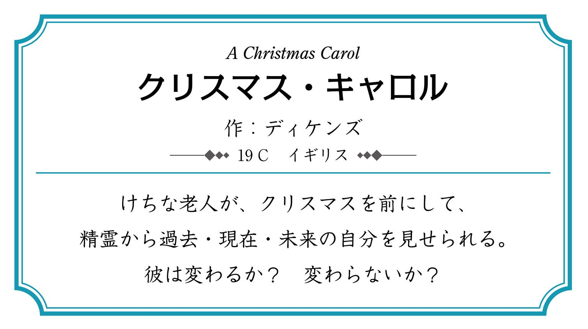
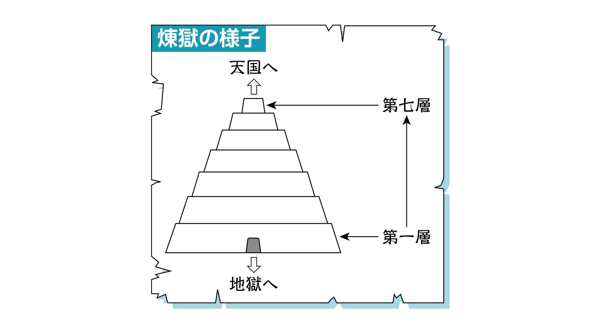

| おとなの楽習 (14) 世界の名作 おさらい | |
| 冨士本 昌恵 | |
| (2016) | |
はじめに
この本を手に取って、パラパラとめくり、あなたはどんな印象を持ちましたか？
ホメーロスにシェイクスピア......。知ってる、知ってる。学校の授業で習ったよ。ホメーロスは古代ギリシアの詩人で、『イーリアス』と『オデュッセイア』の著者。シェイクスピアはイギリスの作家で四大悲劇やなんかが有名──
などと思い出した方もいるのではないでしょうか。
本書で掲載している作品は、世界的に有名な作家の代表作です。おそらく、一度は耳にしたことがあったり、映画化されたものを目にしたりしたことがある作品ばかりなのではないでしょうか。それこそ、歴史の授業や文学史なんかでもね。
じゃあ、もう１つ質問。それはどんな話です？
『クリスマス・キャロル』や『ふしぎの国のアリス』などはわかるかもしれません。では、ほかの作品は？ ストーリーのわかる作品と、わからない作品、どちらが多いですか？
おそらく、内容のわからない作品が圧倒的に多数なのではないでしょうか。
ああ、何ということでしょう！ 作品名は知っている、作家が有名であることも知っている、しかし内容を知らないとは！
名作の背景には時代があり、国があり、そこに生きた人びとの生活があります。その息吹を肌で直接感じることはできませんが、名作の一節一節は、わたしたちにその断片を感じ取る手がかりを与えてくれています。
さあ、はじめましょう。かつてそこにあった冒険を、恋を。あなた目線で贅沢に。たとえそれが過去のものであったとしても、あなたが読み解き感じるそれは、現在進行形で感動を与えてくれるでしょう。
名作を読んで、登場人物に感銘を受け、当時の生活に思いをはせることがあなたの人生により深みを与えてくれますよう......なんて堅苦しいセリフは抜きにして。
ただ、読んで、感じて。それだけで十分です。あの時読んでおけばよかった！ なんて後悔はここに置いておいて、今からでも遅くはありません。
肩の力を抜いて、"名作のおさらい"のはじまりです。
もくじ
──◆ 名作の作者はこんな人だった◆──
シェイクスピアの四大悲劇の一つ。
亡霊から父の暗殺について聞かされたハムレット。復讐に迷う彼の「生か、死か、それが問題だ」という言葉は、「ハムレット」の代名詞となるほど有名になりました。
デンマーク王が亡くなって間もないうちに、王妃は王の弟と結婚した。城内では王子ハムレットの友人ホレイショーが、前王とそっくりの甲冑をつけた亡霊を見る。ホレイショーから亡霊の話を聞いた王子は、亡霊に会いに行った。
亡霊は、自分が前王であること、弟から耳に毒を流し込まれて殺されたことを告げる。ハムレットは復讐を誓うも苦悩する。
ハムレットは証拠をつかむため狂気を装う。宰相のポローニアスは、娘のオフェリアに失恋したせいだと考える。ハムレットはオフェリアに好意を持ち手紙を送っていたが、ポローニアスは、ハムレットにすげなくするよう言っていた。そこで様子を探ろうと、ハムレットと娘を会わせ、自分は王と共に隠れて聞いていた。ハムレットはオフェリアに冷たくあたる。その様子を見た王は、ハムレットが失恋ではない何かを隠していると勘づき、彼を国外に追放しようと考え始める。
一方、ハムレットは旅の一座に劇を演じてもらう。それは前王暗殺にそっくりの芝居だった。王は劇の途中で気分が悪くなり席を立つ。それを見たハムレットは暗殺を確信する。
王の具合が悪くなったことについて、ポローニアスは、王妃にハムレットを叱ってもらおうとする。そして自分は壁掛けの後ろに隠れた。しかし、王が隠れていると勘違いしたハムレットに刺し殺される。王は、ハムレットをイギリスへ追いやり、そこで暗殺を図る。
父の死にオフェリアは狂う。王は、ポローニアスの息子レイアーティーズにハムレットが殺したことを告げた。二人は剣の勝負を装って、イギリスでの暗殺を免れたハムレットを殺す計画を立てるが、その最中、突然オフェリアの溺死を知らされる。
勝負の日、レイアーティーズは切っ先に毒を塗った真剣を用意し、王も毒酒を杯に注いだ。しかし、酒は王妃がハムレットの幸運を祈るために飲んでしまう。レイアーティーズはハムレットに傷を負わせるが、傷を受けたことに怒ったハムレットとつかみ合いになり、剣が入れ替わる。その剣でレイアーティーズは刺されて死ぬ。死の直前、レイアーティーズは、剣に毒が塗ってあったことをハムレットに知らせる。その言葉から王の計画を知ったハムレットは、剣で王を刺した。復讐は遂げられたが、ハムレット自身も傷から入った毒で死を迎える。
シェイクスピア四大悲劇の一つです。
王家やその財産争いといった大きな話題ではなく、ある貴族の悲劇が描かれている話は、四大悲劇の中で唯一のものです。
ブラバンショーはヴェニスの元老院の議員である。一人娘のデズデモーナを大切にしていたが、デズデモーナは、ある晩、ムーア人の貴族オセローと勝手に結婚してしまう。
デズデモーナの結婚に衝撃を受けたのはブラバンショーだけではなかった。ヴェニスの紳士ロダリゴーもまた、デズデモーナを妻にしたいと思っていたのでショックを受けた。
折しも、オセローがトルコ軍を討つためにサイプラス島に向かうことになった。デズデモーナも願い出て、夫について行く。しかし戦うまでもなく、トルコ軍は嵐に遭ってばらばらになってしまう。オセローの副官キャシオーは、オセローより先に上陸してトルコ軍の有様を報告した。
このキャシオーは若くて身のこなしが美しい。彼が出世したことに、オセローの旗手イアゴーは嫉妬していた。イアゴーはキャシオーに酒を飲ませてロダリゴーとケンカさせ、オセローの信頼を失わせる。その上で、デズデモーナにとりなしてもらえばオセローとの関係も修復できるとキャシオーに助言した。一方で、オセローにはキャシオーとデズデモーナが浮気をしていると噓を言いオセローの心をかき乱す。
イアゴーはさらに悪巧みをする。妻のエミリアにデズデモーナのハンカチを盗ませると、それをキャシオーの部屋に置いた。キャシオーがデズデモーナのハンカチを持っていたことを知ったオセローは、デズデモーナを殺すことを決める。キャシオーの殺害については、イアゴーが引き受けた。
イアゴーの言葉ばかり信じるオセローは、エミリアがデズデモーナは浮気をしていないと告げても信じようとはしない。
イアゴーはロダリゴーをそそのかす。オセローがキャシオーに自分の代行をさせて帰国するのを妨げる必要があると。オセローと共に、デズデモーナも帰ってしまうからだ。ロダリゴーはキャシオーを殺そうとするが、失敗してしまう。そのロダリゴーをイアゴーは刺した。
オセローは、最後まで身の潔白を訴え続けるデズデモーナをベッドで絞め殺す。その後、エミリアからハンカチのいきさつを聞かされた。エミリアの告白に身の危険を感じたイアゴーは彼女を刺して逃げる。
事実を知ったオセローは、自分を刺す。そして、寝台に横たわるデズデモーナの遺体に口づけしながら息絶えた。
シェイクスピア四大悲劇の一つで、史実に題材を求めた作品です。前王を殺し、後に復讐を受けたスコットランドのマクベス王（在位1040～1057年）は実在する人物です。
マクベスやその夫人が魔女の言葉に翻弄される姿が悲劇的に描かれており、物語全体には、理性とは別の原理で動く人間のまがまがしさが漂っています。
ノルウェイ軍との戦いで活躍したスコットランドの将軍マクベスは、荒れ地で三人の魔女に出会う。魔女は、マクベスがコーダ領主になり、さらには王になる人物だと予言した。マクベスと一緒にいたバンクォーも、子孫が王になると告げられる。二人はその言葉を信じられないでいたが、じきに、マクベスをコーダ領主にとの勅命を受ける。マクベスは驚きながらも、「王になる」という魔女の言葉を信じるようになる。
一方、スコットランドのダンカン王は、息子マルカムを世継ぎに決める。予言の実現を危ぶむマクベスは、彼を邪魔だと考える。偶然にも、王がマクベスの屋敷を訪れることになる。
予言について手紙で知らされ、マクベス以上に野心を燃え上がらせていたマクベス夫人は、王の殺害を夫に持ちかける。マクベスはひるむが、夫人は手はずを整える。宴会が終わり、マクベス夫人は、王の部屋つきの二人に酒と麻薬を飲ませて目が覚めないようにする。マクベスは王を殺す。翌朝、王が殺されたことを知ったマルカムは、身の危険を感じイングランドに逃亡する。
王になったマクベスは、子孫が王になると告げられたバンクォーとその息子に刺客を送る。バンクォー殺害は成功したが、息子は逃がしてしまった。宴会場で刺客の報告を受けたマクベスは、バンクォーの亡霊に心を乱す。
再び魔女たちに予言を求めたマクベスは、魔女からバーナムの森が城を攻めてこなければ負けず、女が産み落とした男には殺されないと告げられる。また、イングランドに亡命し、マクベスに王暗殺の疑惑の目を向ける貴族マクダフに気をつけるようにも言われる。その予言を受けて、マクベスはマクダフの城内にいたすべての人を殺させる。
自分の城の状況を聞いたマクダフは悲しみ、マルカムと共にマクベスを倒す戦いに出立する。バーナムの森まで来ると、マルカムたちの軍は兵力を見誤らせるため、木の枝を頭にかざした。森が動いたと思ったマクベスは城外に出て戦う。そのマクベスの前にマクダフが現れた。マクベスが、女が産み落とした男には殺されないと言うと、マクダフは、自分は母親の腹を裂いて生まれたことを明かし、マクベスを討ち取ったのだった。
プロフィール
シェイクスピア
生没年：1564～1616
出身地：イギリス
ストラットフォード・オン・エイヴォン
生い立ち
シェイクスピアの父は商人で、町の有力者でもありました。裕福な家庭に生まれ育ったのですが、父の経済的な失敗によって一家は没落してしまいます。この当時のシェイクスピアに関する史料は少なく、どの程度までの教育を受けたのかも確かなことはわかっていません。18歳で結婚をし、その後単身ロンドンへ。1590年ごろから劇作に打ち込み、イギリス・ルネッサンスの気風と相まってさまざまな成功をおさめます。しかし、1611年に突如引退し、故郷であるストラットフォード・オン・エイヴォンに戻り余生を送りました。
主な作品
・『ロミオとジュリエット』 ・『ヴェニスの商人』 ・『ハムレット』 ・『オセロー』 ・『リア王』 ・『マクベス』
この物語は、無人島に漂着したロビンソン・クルーソーが、いかに生き延びるかという場面展開の面白さだけでなく、経済学の分野でも話題にされてきました。そのことは、マルクスの『資本論』などにも取り上げられていることからもわかります。
『ロビンソン・クルーソー』というと、無人島に漂着した主人公ロビンソン・クルーソーの冒険を思い浮かべる人も多いのではないでしょうか。その部分は、『ロビンソン・クルーソーの生涯と冒険』ともいわれる物語の第一部で、『ロビンソン・クルーソー』といえば、この第一部を表すこともあります。『ロビンソン・クルーソーのその後の冒険』が第二部、『ロビンソン・クルーソー反省録』ともいわれる第三部もあります。
第二部が終わったとき、ロビンソン・クルーソーは72歳になっています。まさに、彼の人生を描いた壮大な冒険譚といえるでしょう。
第一部
ロビンソン・クルーソーは1632年にヨーク市で生まれて、将来は船乗りになることを夢見ていた。そのことを両親は止めるが、1651年に、乗らないかと勧められたのをきっかけに家出をし、ロンドン行きの船に乗る。最初の航海は、嵐に見舞われ船が沈没するという大変なものだった。
そんなひどい経験をしたにもかかわらず、ロビンソン・クルーソーは船乗りを夢見るのだった。
その後も彼は船に乗り続け、病気になったり海賊に捕まったりした。ブラジルで農園をやるようにもなり、奴隷を求めて船を出すものの難破し、ロビンソン・クルーソー以外は亡くなってしまう。そしてロビンソン・クルーソーも、やっとのことで名も知らぬ島にたどり着く。1659年のことだった。
彼は船から食料や大工道具、猟銃やピストル、火薬などを運び出す。無人島にテントも作る。崖の位置など周りの状況も考えながら自分の住むべき場所を決めた。また、住処を柵で囲い、芝生を積み上げた壁を外側に作った。これで、彼の住処は人に見つかりにくくなった。また、狩りのためにも大切な火薬は、少量ずつ別々にしまうことにした。
彼の生活は少しずつ充実していく。偶然にも穀物を見つけ栽培を始める。彼は島を調べるうちに、ブドウやライムなどの果実を手に入れることもできた。ときには病に倒れることもあったが、彼は父の言葉や聖書の意味を思い出すのだった。
彼の生活は、祈りと食料探しなどに費やされた。カヌーやイス、食器やタイルに至るまで、必要なものは何でも自分で作った。道具を調えてパンを作ることもできた。囲いの中でヤギを飼うこともできたから、火薬がなくなっても食料は得られることになった。ヤギの乳からチーズやバターも作れるようになる。
一緒にいたオウムにロビンソン・クルーソーはよく話しかけた。オウムも次第に言葉を話すようになる。彼にとって、無人島に来てから初めて聞いた言葉だった。彼の家には、犬や猫もいた。そして、すっかり人との付き合いがなくなっていた。
ある日、彼は浜辺で裸足の足跡を見つけ、不安になる。やがて、彼は人を襲う者たちが上陸したのを見ることになる。彼らに対する怒りと、彼らに捕まる恐怖とで、ロビンソン・クルーソーは精神的に不安定になる。しかし、彼らはすぐには島にやって来なかった。
あるとき、ロビンソン・クルーソーは、人を襲う者たちが再び上陸するのを見る。襲われ、殺されようとする人物は二人いて、一人はすぐ殺された。だが、もう一人は逃げ出す。ロビンソン・クルーソーは逃げ出した男に呼びかけ、追ってきた者たちを銃で倒す。男は若かった。ロビンソン・クルーソーは彼に食べ物や寝床を提供する。若い男は服従する様子を見せた。ロビンソン・クルーソーは彼をフライデーと名づけた。彼を金曜日に助けたからだった。
フライデーは彼の忠実な使用人となった。ロビンソン・クルーソーもフライデーにヤギの肉を食べさせた。フライデーはヤギの肉が気に入る。ロビンソン・クルーソーは次第に言葉を覚えたフライデーと楽しい時間を過ごした。
再び人を襲う者たちが島にやってきた。今度連れてきていたのは、スペイン人とフライデーの父だった。ロビンソン・クルーソーとフライデーは彼らを助ける。
フライデーの父は、ロビンソン・クルーソーが自分たちの住んでいたところに行くのなら悪く扱われないようにすると言った。一方、スペイン人からはフライデーが住んでいた島の様子がうかがい知れた。スペイン人の話によると、そこには漂着したスペイン人やポルトガル人がいて苦労しているらしい。ロビンソン・クルーソーは彼らをこの島に連れて来ようと考える。人数が多ければ帆船を作れるかもしれなかった。助けられたスペイン人は、彼らが来れば食料が不足することを指摘した。ロビンソン・クルーソーたちは島の土地を開墾する。
十分な食料の準備ができた後、スペイン人とフライデーの父は漂着したヨーロッパ人たちを連れに島を出た。ロビンソン・クルーソーが島で生活を始めて27年の月日が過ぎていた。
だが、スペイン人たちが出かけていって８日経ったある日、イギリス人十一人が島にやってきた。彼らの船は島から少し離れたところに停泊している。怪しく思い、警戒しながら彼らに近づくとそのうち三人が縛られているのに気づく。
ほかの者が三人から離れたのを見計らって、ロビンソン・クルーソーは彼らに話しかける。すると、そのうち一人が、自分は船長で部下の反乱に遭ったのだと説明した。ロビンソン・クルーソーは、助ける代わりに自分たちをイギリスまで連れていってくれと言う。彼らは三人を連れてきた者たちと闘った。闘いの中で多くの者を捕まえる。中には死亡した者もいた。
船長は、船に残っている者たちは、降伏すると刑罰が待っているので、味方にならないだろうと言った。ロビンソン・クルーソーは、このままにしておけば、彼らが捕まえた仲間のことを心配して誰かこちらにやってくるだろうと考えた。そこで、十一人がやってきたときに乗っていたボートに穴を開け、中のものを持ち去る。
案の定、船から信号や砲撃があった。予想通り、新たなボートがこちらに差し向けられるのを確認する。先ほどの闘いで捕まっていた者たちの中で、一部の者がロビンソン・クルーソーたちの仲間になる。
ロビンソン・クルーソーは、フライデーたちに新たなボートの気をひかせ、彼らを船に戻らないようにさせる。
船長たちは無事に船を取り戻し、ロビンソン・クルーソーに合図した。とうとうロビンソン・クルーソーは島を出るための船を手に入れたのだった。
捕まえた者たちの一部は島に残ることになった。ロビンソン・クルーソーは、彼らに生活に必要な情報を与える。そして島に来るであろうスペイン人たちのことも知らせておいた。
こうしてロビンソン・クルーソーは船に乗り、1687年、イギリスに帰り着いた。
ブラジルの農園のことが気になったロビンソン・クルーソーは、リズボアに行って情報を得ることにする。以前の知り合いで、引退した元船長から農場のことを聞く。その話によると、皆からは、ロビンソン・クルーソーは死んだものと思われているとのことだった。訴訟手続きの後、ロビンソン・クルーソーは十分な財産を手に入れたのである。
彼はブラジルに行こうかと考えたが、結局農園を売った。そして甥を育て、自身も結婚し、子どもができた。しかし妻が死ぬと、航海に出ていた甥の勧めで、再び船に乗ることになる。
第二部
ロビンソン・クルーソーは、かつて暮らした島を再び訪れようという気分になっていた。そこへ甥がやってきて、インドや中国への航海を持ちかける。甥は、ブラジルに寄るので、例の島に行くこともできると言う。
フライデーと共に船に乗り込んだロビンソン・クルーソーは、例の島に上陸する。フライデーは、父が亡くなっているものと思っていたが、生きているのを知り喜ぶ。ロビンソン・クルーソーが助けたスペイン人もいた。旅の途中、フライデーが矢を受け亡くなるなど悲しいこともあった。
ブラジルやアジアを訪問した彼は、10年後、イギリスに帰って来た。彼は72歳になっていた。
ガリバーの奇妙な旅の形を借りた風刺小説です。
よく知られている小人の国、巨人の国の話だけではなく、空飛ぶラピュータ、死者を自由に呼び出せる人が住むグラブダブドリッブという小島、死ぬことのない人ストラルドブラッグ、人に似た野蛮な生き物ヤフーや、それに対し馬の姿をした礼儀正しいフーイナムなど、さまざまな国や生き物を目にします。その独特な世界は刺激的で、物語に出てくる名前や言葉が、芸術・情報分野に多大な影響を与えています。
リリパット国への冒険
船医であるガリバーは、最初の航海で、乗っていた船が難破してしまう。島に流れ着いたガリバーは、深い眠りについた。目が覚め、起きあがろうとして体が動かないことに気づく。全身が紐で縛られているのだった。その上、体に何かがよじ登って来る。よく見ると、背が６インチしかない人間だった。
ガリバーが漂着した島は、彼らリリパット国の島だった。リリパットの人は、数学や工学に長けており、軍艦を造るのも得意だ。ガリバーは縛られたまま、台車で首都の近くまで運ばれていく。ここでは、すべてがリリパット人に合わせたかのように小さい。ガリバーは敵意のないことを示し、皇帝や妃に気に入られ、自由の身になった。
このリリパット国では、同じように小さい人が住む、隣国ブレフスキュとの戦いが長引いていた。
そこでガリバーは、ブレフスキュ国の軍艦を持ち帰った。しかしこの行為は、面目をなくしたリリパットの海軍提督の恨みを買うことになる。ガリバーは処罰されないうちにブレフスキュ国に逃げた。そこで、海に漂うボートを見つけたガリバーは、ブレフスキュの皇帝にいとまごいして海に出た。やがてイギリス船に助けられ、無事祖国へと帰り着いた。
ブロブディンナッグ国への冒険
帰国して２カ月。再びガリバーは航海に出た。水の補給のために上陸したところ、そこに取り残されてしまう。やがてガリバーは、40フィートの麦が生える巨大な農場にたどり着き、巨人の農夫に出会う。農夫は主人のところにガリバーを連れて行った。
ここでは何もかもが大きい。猫は雄牛の３倍の大きさで、犬は象のようである。主人の娘は、よくガリバーの面倒をみてくれた。主人はこの娘を伴って、ガリバーを見せ物にして首都まで旅をする。そこで王妃の、ガリバーを買い取りたいとの要望に主人は快く応じた。国王は、ガリバーに、イギリスの財政状況について熱心に質問した。戦争の準備に膨大な金がかかると聞くと、王は驚く。
２年が経過したころ、部屋代わりの箱に入れられていたガリバーは鳥にさらわれ、海に落とされる。幸い、イギリス船に引き上げられて助かった。しかし、この２年というもの、巨人との生活に慣れきっていたので、やけに大声で話す癖が身についていた。
ラピュータ、バルニバービ、ラグナッグ、グラブダブドルップ、日本への冒険
帰国してしばらくして、またガリバーは旅に出た。途中で海賊に遭い、カヌーで海に放り出される。ガリバーは空飛ぶ島ラピュータに救いあげられ、そこには思索に耽る人々が住んでいた。あまりに考え込みすぎるので、時々耳や目を叩いてもらわなければ現実に戻れないくらいである。ラピュータは磁石の力で浮かんでいる。しかし、下界にある領土の上でしか飛んでいられない。磁石に感応する鉱物が、ほかのところにないからである。数学と音楽にしか関心を示さない王たちとは話が合わず、ガリバーはラピュータから下界のバルニバービに下りる。そこでは農業や食料面での研究がされていたが、夢物語に終わり、なかなか成果が出ない。そのため農地は荒れ果てていた。
日本を経由してヨーロッパに帰ろうと考えたガリバーは、日本と交流のあるラグナッグに行こうとする。その前に、グラブダブドルップという小島を訪ねた。そこには亡霊を召使いにした族長がいて、アレキサンダー大王、ハンニバル、ホメーロスなどの亡霊を呼び出してくれた。その後、ラグナッグ島ではストラルドブラッグという不死の人間に出会う。最初は不死について大いに希望を抱いていたガリバーだったが、不死である故に年老いてやせおとろえていく様を見て、不死を望まなくなった。オランダ人だと噓をついたガリバーは日本、オランダを経由して、イギリスに帰る。
フーイナムの国への冒険
先の冒険から約５カ月後、ガリバーは船長として出航した。しかし乗組員の裏切りにあい、未知の土地に置き去りにされる。そこで、貪欲で野蛮なヤフーという、人間そっくりの生き物に出会う。さらに、馬の格好をし、この土地を支配する理知的な生き物フーイナムにも出会う。フーイナムに救われたガリバーはその言葉などを覚えていく。フーイナムには、人間にはつきものの「噓をつく」などの言葉がない。フーイナムも、ガリバーを理性的なヤフーとして受け入れるようになっていた。ガリバーは自分がヤフーと違うことを必死に示そうとする。
しかし、ガリバーをヤフーの一味とみなすフーイナムもおり、ガリバーは退去を余儀なくされる。フーイナムの国を追われ祖国に帰ったガリバーだが、人間を見るとヤフーのことを想起してしまい、とても一緒にいられないと思う。妻や子に対してすら不愉快で煩わしく思うようになり、次第に家族ともうまく付き合えなくなり、馬小屋で馬と共に日々を暮らすのだった。
本作品は、当時のイギリスの養育院などのしくみについてもよくわかる作品です。イギリスでは、16世紀以降に救貧法が出されるようになり、また、産業革命後にも新救貧法が出されました。ディケンズはこの新救貧法や、養育院のありかたについて問題点を提示し、考えさせたといわれています。
ある日、救貧院に女性がたどり着いた。彼女の靴はボロボロで、結婚指輪はしていない。彼女は男児を産み落とすと息絶えた。そのため、男児の身分も両親の名前もわからない。彼は、オリバー・ツイストという名で仮洗礼を受けた。
オリバーは１歳を迎えないうちに、あまり十分に食料を与えられない救貧院の分院で育てられることに決まった。彼は小柄な少年に育つ。９歳になると再び救貧院に戻された。救貧院でも薄い粥一杯くらいしか与えられず、ここでもオリバーはひもじい思いをする。ある日、オリバーは粥をもっとくれるように院長に申し出る役になってしまい、その申し出に院長は激昂し、オリバーを監禁する。そして、オリバー・ツイストを引き取れば５ポンド出すという掲示物が出された。オリバーは葬儀屋に雇われることになった。
葬儀屋のサワペリー一家には、孤児ではないが慈善会で育てられたノアという子どもがいた。ノアが、知りもしないオリバーの母親を罵って遊んだので、オリバーは怒り彼に飛びかかる。それが原因でサワペリー一家にせっかんを受け、オリバーは身の回りの物を持って葬儀屋を出て行った。
オリバーは徒歩でロンドンに向かう。７日歩いたところで、ジャック・ドーキンズという少年に出会う。少年はオリバーをロンドンに連れて行き、ユダヤ人の老人に引き合わせる。身なりのよい老人は、子どもたちに泥棒をさせていた。スリの子どもたちと出掛けたオリバーは、ドーキンズが本屋で紳士からスリを働くのを見て、そのことに気づく。しかし、被害にあった紳士から犯人に間違われ、捕まってしまう。裁判で、オーストラリアでの重労働を課せられそうになるものの、本屋の主の証言で無罪になる。オリバーを犯人と間違えた紳士ブラウンロー氏は、けがをした彼を馬車で運び、看護を受けられるように取り計らう。
目が覚めると、オリバーはベドウィン夫人という老婦人に看護されていた。オリバーが回復すると、ブラウンロー氏も顔を出した。しかし、ブラウンロー氏の使いに出たとき、オリバーは再度、泥棒の一味に捕まってしまう。酷い目に遭わせようとする男たちに対し、一味のナンシーという女性がオリバーをかばってくれた。しかし、オリバーはナンシーたちと一緒に泥棒に行くよう命じられてしまう。泥棒に入った先でオリバーは撃たれ、泥棒に入った家の人に保護される。
保護したメイリー夫人や養女のローズは、腕を撃たれた少年をかわいそうに思う。さらに、ローズの願いを聞き入れた医師ロスバーン氏の機転で、オリバーは警察に捕まらずに済む。
ローズたちの別荘で、オリバーは幸せな数カ月を暮らすが、突然ローズが倒れ、オリバーはロスバーンに知らせるため、手紙を市場町まで持って行く。その途中、オリバーを見て怒り狂う男性に出会う。
ローズは危ないところを助かった。ローズを心配したメイリーの息子ハリーも駆けつける。彼はその場で彼女に求婚するも、ローズはこの申し出を断る。一方、モンクスという男が、オリバーの出生について、当時のことを知る救貧院の人に尋ねていた。そして、オリバーの母親から、看護師のサリーが黄金のロケットと、結婚指輪を盗んだことを聞き出す。ロケットの内側にはアグネスという文字が刻まれていた。モンクスは、泥棒の一味に、オリバーを泥棒にしてくれたら金を出すと告げた。なぜなら、モンクスはオリバーの金を持っていたからだった。モンクスは、オリバーの兄だったのである。
これを聞いたナンシーは、ロンドンに滞在していたローズに知らせに行く。オリバーも、ブラウンロー氏に会うことができた。ローズと共にいたロスバーン氏やブラウンロー氏は、オリバーの素性を調べて、彼に財産を戻してやろうと考える。そして、メイリー夫人はその間、ロンドン滞在を続けることを告げた。
一方、泥棒一味のユダヤ人の老人は、ナンシーの様子がおかしいことに気づく。最初、彼女のそばにいるサイクスに嫌気がさしているのだろうと思い、サイクスを殺すことを考えた。
ナンシーの様子がおかしかったのは、そんなことではなかった。ローズとの約束を果たすために、家を抜け出したかったのだ。とうとう約束を果たすと、ナンシーはモンクスについて彼女たちに話した。
しかし、ナンシーは跡をつけられていた。事情を告げられたサイクスは怒り、彼女を殺し逃亡した。
モンクスを追いつめる動きは、着実に進んでいた。ブラウンロー氏はモンクスに会い、モンクスの両親の話をする。離婚後、モンクスの父が結婚を誓った人との間に子どもをつくったことを告げ、モンクスとその母が、父の遺言状を破いて財産を自分たちのものにしたことを責める。ブラウンロー氏は、実はモンクスの本名が、エドワード・リーフォードであると知っていた。なぜなら、ブラウンロー氏が、モンクスの父の旧友だったからだ。そして、一切を白状することを約束させる。
ちょうどそのころ、泥棒一味のユダヤ人の老人が捕まり、サイクスが死んだ。
さて、オリバーの母親には年の離れた妹がいた。そして、ローズがその妹だったのである。すべてを知ったハリーは、以前と変わらない愛情を彼女に注ぎ、再び求婚する。オリバーはブラウンロー氏の養子となった。ブラウンロー氏は、オリバーが成長するにつれ、彼に旧友の面影を見出すようになっていた。

ディケンズの作品の中で最もよく知られた小説だと言えるでしょう。けちな老人スクルージの不思議なクリスマスの物語です。この物語は、実際に12月に発表されました。
スクルージ・マーレイ合資会社の経営者、スクルージはけちな男だった。そして、商売ばかり気にしている男だった。そのため、友人マーレイの葬式のときもあまり落ち込まなかった。
クリスマス・イブも、スクルージは仕事で忙しかった。甥がおめでとうを言いに来るが、スクルージはまったく面白くない。もちろん、寄付を募りに来た人々も追い返してしまう。
仕事を終えて帰宅したスクルージは、幽霊となったマーレイの訪問を受ける。鎖に繋がれて、休みのない旅をさせられている最中であった彼は、スクルージに、こうならないで済むチャンスがあると伝える。そして、三人の精霊が、彼の運命を変えるためにスクルージのもとに現れることを予告して消え去る。
その日の午前１時、第一の精霊がやってきた。過去のクリスマスの精霊だ。精霊はスクルージを、子どものころの世界に連れて行く。そこで、クリスマスを祝う人々の声に喜びを感じる自分に戸惑う。また、仲間はずれにされて一人で本を読んでいる自分や、今はもう亡くなった妹に出会う。そして、奉公先でクリスマス・イブを祝った楽しさも思い出した。一方で、金ばかりにとらわれて愛を忘れてしまい、恋人を失ったことも思い出す。恋人は、今は結婚して幸せになっていた。
その次の晩は、現在のクリスマスの精霊が現れた。町の人々はクリスマスで機嫌がよい。精霊によってスクルージは、雇っている書記クラチットの家に連れて行かれた。貧しくも幸せに暮らす一家には、足の悪いティムという少年がいた。今度は甥のところに連れて行かれる。そして、自分のために乾杯してくれるのを見て、明るい気持ちになる。
その次は、未来のクリスマスの精霊が現れた。精霊は彼を死んでしまった男の所に連れて行く。たった一人で死んでいった男のことを、人々は悪く言っていた。男の部屋には泥棒が入り、身ぐるみ剥がれた男の遺体が、ベッドに横たわっている。精霊は、男の顔を覆っているものをのけるよう指示したが、スクルージにその気力はなかった。スクルージは、その男が自分自身だと気づいたのだ。
目が覚めたスクルージは、心を入れ替える。書記に贈り物をし、多額の寄付をし、甥を訪ね、生涯クリスマスを祝うようになった。
プロフィール
ディケンズ
生没年：1812～1870
出身地：イギリス
ポーツマス

生い立ち
ディケンズはあまり裕福でない家庭に生まれ、金銭にだらしない父が投獄されるなど、不遇の少年期を過ごしました。幼くして靴墨工場で働いた時期もありましたが、父親の出獄後は学校に通います。成長してからは新聞記者として身を立て、ロンドンの様子を描いた作品を発表します。続いて発表した『ピクウィク・ペイパー』が大変な人気を博し、彼は国民的な作家となりました。彼の作品『デイヴィド・コパフィールド』は自伝的小説で、ディケンズ自身の人生と重ね合わせられる箇所が多くあります。また、この作品に登場するミコーバーのモデルとなった彼の父は、作中ではいかにも楽天家といった人物として描かれています。
主な作品
・『オリバー・ツイスト』 ・『クリスマス・キャロル』 ・『デイヴィド・コパフィールド』 ・『二都物語』
シャーロット・ブロンテの自伝的要素のある小説。最初は、カラー・ベルという筆名で出版されました。彼女は、女流小説家として知られたブロンテ姉妹の一人として知られています。シャーロットには姉が二人いましたが、寄宿学校に入ったあと、肺炎で亡くなってしまいました。原因は、学校があまり生徒の健康に気をつかわず、厳格であったためだといわれています。この体験は、『ジェイン・エア』で生かされました。
ジェインの深い愛情を描いた物語は、出版当時も人々に支持されましたが、現在でも胸に迫るものがあります。
ジェイン・エアは、伯母の家に居候していた。両親は病気ですでになく、伯母もその子も、ジェインの陰気さと理屈屋なところを嫌って虐待を続ける。ある日、精神的に参ってしまったジェインのもとに医者が来て、学校に行きたいかと尋ねた。彼女は行きたいと答え、ローウッド寄宿学校に入学する。
入学した学校の生徒は、親を亡くした子どもばかりで、食事の量も少ない。冬には凍傷を負ってしまうほど環境もよくない。伝染病も流行りやすい。ただし、ここには自分を認めてくれる先生や友人がいた。環境もじきに改善される。チフスが流行したとき、環境の悪さが知れ渡り、学校はよりよい場所に移されたのだった。ジェインは６年間学んだ後、助教師となり勤める。だが恩師が学校を去ったのを機に、家庭教師の職を探し、新聞に広告を出す。その結果、ソーンフィールドの家での家庭教師の口が見つかり、そこで働き始める。
ロチェスター氏はソーンフィールドの家を空けることも多く、そのくせ、思いがけなく帰ってくる人物だ。少女を一人養っており、フランス生まれの少女は、ジェインがフランス語を話せるのを聞いて喜ぶ。また、帰ってきたロチェスター氏もジェインを気に入ったようだった。
ジェインは初め、ロチェスター氏を、35歳くらいで陰鬱な感じがする、疑り深い人物だと考えていた。しかし話をするうちに、少女が以前の恋人の子であることや、彼がそれほど陰気でもないことがわかってくる。次第に、ジェインは彼に好意を持つようになっていた。
しかし、幸せな日々の中にも不可解なことがあった。突然、もの悲しい笑い声が聞こえるのだ。そしてある日、奇妙な笑い声がしたかと思うと、辺りに焦げ臭い匂いが漂った。ロチェスター氏の寝室で火事が起きたのだ。
そのような生活の中、ジェインはついにロチェスター氏に自らの想いを伝える。ロチェスター氏もジェインを愛しており、結婚しようということになる。しかし結婚式当日に、彼に狂った妻がいたことが発覚する。以前に聞いた奇妙な笑い声の主は、妻の声だった。ジェインはショックを受け、彼のもとを逃げ出すように去る。
持ち合わせのお金を使って、ジェインは遠く離れたウィットクロスというところまで行った。所持金が尽き、それ以上は何もできず餓死しそうになる。危ういところを牧師に助けられ、救われたジェインは、牧師の妹たちとしばらく暮らす。やがて牧師から、村の小学校の教師にならないかと言われた。ジェインは教師として働き始める。
働き始めてしばらくしたころ、牧師が訪ねてきて、ある話をした。それは、ソーンフィールドの家から出て行った家庭教師を捜しているという広告の話だった。その家庭教師はジェイン・エアといい、もとは金持ちの娘だったが、早くに両親を亡くしたため、義理の伯母に育てられていた人物だという。ジェイン・エアには金持ちの叔父がいたが、亡くなってしまい、彼女が２万ポンドという財産を相続することになったのだった。話すうちに、牧師がジェインのいとこだということが判明した。すでに仲よくなっていた牧師の妹や牧師と、ジェインは財産を分かち合う。
ジェインは牧師に教えられ、インド語を学ぶようになる。また、ロチェスター氏の様子を知らせて欲しいと、ソーンフィールドの家に手紙を出した。しかし返事は来ない。ジェインは不安を感じ始めた。
ある時、ジェインは牧師と散歩に出た。そして、彼から、インドへ向かうつもりであること、ジェインにも妻として一緒に来て欲しいことを告げられる。ジェインは、義理の妹としてなら同行してもいいと答える。その答えに、牧師はなかなか納得せず、気まずい時が流れた。
牧師の言うように結婚してしまいそうになったときだった。ジェインは、誰かがどこからか自分の名を呼ぶのを聞いた。ロチェスター氏の声だ。ジェインは決心した。ロチェスター氏のもとを訪ねなければと。
ソーンフィールドに着いたジェインは愕然とする。館は無惨に崩れ落ちていた。石には、火で焼けた跡がある。火事だった。顛末を尋ねると、ロチェスター氏の妻が、自分の部屋と家庭教師が使っていた部屋に、火をつけたのだという。家にあった財産はすべて燃えてしまっていた。ロチェスター氏の妻も、屋上から身を投げて死んでいたのだという。ロチェスター氏は焼け跡から見つかった。彼は視力をほとんど失い、片腕も切断せざるを得ない状況だった。その事件以来、ロチェスター氏は館から30マイルほど離れたところにある家で、一人でひっそりと暮らしているという。彼の養っていた少女は、学校に入っているとのことだった。
寂しいところにある古い館で、老犬とともにロチェスター氏は暮らしていた。世話をする者はたった二人。館を訪れたジェインは、ロチェスター氏と再会する。彼は最初、ジェインの声がするので、とうとう自分は発狂したと思ったのだった。しかしジェインの存在を認めると、戸惑いながらも喜んだ。変わらぬ愛を確かめた二人は、結婚したのだった。
エミリ・ブロンテが残した作品です。最初は、エリス・ベルという筆名で出されました。
主人公ヒースクリフは、悪魔的な性格を持っていたとも評されます。復讐の中で多くの人の人生を狂わせていく彼ですが、キャサリンを思う気持ちは一途だと言えるでしょう。
主人公の愛情をめぐる複雑な心理と自然描写が、この物語の雰囲気を作り上げています。
1801年ヨークシャー。美しい田舎のスラシクロスという屋敷を借りたロックウッドは、その持ち主ヒースクリフの住む嵐ヶ丘（ワザリング＝空が荒れる）という屋敷を訪ね、手荒い歓迎を受ける。嵐ヶ丘で、ロックウッドはキャサリンという女性が書いた古い日記を見つけ、それを読んでいるうちに、キャサリンと名乗る幽霊に会う。悲鳴を上げたロックウッドのところに駆けつけたヒースクリフは、その幽霊に屋敷に入るように呼びかけた。
夜が明け、スラシクロスに戻ったロックウッドは、かつて嵐ヶ丘で働いていたという家政婦エレンから、昔の話を聞く。
ヒースクリフは、キャサリンの父アーンショー氏がリバプールで拾ってきた、色黒で黒い髪をした男の子だった。
アーンショー氏は、自分の子どもたちはあまり可愛がらず、ヒースクリフを可愛がった。彼は次第にアーンショー家での力を強め、わがままを言うようになっていく。キャサリンは彼と仲がよくなるが、キャサリンの兄のヒンドリーは彼を快く思わず、いじめた。時が経ち、成長したヒンドリーは、大学に進学し家を離れる。
ほどなくアーンショー氏が亡くなると、葬式のためにヒンドリーが戻ってきた。新しい嵐ヶ丘の主人となったヒンドリーは、ヒースクリフに辛くあたる。ヒースクリフとキャサリンは二人でいることが多かったが、ある日、キャサリンが隣家スラシクロスの犬に噛まれて帰って来られなくなる。スラシクロスに滞在する間、彼女はその家に住む兄妹と親しくなり、次第にお嬢様らしいおしゃれをしたりする女性へと変化する。
キャサリンが嵐ヶ丘に帰ると、スラシクロスに住む兄妹がしばしば訪ねて来るようになった。兄はエドガー・リントン、妹はイザベラという。そんな生活が続く中、ヒンドリーの妻が出産後に亡くなってしまう。衝撃を受けたヒンドリーは、ヒースクリフをさらに虐待するようになった。やがて、エドガーがキャサリンに求婚する。キャサリンはヒースクリフを好きだったが、身分やさまざまなことを考えて、エドガーとの結婚を承諾した。事情を知ったヒースクリフは嵐ヶ丘を出て行く。ヒースクリフもまた、キャサリンを愛していたのだった。
３年後、ヒースクリフは立派になって戻ってきた。ヒンドリーは彼の金を目当てに一緒に住まないかと提案し、金を借りる。キャサリンとエドガーの関係も、彼の登場でうまくいかなくなり始めた。さらに、イザベラがヒースクリフに恋をして結婚してしまうという問題まで起こる。キャサリンは心労もあって病気になり、今わの際でヒースクリフと再会するものの、子どもを産み亡くなる。子どもはキャサリン・リントンと名付けられた。
その後、イザベラはヒースクリフが冷淡で凶暴なところのある性格だと気づき、嵐ヶ丘を逃げ出す。逃げた先で男児を産んだイザベラは、子どもにリントンという名をつけた。
ヒンドリーが亡くなると、嵐ヶ丘はヒースクリフのものになった。ヒンドリーの息子ヘアトンは、すっかりヒースクリフの言いなりになっている。やがてイザベラが亡くなると、息子のリントンは嵐ヶ丘で暮らすようになる。病弱なリントンに、父ヒースクリフは厳しかった。一方で、キャサリン・リントンを嵐ヶ丘に招き、強引にリントンと結婚させるように仕向ける。エドガーの死後、リントンも死亡した。リントンは妻の財産もすべて父に遺した。そのため、スラシクロスもヒースクリフのものになったのだ。
エレンから嵐ヶ丘の話を聞いたロックウッドは、スラシクロスを後にする。
翌年、ロックウッドは嵐ヶ丘を訪れたが、そこではさまざまな変化が起こっていた。リントンの妻であったキャサリンは、ヒンドリーの息子ヘアトンと仲よくするようになっていた。彼を味方にすることで、キャサリンは嵐ヶ丘での力を強めていく。キャサリンは、ヘアトンがヒースクリフを大切に思っていることを知り、ヒースクリフの悪口を言わないようになっていた。
一方で、ヒースクリフは、彼らの中に自分の愛したキャサリンの面影や、かつての自分の姿を感じ心を乱す。ヒースクリフは、夜に外を歩いたり、食事をとらなかったりという奇行が目立つようになった。しかし不思議なことに、外から帰ってきた彼の目には喜びの色があった。
ある朝、エレンはヒースクリフの部屋の窓が開いているのに気づく。エレンが部屋に入ると、ヒースクリフは雨に濡れ、目には喜びの色をたたえたままの顔で死んでいたという。
ヒースクリフの墓は、キャサリン、エドガーの墓と並んでいた。ロックウッドは彼らの静かな眠りについて考えるのだった。
プロフィール
シャーロット・ブロンテ
生没年：1816～1855
エミリ・ブロンテ
生没年：1818～1848
出身地：イギリス
ヨークシャー
生い立ち
シャーロットは三女、エミリは四女として牧師の家に生まれました。五女のアンが生まれてほどなく、母がこの世を去っています。母の死後、長女、次女とともにランカシャーの学校に入学しますが、ここで長女と次女が死亡します。牧師館に戻った後、二人は文学作品の執筆を始めます。1847年に『ジェイン・エア』・『嵐ヶ丘』をそれぞれ発表しますが、前者が好評を博したのに対し、後者の評価が高まるのは、エミリの死後でした。翌年、エミリが30歳の若さで結核により死亡してしまいます。シャーロットは後に結婚もしますが、それでも39歳の若さでこの世を去りました。
主な作品
シャーロット・ブロンテ ・『ジェイン・エア』 エミリ・ブロンテ ・『嵐ヶ丘』
イギリスファンタジーの代表ともいえる作品。チェシャ猫や帽子屋など、風変わりなキャラクターも魅力的です。
作者のルイス・キャロルは数学者でした。そして、アリスという少女も実際におり、『ふしぎの国のアリス』は、ルイス・キャロルがアリスに話した物語がもとになっています。
ある日、姉とやってきた土手で眠気を感じていたアリスの目の前を、服を着た白兎が、時計を気にしながら走り過ぎた。驚いたアリスは、白兎の後を追って穴に飛び込んでしまう。
穴は果てしなく深かったが、着いたところはテーブルとカギのある広間だった。カギが合う扉を見つけるものの、扉が小さくアリスの大きさではとても入れそうにない。テーブルの上に「私を飲んで」と書かれたビンが置かれているのに気づいたアリスは、それを飲んでしまう。すると体がだんだん小さくなり、扉を通ることができた。また、扉を抜けた先で「私を食べて」と書かれたケーキを見つけ、アリスはそれを食べてしまう。すると今度は大きくなってしまい、もとの場所に戻ることができなくなってしまった。泣くアリスの足もとには水たまりができた。
しばらくして、白兎が残した扇で小さくなったアリスは、この涙の海を渡り、岸にたどり着く。再会した白兎の家でも、アリスは、大きくなったり小さくなったりして彼らを混乱させる。トカゲのビルなどは、大きくなったアリスに、空高く蹴り上げられてしまう。小さくなったアリスは、森で芋虫に出会う。芋虫がキノコの片側を食べると大きくなり、反対側を食べると小さくなると教えてくれたので、アリスはキノコの両側をちぎって持って行くことにした。
アリスは、長い爪とたくさんの歯を持ったチェシャ猫に道を教えられ、三月兎を訪ねる。そこでは、帽子屋とヤマネと一緒に奇妙なお茶会が行われている最中であった。帽子屋の時計は狂っていて、いつがお茶の時間だかわからない。アリスはこのお茶会を辞し、木についた扉を通ってもとの広間に出た。今度はキノコを上手く使い、カギを使って扉を通り抜けると、そこは庭園だった。そこではトランプの庭師が言い争っていた。怒りっぽい女王様に見つかったアリスは、クローケーをやることになる。丸まったハリネズミを、首を伸ばしたフラミンゴで打つという奇妙な競技だ。さらに、パイを盗んだことに対する裁判もまた奇妙なものであったので、アリスは怒り、女王たちに向かって反論する。すると、トランプが一斉に舞い上がり、アリス目がけて落ちてくる。
アリスはそこで目を覚まし、姉がアリスの顔にかかった木の葉をはらっているのに気づいたのだった。
ふとしたことで見つけた宝の地図をもとに航海に出かけ、海賊たちと戦う──といった、宝探し物語の王道が描かれています。スティーヴンソンといえば『宝島』、というくらい有名な作品でもあります。『宝島』はその後、映画化、アニメ化と、さまざまなメディアで広められています。
ジム・ホーキンズ少年の父は、「ベンボウ提督亭」という宿を経営していた。そこへ、古い船乗りの歌を歌う、どこか怖い感じのする男ビリーがやってくる。ビリーはジムに、銀貨をやる代わりに片方の足がない船乗りを見張るように言う。
ビリーはラム酒が好きだった。その様子を見て、宿に来ていた医者のリウジーは、酒をやめないと命が危ないと告げる。
ある日、宿にやってきた黒犬という人物が、ビリーの知り合いらしく振る舞った。ビリーも相手を知っているようだ。しかし、ビリーが黒犬を斬りつけた後、倒れてしまう。医者は、彼は発作を起こしたのだとジムに言った。ビリーは、１週間は安静にしている必要があった。
人物紹介
◆ジム・ホーキンズ
地図を手に入れた少年
◆リウジー 医師
◆トリロニー 地主
◆ジョン・シルバー
コックとして雇われるが、実は海賊
◆ベン・ガン
宝のある島に置き去りにされた海賊
その晩、病気にかかっていたジムの父が亡くなる。
父の葬儀の翌日、ジムは目の見えない男につかまりビリーのもとに案内させられる。その男と対面した後、ビリーは発作を起こして倒れ、亡くなってしまう。
ジムの母は、ビリーの残した荷物から、払ってもらっていない分の金をもらうことにした。だが、途中で宿を脱出せざるを得なくなる。このとき、ジムはビリーの荷物から防水布で包まれた物をもらっていった。やがて、目の見えない男たちがやってきて、ビリーの荷物を探り始めた。そこへ、男たちの仲間の合図があったために目の見えない男以外は逃げ出し、彼は密輸監視官の馬車に轢かれて死んでしまう。
ジムは、手に入れたものをリウジーと地主のトリロニーに見せる。その中に、宝のありかを示した地図が入っていたのである。彼らはヒスパニオラ号という船で、その島に向かうことにした。船には、トリロニーの雇った船長スモレットや、コックのジョン・シルバーたちがいた。ジョン・シルバーは片方の足がなかった。
ある日ジムは、シルバーがフリント船長という人のもとにいた海賊だったことを盗み聞く。シルバーは、宝を手に入れ船を乗っ取ることを考えていたのだった。ジムは、リウジーや船長たちにすべてを話す。
島に到着すると船長は上陸してもよいと告げた。そしてジムは、自分が何の役に立てるか考え、シルバーたちと共に島に行く。そこで、シルバーが自分たちの味方にならなかった船員を殺しているのを見てしまう。ジムは逃げ出した。
ひたすら逃げているうちに、ジムは一人の男に出会う。ベン・ガンと男は名乗った。置き去りにされて３年、人と話していないという。
一方、ジムがシルバーたちと出掛けたと知ったリウジーは不安を覚える。彼は島の中で丸太小屋のある砦を見つけ、そこに船の中の荷物を運ぶ。
ジムはベン・ガンと一緒にいたが、国旗が掲げられているのを見て、丸太小屋に近づく。別れ際にベン・ガンは、自分に会いに来るときの手順を知らせた。
シルバーが丸太小屋の方にやってきた。そして、船長に宝の地図が欲しいと言う。交渉はまとまらず、船長はシルバーが攻めてくるだろうと言う。海賊側と船長側は、とうとう撃ち合い、切り合って戦い始めた。双方に死者と負傷者が出た。船長も負傷するが、一命は取り留める。
リウジーは、ベン・ガンに会うためか砦から出て行ってしまった。そしてジムも、ベン・ガンが言っていた小舟を探しに行く。ベン・ガンの小舟を見つけたジムは、ヒスパニオラ号の錨綱を切った。ヒスパニオラ号は流される。船にぶつかりそうになったジムはとっさに飛び移る。船には負傷した海賊が乗っていた。ジムは彼らの指揮をとり、船を北の入り江へと導く。だが、海賊は裏切り、ジムを殺そうとする。ジムはピストルで海賊を撃ったが、彼も海賊が投げたナイフで、マストに肩を釘づけにされる。幸い深手ではなく、ジムは体をゆすってナイフから逃れた。
丸太小屋に戻ってみると、そこは海賊たちのたまり場になっていた。ジムはシルバーに捕まってしまう。シルバーの話によると、リウジーたちはここを出ていき、宝の地図も渡して行ったのだという。ほかの海賊がジムを殺そうとするが、シルバーはかばう。そして、海賊たちが立ち去った後、シルバーは、ジムを味方につけておいた方がいいのだと、ジムに言った。
シルバーは、これまで仲間からリーダーに選ばれていたが、仲間たちは今度は彼を免職した。シルバーは宝の地図を彼らに示す。丸太小屋には、リウジーが訪ねてきた。ジムは、外に出てリウジーと話し、船を隠したことを知らせる。
海賊たちは、とうとう宝を探しに出かけた。しかし、宝はなかった。すでに見つけられていたのだ。シルバーとジムの立場が悪くなったとき、リウジーやベン・ガンが飛び出してくる。
宝はベン・ガンが見つけて、運び出していた。ベン・ガンから話を聞いたリウジーは、丸太小屋ではなく、ベン・ガンのところに住むことにしたのだ。
財宝は、船で運び出された。途中でシルバーは、財宝の一部を奪って逃げ出す。あとの宝は、ジムたちが山分けしたのだった。
『ジーキル博士とハイド氏』はスティーヴンソンの著作の中でも一風変わった作品だと言えるでしょう。彼は、紀行文を書き、後にはサモア諸島に移住した人物ですが、この作品で描かれるのは二重人格であり、善と悪でもあります。タイトルが二重人格の代名詞となった作品としても有名です。
弁護士のアタスンは、遠縁のリチャードと散歩をしていた。その際、二人はある古い建物のそばを通りかかる。リチャードはその建物のドアに、奇妙な男が入っていったのを知っていた。その男はハイドといい、道でぶつかった少女を踏みつけ、それを責めた周りの人の求めに応じて、大金を払った。その支払いのため小切手を取りに入ったのが、そのドアだったというのだ。それは、アタスンの友人ジーキル博士の家の裏口のドアだった。
ジーキルから遺言状を預かっていたアタスンは、暗い気持ちになる。遺言状には、財産をハイドに渡すように書いてあったからだ。ジーキル博士が３ヵ月以上失踪した場合も、ハイドが財産をもらうことになっていた。アタスンはハイドについて何も知らなかった。しかし、リチャードの話を聞いて、ハイドが何者か調べようとする。手始めに、アタスンとジーキルの共通の友人ラニヨン博士を訪ねるが、彼もハイドを知らないと言う。
次に、例のドアのところに通い、ハイドと会った。アタスンはハイドに恐怖と嫌悪を覚えた。それはハイドの奇妙な顔立ちや、凶暴な態度だけでは説明できないものだった。
アタスンはジーキルに会い、遺言状の内容に反対だと伝えた。しかし、ジーキルは遺言状どおりにして欲しいと言う。
ある晩、ハイドがカルーという老紳士を杖でめった打ちにして殺すという事件が起こる。杖はジーキルのものであった。アタスンはジーキルのもとを訪ねる。ジーキルは、ハイドが逃亡することを知らせる手紙を送ってきたと言いそれを見せるが、筆跡は、字の傾斜こそ違うものの、ジーキルの字と同じだった。
ジーキルがアタスンと会わなくなったころ、ラニヨン博士が病気になった。博士の死後、アタスンは博士から、ジーキルが死ぬか失踪したときに開封するよう指示のある書類を受け取る。やがて、ジーキルの家の執事が、主人の部屋でハイドの声がすると言って訪ねてきた。アタスンと執事が部屋のドアを破ると、ハイドが自殺していた。ジーキルの手紙が見つかり、日付からその日の朝まで同じ部屋で生きていたことがわかる。アタスンは、ラニヨン博士の残した書類と、ジーキルの手紙を読む。そして、アタスンは、ハイドはジーキルが薬品を飲んで変身した人物であり、人間の二面性のうち悪の部分を純粋に持つ人物であることを知ったのである。
ヨーロッパ最初の文学とされ、後世の作品にも影響を与えた物語です。『イーリアス』は、ドイツの考古学者シュリーマンが、トロイア遺跡を発掘するきっかけになった作品だという話でも有名です。
トロイア戦争の末期のことである。アカイア軍の総帥アガメムノーンは、アポロンの神殿の神官クリュセスの娘クリュセイスを奪い、自分のもとに置いた。父クリュセスは娘を返してくれるように頼んだが、アガメムノーンは承知しない。クリュセスの祈りを聞いたアポロンは、アカイア軍を疫病などで苦しめたのだった。
アキレウスたちは、アガメムノーンにクリュセイスを返すように言う。アガメムノーンはその代償として、アキレウスのところにいた女性ブリセイスを自分のところに来させるよう要求する。アキレウスは怒り、母である女神テティスに、ゼウスへ頼んでアカイア軍を痛い目に遭わせてくれるように訴える。そうすることで、アガメムノーンにもアキレウスを軽んじることがどういうことか知らせることができるというのだ。
人物紹介
◆アカイア
アガメムノーン
アカイア軍総帥
メネラオス
アガメムノーンの弟、スパルタ王
アキレウス
母が女神の英雄
パトロクロス
アキレウスの友人
◆トロイア
ヘクトール
トロイアの王プリアモスの子
パリス
ヘクトールの弟
ヘレネー
メネラオスの元妻で、パリスに連れて来られた
ゼウスはアガメムノーンに夢を見させ、今こそ戦うときであると思わせる。アガメムノーンは、兵士たちの気持ちを試すために国に引き上げようと言う。すると、皆帰り支度を始めてしまうが、オデュッセウスが兵士たちにアガメムノーンの真意を話し、兵士たちを帰国させずに済む。戦いが始まろうとしていたがアキレウスは動かなかった。戦うことを拒んだのだ。
さて、トロイア側にはヘレネーという女性がいた。元はスパルタ王メネラオスの妻であった女性である。彼女はトロイアの王の息子パリスの恋人だった。彼女のもとからパリスが出てくるのを見たメネラオスは、彼に襲いかかる。パリスは味方の方へ逃げ込んだが、それを見ていた兄ヘクトールは弟を叱る。パリスは、メネラオスに、決闘をして勝った方がヘレネーや財産を手に入れることを願い出た。
パリスとメネラオスは一騎打ちをすることになった。メネラオスは強かった。だが、とどめが刺せないでいる間に、女神アプロディテがパリスを救った。アガメムノーンはメネラオスが勝ったと判断する。
ゼウスの妻ヘレはゼウスがトロイア軍の味方をしていることに怒る。そこで、ゼウスは女神アテネにトロイア軍が裏切るように言う。アテネはパンダロスをそそのかし、メネラオスに矢を射かけさせる。メネラオスは負傷するが、命にはかかわらなかった。戦いは再び始まる。戦いは激しくなり、双方に多数の死傷者が出たのだった。
弟ヘレオスに言われて、ヘクトールはアテネの杜に女性たちを集めて祈ってもらうことにする。また、ヘクトールを頼りに思っている妻に会い、自分は勇敢に戦うことや、いつか皆滅んでしまうということを告げる。
戦争の方はというと、アテネとアポロンが停戦を決める。そこで、ヘクトールと大アイアスが戦うことになるが、決着がつかない。結果停戦となり、死者は葬られることとなった。アカイアの方では壕も造ったのだった。
ゼウスは神々が戦争に加勢しないように命じる。戦況はトロイア軍に優勢であり、アガメムノーンは撤退を提案する。また、アキレウスと和解するためにオデュッセウスたちを遣わすものの、アキレウスは承知しない。
アキレウスは、アガメムノーンやオデュッセウスが負傷しても戦争に参加しようとはしなかった。アカイア軍は次第に追い詰められていく。
神々の介入が再び始まった。ヘレがゼウスを眠らせアカイア軍に神々が加勢した。
アキレウスのもとには友人のパトロクロスが説得に訪れていた。だが、アキレウスは戦禍が自分の船にいたるまでは戦いに加わるつもりがないことを告げる。パトロクロスはアキレウスの甲冑を借りて戦地に赴く。果敢に戦うものの、パトロクロスはヘクトールに倒されてしまう。
アキレウスは悔やんだ。自分が友を死なせてしまったと。そして友人の敵討ちをすることに決める。テティスが持ってきた甲冑をつけ、猛々しく、荒々しく戦う。それは川が敵兵でいっぱいになるほどだった。
門外で待ち受けていたヘクトールにアキレウスは襲いかかる。ヘクトールは逃げ出し、町の城壁を３周も回った。しかしついにアキレウスはヘクトールの喉を突いて殺す。ヘクトールは最期に、自分の遺体をトロイアに戻して欲しいと頼んだが、アキレウスはそうはしなかった。彼はヘクトールの遺体を引きずり回したのであった。
そのことを悲しんだヘクトールの父プリアモス王が、ヘクトールの遺体を受け取りに来た。遺体は返され、弔いのために休戦となる。悲しみの中、ヘクトールの葬儀が行われたのだった。
全体は、主人公オデュッセウスの息子テーレマコスが父を探す旅の物語、オデュッセウスの冒険譚、オデュッセウスとテーレマコスが協力して自分たちの居場所を取り戻す物語、と大きく三つに分けられます。
この作品はラテン語ではUlyssesと綴り、このことから「ユリッス」、「ユリシーズ」とも呼ばれます。この「ユリシーズ」の名は、ジェイムズ・ジョイス（1882～1941年）の作品名としても知られています。
息子テーレマコスの旅
イタカ王のオデュッセウスがトロイア戦争に出兵し、長い時間が経過したにもかかわらず戻らなかったため、亡くなったと考えられていた。王の出征当時は赤ん坊だった息子テーレマコスも、すっかり成長している。王の屋敷には、王の美しい妻ペーネロペーを手に入れたいと願う求婚者が多く入り浸って飲食にふけっていた。そんな屋敷の様子を憂えるテーレマコスのもとに、ある日不思議な客が現れ、父の消息を尋ねて船旅に出るように勧めた。この客は女神アテネで、テーレマコスも客が神であったことに気づく。アテネの助けを得て旅に出たテーレマコスは、ピュロスを経てスパルタに到着する。スパルタ王のメネラオスは、オデュッセウスが生きていて、仙女カリュプソーのもとに留め置かれていることを教えてくれた。
父オデュッセウスの物語
オギュギエの島の仙女カリュプソーは、数々の冒険の果てに漂着したオデュッセウスに好意を寄せて世話をしていた。しかし、オデュッセウスを帰国させよとのゼウスからの命令を聞いて仕方なく彼を解放する。オデュッセウスは帆のある筏を作り、カリュプソーの島を去る。
当初は順風に乗っていたオデュッセウスだが、海神ポセイダオンに見つかってしまう。実は、カリュプソーの島にたどり着くまでの冒険の中で、オデュッセウスはポセイダオンの怒りを買っていたのだった。ゼウスの判断は、ポセイダオンが不在のときになされたものである。ポセイダオンによって筏を壊されたオデュッセウスは海に飛び込み、泳いでパイエークス人の国、スケリエ島の河口に漂着し、そこで眠りについた。
目が覚めた彼は、パイエークス国王の娘ナウシカアに出会う。ナウシカアは河で洗濯をしていたところだった。ナウシカアの助言に従い、オデュッセウスは、王妃アレテに助けてくれるように頼んだ。彼の弁舌の見事さに感心した国王アルキノオスは翌日、客人の帰国の準備をし、餞別を贈りたいと評議会で発表した。一方、楽人デモドコスに頼んで、トロイア戦争の木馬の計略について歌ってもらったオデュッセウスは涙を流す。木馬の腹に潜んで、トロイアの町を破壊したのはオデュッセウス自身だったからだ。涙を見たアルキノオス王は素性を尋ねた。オデュッセウスは自分の名前を告げ、これまでの冒険を語り始める。
──トロイアからの帰国の折、オデュッセウス一行は嵐に遭ってしまう。これが彼らの苦難の旅の始まりだった。
豊かな島を見つけたオデュッセウスは、部下を連れて洞窟に潜む。住人がどのような者か確かめるためだ。しばらくして洞窟に現れたのは、隻眼の巨人キュクロプスで、洞窟の入り口は巨大な岩で塞がれ、オデュッセウス一行は閉じ込められてしまう。次の日の夜、オデュッセウスはキュクロプスに酒を勧め、酔ったところを、隠しておいたオリーブの丸太を尖らせたもので目を刺してしまう。怒りに狂うキュクロプスであったが、オデュッセウスたちを見つけられない。翌朝、キュクロプスが家畜を洞窟から出すのに紛れてオデュッセウスたちは外に逃れる。オデュッセウスたちに逃げられたキュクロプスは、父ポセイダオンに、オデュッセウスが帰国できなくなるよう頼んだ。
その後、風の神の助けを得ながらも、部下の不用意な行動によって、オデュッセウスはなかなか帰国することができない。さらには食人の町に入ってしまう。そこから逃れ、アイアイエの島にたどり着く。そこには女神キルケが住んでいた。
女神キルケは食べ物に薬を混ぜ、オデュッセウスの部下を豚に変えてしまう。神ヘルメイアスの助けを得たオデュッセウスは豚にはならず、キルケを驚かして部下たちを助け出す。キルケはオデュッセウスに、冥王の館に行くよう勧める。そこで予言者テイレシアスの亡霊に会い、トリナキエの島で、太陽の神の牛や羊を殺さなければ部下とともに帰ることができるだろうが、そうでなければ部下との帰国はかなわず、国でも妻に多くの男が言い寄るような問題が起こるであろうと告げられる。予言を聞いたオデュッセウスは船に乗り、キルケのもとに戻る。
帰国の途についた一行だが、空腹に耐えきれず、部下がテイレシアスの忠告を破って太陽の神の牛を食べてしまう。そのため船はばらばらになり、部下も海に投げ出され、オデュッセウス一人がカリュプソーの島へとたどり着いたのだった──
オデュッセウスの帰還
冒険を語り終えたオデュッセウスは、船を出し、帰国の途につく。そして、やっとのことで故郷イタカにたどり着いたが、すぐには屋敷に戻らない。女神アテネに会い、その力でみすぼらしい老人に姿を変えたオデュッセウスは、忠実な豚飼いであるエウマイオスを訪ねる。
女神アテネの導きによりイタカに戻ったテーレマコスも、エウマイオスを訪ね、父オデュッセウスと再会を果たす。二人は求婚者たちを倒す方法を相談し、テーレマコスは屋敷に戻る。
求婚者たちの中からペーネロペーの夫を選ぶため、オデュッセウスの弓で斧の穴を射る競技をすることになった。しかし、だれも弓に弦を張ることができない。そこへ、みすぼらしい格好をしたオデュッセウスが競技への参加を申し出、見事に弦を張ると、斧の穴を射た。こうして勝利したオデュッセウスは、求婚者や裏切り者たちを殺し、夫婦は感動の再会を果たした。
プロフィール
ホメーロス
生没年：不詳
出身地：ギリシア?
生い立ち
ホメーロスについては、生没年も出身地も、さらにはその実在すらも定かではありません。とはいえ、ギリシアでは「ホメーロスの座った石」などのホメーロスゆかりの地が各地に伝えられており、全く存在しなかった人物というわけでもなさそうです。生没年についても、トロイア戦争を細かく描写している点からこれに近い年代の人物という説もあるものの、その根拠はなくこちらも確かなものはありません。ホメーロスは、一般的に「イーリアス」と「オデュッセイア」の両作品の著者ともされていますが、これらの両作品の著者が同一人物ではない可能性も研究者の中では議論されています。これを「ホメーロス問題」といいます。
主な作品
・『イーリアス』 ・『オデュッセイア』
出世の手段のために、ラテン語や神学の勉強を進める天才少年は、その頭のよさで、貴族達からも感嘆されます。それでも、彼らが自分を見下すのではないかというジュリヤンの心には、庶民からなかなかはい上がれないあせりも感じられます。
この作品が成立した1830年、フランスでは７月革命が起こっています。『赤と黒』もこの革命と前後して出版されました。フランス革命後、ナポレオンが政治を行っていたころは、身分の低い人でも出世ができたのですが、その後、王政復古の動きが出て、再び貴族達が台頭してきます。７月革命は、その後に起こった市民達の革命でした。このときの様子は、ドラクロアが描いた「民衆をひきいる自由の女神」という絵からもわかります。このような複雑な時代を背景に書かれたのが、『赤と黒』でした。
ちなみに、「赤」はナポレオン時代の軍人の制服、「黒」は聖職者の衣装の色を想起させるものだと言われています。王政復古の時代では、聖職者になるしか出世の道はなかったことが暗示されているという説もあります。
フランス東部、スイス国境に近い町ヴェリエールの河岸に製材小屋があり、ソレルと書かれた看板が掲げられている。そこには、ソレル氏と三人の息子が住んでいた。
町長レナール氏の息子に、家庭教師が必要となった。そこで、ソレルの息子で、ラテン語をよく勉強しているジュリヤンを家庭教師にしようと考える。ジュリヤンは色白で自尊心が強く、ナポレオンを崇拝している18歳の美少年だった。レナール氏の家に入ったジュリヤンは、子ども相手に聖書を暗唱してみせ、尊敬を集める。
優しい顔立ちのジュリヤンを若い娘と勘違いしたレナール夫人は、彼に近づく。彼が家庭教師だと知った夫人も驚いたが、声をかけられたジュリヤンも、きれいな女性に「子どもに優しくしてくれますか」などと言われて驚いてしまう。やがてジュリヤンは、彼女が自分を軽蔑しているのではないかと考え、金持ち階級を見返してやろうという思いから、彼女の手に口づけをする。
気位の高いレナール夫人は、次第にジュリヤンに惹かれていく。夫人のささやかな気遣いが、ジュリヤンのプライドを傷つけると、それを償うべく別の気遣いをした。しかし、プライドの高いジュリヤンは、好意を持たない。そして劣等感から、暗いところで夫人の手を握ろうと考える。一方、夫人は甘い恋の妄想に酔いしれていた。
彼女を征服したい気持ちと、本人はそれと気づいていない愛情から、ジュリヤンは夜中の２時に夫人の部屋を訪ね、思いを遂げる。二人は次第に愛に溺れていく。だが、やがてレナール氏が二人の関係を疑い始める。ジュリヤンはレナール氏の家を離れ、ブザンソンの神学校に入ることにした。当時、平民に生まれた者には、僧侶になることが出世への近道だったのである。
神学校の校長、ピラール神父は尊敬できる人物だったが、生徒たちの方はそうでもなかった。ジュリヤンは彼らの俗っぽい話に馴染めず孤立しがちになる。やがて、ジュリヤンは聖書の復習教師となり、生徒たちとの軋轢は解消されていく。ピラール神父に認められたジュリヤンは、その紹介で、ラ・モール侯爵の秘書となる。
ラ・モール侯爵の娘マチルドが、図書館の忍び戸から入ってくるのを、ジュリヤンは偶然見てしまう。その後も、自分が馬から落ちた話などをするジュリヤンに、マチルドは好意を抱く。しかし、ジュリヤンの方では、彼女に見下されているのではないかと不愉快に思うこともあった。ジュリヤンも思い込みの激しい性格だったが、マチルド嬢も深い思い入れから行動することがあった。マチルド嬢は1574年４月30日に、自分と名前の似た王妃マルグリット・ド・ナヴァールの、愛人ラ・モールが斬首されたことにちなんで、その日は喪服を着る習慣があった。この王妃は処刑された愛人の首をもらい、自ら礼拝堂へ運んだという人物である。
次第にマチルドと話すのが面白くなってくるジュリヤン。やがて、美しい彼女を手に入れようと考え始める。マチルドも、ジュリヤンに夢中になっていく。そしてとうとう、ジュリヤンに告白の手紙を送った。ジュリヤンは、貴婦人から告白を受けたことに誇りを持つ。
二人の恋愛が複雑な心理戦を描き始める中、ラ・モール侯爵は、秘密の会議の内容をジュリヤンに暗誦させ、密使としてさる公爵のもとへ送る。
その間も、マチルドとジュリヤンは、相手に対して冷たい態度をとったりとられたりという微妙な恋の駆け引きをしていたが、ついにジュリヤンが主導権を握る。やがてマチルドは妊娠した。侯爵は、娘と秘書との出来事を知り怒る。
侯爵はそれでも、ジュリヤンについていろいろと便宜を図ってやり、マチルドも喜ぶ。しかし、それも、レナール夫人からジュリヤンの性格を述べた手紙が来て、むだになってしまう。ジュリヤンはヴェリエールに戻り、レナール夫人を撃ち、けがをさせた。ジュリヤンは彼女を殺すつもりだった。
捕まったジュリヤンに死刑の判決が下される。マチルドは、ジュリヤンの首を抱いて墓場に行った。レナール夫人は、ジュリヤンの死刑執行の３日後、死亡した。
バルザックの代表的作品であり、「人間喜劇」と言われる小説群の中でも、とりわけ有名なのがこの作品です。
この作品では上流階級での恋や事件、そこで暮らす人の犠牲になる家族などが描かれています。
また、この作品は他の作品の登場人物を利用しており、この手法を初めて用いたのもこの作品だといわれています。
ヴォーケー夫人は下宿を営んでいた。下宿は２階の部屋が最も高く、３階、４階と上がるにつれて部屋の料金が安くなる。
ゴリオ爺さんは元々製麺業者だった。1813年に下宿へやってきたとき、最初は２階の部屋に入った。持っている銀食器や証書類から見ても、彼が金を持っていることは確かだった。
ヴォーケー夫人は、ある日ゴリオ爺さんのところに金持ちそうに着飾った女性たちがやってくるのを見て、彼女らをゴリオ爺さんの愛人だと勘違いする。夫人がそのことについて嫌味を言うと、ゴリオ爺さんは、自分の娘なのだと説明する。
しばらくすると、ゴリオ爺さんは４階の部屋に移った。ほかの下宿人たちも、ゴリオ爺さんについて悪い噂を並べ立てるようになった。
４階には、貴族の子どもではあるが貧しい法学生のラスチニャックがいた。彼の家は3000フランを稼ぐ領地を持っていたが、そのうち1200フランは彼が勉強するために必要な金であった。そのため彼の家族は倹約に努めていた。しかし華やかなパリの様子に慣れたラスチニャックは、出世欲に駆られていく。自分には助けてくれる女性が必要だと考え、伯母のボーセアン夫人を通じて社交界に入ることにした。1819年11月の終わりがけのことである。
舞踏会に行ったラスチニャックは、ボーセアン夫人が社交界でも注目を集めている人物であることを知り、また、美しいレストー伯爵夫人を見て親しくなりたいと考える。
レストー伯爵夫人を訪ねたラスチニャックは、整った服を着たマクシムという男に出会う。マクシムはレストー伯爵夫人の愛人だった。ラスチニャックがゴリオ爺さんを知っているというと、彼女は急によそよそしくなってしまった。
ラスチニャックはボーセアン夫人に事情を話す。そこでレストー伯爵夫人の父がゴリオ爺さんであること、ゴリオ爺さんには二人の娘がいて、下の娘はヌッシンゲン男爵に嫁いでいることを知る。ゴリオ爺さんは娘たちのために多額の金を持たせてやり、自分はわずかなお金だけでぎりぎりの生活をしていたのだった。そのような援助を受けているにもかかわらず、娘の夫たちはゴリオ爺さんと付き合わなくなってしまう。
ボーセアン夫人はゴリオ爺さんに、ゴリオ爺さんの下の娘、ヌッシンゲン夫人を紹介してもらうように言う。ヌッシンゲン夫人が、ボーセアン夫人に近づきたがっているというのだ。
ラスチニャックの出世欲を見抜いた下宿人ヴォートランは、彼に大金を得られる話を持ちかける。それは、下宿人のヴィクトリーヌという若い女性に関するものだった。彼女は父からよく扱われておらず、財産も兄がすべてを継ぐ予定だ。しかし、兄が死んでしまえば、父もヴィクトリーヌを引き取ることになる。そこで、彼女とラスチニャックが結婚したら、金が手に入るということだ。この話に乗るかどうか、ヴォートランは、ラスチニャックの返事に２週間の猶予を与えた。
劇場でボーセアン夫人の愛人からヌッシンゲン夫人を紹介されたラスチニャックは、甘い言葉で彼女に近づく。
下宿に帰ったラスチニャックは、ゴリオ爺さんに彼女の話をした。娘の様子を聞いたゴリオ爺さんは喜ぶ。自分がどんな境遇にあろうと、娘たちが幸せであれば自分も嬉しいと言うのだった。ヌッシンゲン夫人に恋をしたというラスチニャックの言葉に、ゴリオ爺さんは親しみを覚える。
ヌッシンゲン夫人のもとを訪ねたラスチニャックは、夫人が悩んでいるのを見て理由を問う。夫人は財布を取り出し、賭博をして勝って帰ってくるか、負けて全部なくしてしまうかして欲しいという。ラスチニャックが勝って戻ってくると、夫人は夫が金を自由に使わせてくれないのだと言った。
一方で、ゴリオ爺さんは、ヌッシンゲン夫人とともにラスチニャックが暮らすアパートを用意していた。それをラスチニャックに打ち明けると、彼の上の階に住みたいのだと言った。
ラスチニャックは、ヴォートランの計画を阻もうとするが、ヴォートランに眠らされ失敗する。翌日、ラスチニャックは、ヴィクトリーヌの兄が決闘で額に深手を負ったことを知る。しかし、ヴォートランも犯罪者であることがわかり、逮捕される。
ゴリオ爺さんとラスチニャックが下宿を引き払おうとしたとき、ヌッシンゲン夫人が入ってくる。夫の仕事の関係で、いま自分の金を取り戻そうとすれば破産してしまう、と彼女は言うのだった。そこへ、レストー伯爵夫人がやってきて、夫が、大事にしている宝石を売って愛人の借金を返したという。ゴリオ爺さんは、ついに倒れてしまう。
娘たちは舞踏会に出た。ゴリオ爺さんの容態は深刻な状態だった。それにもかかわらず、レストー伯爵夫人は夫と大切な話をしていて来られず、ヌッシンゲン夫人は舞踏会から帰ってきて寝ているということだ。娘たちはついに現れなかった。
やがて、レストー伯爵夫人がやってきた。しかし、すでにゴリオ爺さんに意識はなかった。ゴリオ爺さんは、ラスチニャックとその友人に看取られながら、この世を去った。
娘たちの家に葬式費用を頼みに行ったが、何も届けられるものはなかった。娘たちもその夫たちも葬式に現れなかった。
すべてが終わったあと、ラスチニャックは墓地から、上流社交界の息づいたパリを見て、戦う決意を固めたのだった。

実際にあった復讐劇をもとにしたアレクサンドル・デュマの代表作で、『巌窟王』という名でも知られています。
もととなった復讐劇は、フランスで起きたものでした。靴屋の青年が結婚するのを妬んだ友人が、青年をルイ18世のスパイだと警察に言って彼を陥れます。婚約者は、その友人と結婚する羽目になってしまいました。青年は出獄後に復讐を誓い、友人の先妻の子どもたちを犯罪者にしたり、傷つけたりします。結果、元婚約者はショックのあまり死んでしまいました。こうして、彼は友人の名誉を傷つけ、殺したのです。
1815年２月24日。マルセイユ港にファラオン号が戻ってきた。船の指揮をしているのは20歳前の一等航海士エドモン・ダンテス。若い彼が指揮をしているのは、船長が途中で亡くなったからだった。ダンテスは、船長の最後の命令でエルバ島に行き、流刑に処せられていたナポレオンに会い、ノワルティエという人物への手紙を受け取っていた。
船員からも慕われており、仕事ぶりもよいダンテスを、船主モレルは船長に任命する。しかし、それを聞いていた会計のダングラールは嫉妬する。
ダンテスは船長にしてもらえるという知らせをもって、父のところへ帰る。父は貧乏暮らしをしていた。次いで、愛するメルセデスのところへ行き、結婚の約束をした。メルセデスにしつこく言い寄っていたフェルナンは面白くなく、ダンテスのことを疎ましく思う。
ダングラールとフェルナンは、ダンテスを陥れるために、ダンテスがナポレオンから手紙を預かったことを利用して、彼をナポレオンの味方だと告訴する手紙を書くことにする。その場に居合わせた仕立屋で酒飲みのカドルッスは、それを止めようとはしなかった。
その結果、ダンテスとメルセデスの祝いの席に、突然警察が現れてダンテスを逮捕する。逮捕されたダンテスを調べたヴィルフォールは、ナポレオンからの手紙の宛先が自分の父親ノワルティエだと知って、身内にナポレオン支持者がいては都合が悪いと考える。そして、手紙を燃やして証拠を隠滅し、ダンテスをシャトー・イフという監獄に入れてしまった。
看守を殺そうとしたという理由から、狂った囚人が入ると言われる暗牢に入れられたダンテスは、失意の日々を過ごす。そして、とうとう絶食して死のうと考える。しかし、そのとき囚人が穴を掘っているらしき音を聞き、自分も穴を掘り始める。ところが、穴は障害物に突き当たってしまい、それ以上掘れなくなってしまった。祈りの言葉を叫ぶダンテスに、囚人が応じるのが聞こえた。相手は、ファリァ神父と名乗った。
ファリァ神父は学識のある人物であり、また、その場のものを使ってペンやインクまでも作ることができる人物だったが、病にかかっており、刻一刻と死が近づいていた。ファリァ神父は、ダンテスから投獄のいきさつを聞き、彼がどのように陥れられたかを推理し、ダンテスに伝える。ダンテスは神父からさまざまな学問を学ぶ。ダンテスを信頼したファリァ神父は、死に際に、自分が知っている宝のありかを教えた。それは、ローマのスパダという貴族が隠した宝で、モンテ・クリスト島にあるという。神父は、その子孫の残した祈祷書に挟まれた紙を偶然火にかざした際にその秘密を知ったのだという。
ファリァ神父が亡くなると、遺体は袋に納められた。ダンテスは遺体と入れ替わって袋に入る。袋は海に投げ捨てられた。ダンテスは袋を破って泳ぎ、難破船の船員のふりをして、密輸入者たちの船に助け上げられる。こうして、14年に及ぶシャトー・イフでの囚人生活を終えたのだった。長い囚人生活の間に、ダンテスの容貌はすっかり変わってしまっていた。
神父の言葉どおり、モンテ・クリスト島で財宝を見つけたダンテスは、船で親しくなったジャコポに船を買ってやり、自分の父と、婚約者のメルセデスを捜させた。そして、密輸入者たちの船を離れ、マルセイユを目指した。
ジャコポが得た情報では、ダンテスの父はすでに亡くなり、メルセデスの行方もわからないということだった。ダンテスはウィルモア卿というイギリス人に化けて、以前に父やメルセデスが住んでいたところを訪ねた。
そのころ、カドルッスは旅籠屋の主人になっていたが、ある日、神父が来訪する。神父はダンテスを知っていると言い、ダンテスが獄死したこと、遺言として、人から譲られたダイヤモンドを売って得た金をダンテスの父やカドルッス、ダングラール、フェルナン、メルセデスに分けるように言われたということを伝える。欲に駆られたカドルッスは、ダンテスを陥れた計画について神父に話す。そして、ダングラールは銀行家になり、フェルナンは軍隊で出世しモルセール伯爵となっていること、メルセデスはフェルナンの妻となったことも告げる。この神父は、実はダンテス自身であった。ダンテスはカドルッスにダイヤモンドを渡し、代わりに、モレルがダンテスの父のためにお金を用意して入れていたという緋色の財布をもらう。以前に世話になった恩と、今でも自分のことを気にかけていてくれたことをうれしく思ったダンテスは、緋色の財布に支払い済みの手形とダイヤモンドを入れ、苦境にあえいでいたモレルの商会を救った。
1838年、ローマで祭りが行われるころ、ダンテスはモンテ・クリスト伯爵として姿を現した。モンテ・クリスト伯は、モルセール伯の息子アルベールに近づく。誘拐されたところを彼に救われたアルベールは、パリの家に招く。そこでモンテ・クリスト伯は、モルセール伯とその夫人にも会う。
次に、モンテ・クリスト伯は、ヴィルフォールがたびたび訪れていた別荘を買う。この場所に来ると、使用人のベルツッチオの言動が怪しくなる。実はベルツッチオは、兄を殺した犯人を捜そうとしなかったヴィルフォールを恨んでおり、この別荘で刺していた。そのとき、ヴィルフォールは小さな箱を埋めていたという。ベルツッチオが掘り出してみると、中には赤ん坊がいて、ベルツッチオの姉がベネデットと名づけて育てたが、悪党になって行方をくらましているという。モンテ・クリスト伯はベネデットを捜し出し、アンドレア・カヴァルカンティ少佐と名乗らせる。
また、ダングラールにも会って１年で600万フランを借りられるよう交渉したり、ヴィルフォール夫人の馬車が暴走しているのを止めて恩を売り、検事総長になっていたヴィルフォールと再会したりもした。このようにして、復讐の相手に近づくと、モンテ・クリスト伯の復讐劇は本格的に幕を開ける。
ダングラールの娘には、モルセール伯の息子アルベールとの縁談があったが、ダングラールはモルセール伯が成り上がり者であるため、それを断りたいと思っていた。モンテ・クリスト伯は、フェルナンがギリシャの王から財産を譲られてモルセール伯となった事情などを探らせるとよいと助言する。その結果、フェルナンが汚い裏切りを働いたことが新聞記事として載せられた。怒ったアルベールはモンテ・クリスト伯に決闘を申し込む。
モンテ・クリスト伯が決闘の準備をしていると、メルセデスが訪ねてきた。彼女は以前モンテ・クリスト伯を見たとき、彼がダンテスだと気づいていたのである。ダンテスは彼女に、フェルナンがどのように彼を陥れたかを知らせる。メルセデスはそれをアルベールに知らせ、決闘は回避された。しかし、父のフェルナンは、決闘が回避された事情を把握しておらず、納得していない。ついには自らモンテ・クリスト伯に決闘を申し込むものの、ダンテスがフェルナンに自分の正体を明かした。フェルナンが屋敷に逃げ帰ると、妻子が家を出ていくところだった。妻子に見捨てられた彼は、銃で自殺する。
一方ダングラールは、娘とカヴァルカンティ少佐が結婚契約書に署名する場に立ち会っていた。しかしカヴァルカンティ少佐は、殺人容疑で逮捕されてしまう。実は、カヴァルカンティ少佐（ベネデット）はカドルッスと悪い仲間で、少佐になった彼につきまとうカドルッスを殺していたのだった。
商売も、娘の結婚もうまくいかなかったダングラールは高飛びを図るが、途中で山賊に捕まる。これもモンテ・クリスト伯の計画だった。山賊たちに苦しめられ、モンテ・クリスト伯の正体を知ったダングラールは、髪の毛が真っ白になってしまう。
やがて、ベネデットの裁判が始まった。彼は、自分の父がヴィルフォールであることを明かす。ヴィルフォールが家に帰ると、ちょうど妻が自殺しているところだった。実は、ヴィルフォール家では近ごろ、死者が相次いでいたが、それは妻が毒殺していたのだった。妻子を失ったヴィルフォールは狂う。
こうして、モンテ・クリスト伯は復讐を遂げた。しかし、善良な家族にまで復讐はしなかった。ヴィルフォールの娘バランティーヌは危ないところを助けられ、モレルの息子マクシミリアンと結ばれた。モンテ・クリスト島の財宝は彼らに譲られ、モンテ・クリスト伯は彼らを祝福し、去っていったのである。
ビゼーの歌劇「カルメン」の源流となった作品です。歌劇はカルメンの移り気で激しい性格が目立ちますが、メリメの小説では、ホセの苦しい心の内が、落ち着いた筆致で描かれています。メリメは風習や、地方の独特な雰囲気などを描くのが得意な作家でした。
考古学者である主人公は、歴史上の謎を解くための旅の途中、ドン・ホセという男に出会う。同行していた案内人がホセを山賊だと通報しに行くが、親交を深めた主人公はホセを逃がす。
コルドヴァに着いた主人公は、美しいジプシーの占い師で女工のカルメンと出会う。カルメンは主人公の持つ金の懐中時計に興味を示した。彼女の部屋で主人公が占ってもらっていると、一人の男が現れる。ホセだった。ホセに見送られて主人公は宿に戻るが、そこで金の懐中時計がなくなっているのに気づく。
数カ月後、再びコルドヴァを訪れた主人公は、ホセが捕まって絞首刑になるところだと聞かされる。死刑囚となったホセを訪ねた主人公は、彼の身の上話を聞かされる。
ホセは、もともとバスク語が用いられている地方の貴族だった。故郷で問題を起こした彼は出奔、軍隊に入り、煙草工場の衛兵になったときに、彼は女工のカルメンと出会った。カルメンは男たちに人気の女工だった。ホセは彼女に冷たく接するが、かえってカルメンの目に留まり、彼女はアカシヤの花を投げつけ、ホセをからかう。
しばらくして、工場で事件が起こった。カルメンが別の女工をナイフで切りつけたのだ。彼女を護送する役となったホセは、カルメンにバスク語で話しかけられ、同郷のよしみと勘違いし、逃げる手助けをしてしまう。それが原因で罰せられたホセは、アカシヤの花の香をかぎながら彼女を想う。
カルメンに再会したホセは、彼女に弄ばれた。彼女が親しくしていた他の軍人と争いになり、刺してしまう。軍隊にも戻れず、カルメンの誘いもあって、ホセは密輸業者の一員となる。カルメンには服役中の夫のガルシヤがいたが、密輸業者の頭領は、カルメンがガルシヤを脱獄させたことを教えてくれた。カルメンはジブラルタルで仕事をすると言って、ホセたち一行と別れる。ホセはジブラルタルに行き、カルメンに会った後、ガルシヤと口論となり彼を刺し殺した。晴れてカルメンを手に入れたホセだったが、束縛するホセにカルメンは反発する。
カルメンはやがて、グラナダで会った闘牛士ルーカスに心を移す。それを知ったホセは彼女を呼び出し、アメリカに渡ってやり直そうと言った。しかし、彼女は聞き入れない。ホセはカルメンを殺して埋めた。
そしてホセは、刑の執行を待つ身となった。
この作品は、風俗を乱すという罪で告発されました。結果無罪になりますが、このことによって有名になりました。『ボヴァリー夫人』は、写実主義の出発点とも評価される作品です。
ボヴァリー夫人のモデルについては諸説ありますが、フランスの田舎に住む一般的な女性像ともとらえられます。生活のつまらなさに絶望しているボヴァリー夫人と同じく、フローベールもまた、現実に嫌気がさすことが多くあったといわれています。
エンマは、妻を失った風采の上がらない医者シャルルと結婚した。しかし、彼女が思い描いていたようなロマンチックな蜜月は幻想と消える。夫は自分を自慢にしているが、その話は一向に面白くなく、姑も自分の家の具合がよくないとやって来て、嫁が贅沢だと文句を言い説教する。姑は、シャルルが自分よりもエンマを愛するのが許せなかったのである。
あるとき、侯爵の手当てをしたシャルルは、家にある桜桃の枝を侯爵の求めに応じて少し分けた。そのお礼として、夫妻を侯爵邸に招く。そこで夫妻は、優雅な貴族たちの様子を目の当たりにする。エンマはその日の思い出に浸った。そして、日常のいろいろなことが面白くなくなった。そのことがきっかけで、エンマは人を軽蔑し、夫たちには理解できない言動をするようになった。神経の病と診断された彼女を転地療養させるため、シャルルはヨンヴィル・ラベイへの引っ越しを決断する。
エンマたちは、ヨンヴィルで薬剤師のオメーや公証人の書記を務めるレオンと出会う。エンマは音楽や読書など、趣味の話でレオンと気が合った。ここでエンマは女児を産む。そして、侯爵邸で聞いた名前から、ベルトと名づける。
エンマは次第にレオンへの好意を深めていく。レオンもまた、彼女への気持ちを高めていた。しかし、お互いに気持ちを打ち明けることもなく、レオンはパリに行ってしまう。
その後、シャルルのところへ、ロドルフという人物がやって来る。独身で34歳、農場二つと屋敷を持っていた。彼は、治療の手伝いをするエンマを見てその美しさに心を奪われ、彼女を誘惑するようになる。
ヨンヴィルが賑わう日を選んで、ロドルフはエンマと会い、二人きりになる。エンマはいつしか、ロドルフに恋をするようになった。だが、これほど夫を愛せたならよかったのにと後悔をするようにもなる。
一方、オメーは足の奇形の治療に関する新しい情報を得て、ヨンヴィルでも手術をすべきだと主張する。シャルルがその手術をすることになった。しかし、患者は足を切断しなければならない状態になってしまう。
この手術のために、エンマはまた夫に不満を持つ。ロドルフへの愛に溺れた彼女は、次第に派手に金を使うようになっていく。態度も荒れてきたエンマは、舅とケンカをした姑がシャルルの家に来たとき、その小言にたまりかね、姑に悪口を投げかける。夫は姑の怒りを恐れ、エンマに謝るように言った。高貴な婦人のような態度で謝ったエンマは、すぐにロドルフに会うのだった。ロドルフと逃げる日を思い描くようになった彼女は、姑のことが気にならなくなり、かえって従順な嫁になる。
一方ロドルフは、エンマと本当に逃げなければならなくなるのではと恐れた。そして、言い訳をした手紙を託して旅に出る。エンマは脳症になってしまう。
病状が悪化し、聖体を拝領したとき、美しい幻影を見たエンマは信心深くなり、慈善活動をするようになる。姑もエンマにあまり文句は言えなかった。それどころか、エンマたちの家は居心地がよく感じられた。
ある日、文学や芸術に否定的な司祭と、そうは思わないオメーは議論をする。オメーはシャルルに、エンマを芝居に連れて行くように勧めた。シャルルたちはルアンにある劇場の芝居に出掛け、思いがけずレオンと再会する。エンマが泊まっている宿にやって来たレオンは、これまでの彼女への想いを打ち明けた。エンマは、仲のよい姉弟のようにしていなければならないとはねつける。しかしレオンは引かなかった。
エンマは、レオンに惹かれてしまう。結局ピアノのレッスンのために、ルアンに出掛けることにしてしまう。そして、いつしか贅沢な買い物は止まらなくなっていた。いつも物を売りつけに来るルウルウは、財産を売ればお金ができるとまで言い始める。
レオンへのエンマの愛情は過熱していった。まるで、ストーカーのような行動をとることすら考えるようになる。その間にルウルウが裏切り、財産が差し押さえられることになる。エンマは、ルウルウやレオンに助けを求めた。
レオンは、次第にエンマに嫌気がさしてきた。8000フランを用意しなければならないというエンマに、レオンは危険を感じ、噓をついて逃げる。ロドルフも訪ねるが、彼にはお金がなかった。エンマはオメーの店に行くと、絶望のうちに砒素を手づかみにして食べた。エンマを死の苦しみが襲う。祈りの後、彼女は息絶えたのだった。
シャルルは妻を失って悲しみ、司祭の言葉も素直に聞けないくらいになっていた。エンマの父も、悲しみのあまり卒倒する。そして葬儀が終わると、孫娘の顔を見ずに去った。
シャルルの母は、ヨンヴィルに移り住もうと言った。しかし、じきにシャルルが、エンマのものを売らずに手元に置こうとするのを見て怒る。シャルルは、亡くなった妻の好みに合わせたファッションに身を包んだりした。また、娘ベルトのために、おもちゃを直すなどしてやった。妻宛のロドルフの手紙を見つけもした。そして、ロドルフに偶然会ったりもした。
そのような日々を過ごしたシャルルは、心労の果てにある晩、静かに亡くなった。

『ああ無情』としても知られ、ミュージカルの原作としても有名な作品です。
主人公のジャン・ヴァルジャンは、数奇な人生を送ります。ジャン・ヴァルジャンが人生の中で織り成す、情によって結びついた複雑な伏線が、この作品の最大の魅力であるといえるでしょう。
第一部 ファンチーヌ
19年という長い刑期を終えて釈放されたジャン・ヴァルジャンは、どの宿屋でも宿泊を拒否されてしまう。困っていたところ、親切なＲ夫人に出会い、司教館を紹介される。
司教館を訪れたジャン・ヴァルジャン。ミリエル司教は、彼の素性がわかっても快く食事を与え、泊めてくれた。
ジャン・ヴァルジャンは早くに両親を失い、年上の姉に育てられていた。彼女は女手一つで七人の子どもを育てていたのだ。かつてジャン・ヴァルジャンはその子どもたちのために、パン屋のガラスを破り、パンを一本だけ盗んだ。捕まったジャン・ヴァルジャンには５年の刑が言い渡され、４年目に脱獄を企てるも失敗する。脱獄と失敗を繰り返し、結果、刑期が19年になってしまったのだ。
心が荒んでしまっていたジャン・ヴァルジャンは、司教館にあった銀食器を盗み、立ち去る。しかし、すぐに捕まって、憲兵によって司教のもとに連れて行かれる。
司教はジャン・ヴァルジャンに銀の燭台をも与え、これも与えたはずだ、なぜ持っていかなかったのかと尋ねた。司教の言葉でジャン・ヴァルジャンは釈放される。そして、司教はジャン・ヴァルジャンに、この銀をまじめな人間になるために使うと約束したのだと言った。ジャン・ヴァルジャンは何も約束していなかった。彼は司教の思惑がわからず、混乱して逃げるように去る。そして、道すがら、少年が持っていた金を盗んでしまう。その行為を激しく後悔したジャン・ヴァルジャンは、自分のふがいなさを嘆き、司教との約束を守ろうと考えるようになる。
1817年、パリに出て来ていた女性ファンチーヌはトロミエスという学生に恋をするが、その後男は逃げ去る。やがてファンチーヌは女児を産んだ。名前はコゼットという。ファンチーヌは故郷モントルイユに戻る時、養育費は半年分前払い、支度金は別払いという形で宿屋をしているテナルディエ家にコゼットを預けた。しかし、お金をもらったからといって子どもを大切にするようなテナルディエ夫妻ではなかった。養育費を値上げしたばかりか、幼いコゼットを女中にしてしまったのである。
モントルイユでは、市役所の火事場から子どもを救った50歳くらいの男性マドレーヌが、イギリスの黒玉、ドイツのガラスの模造品の生産に改良を施し、町を発展させる。マドレーヌ氏は人望もあり、辞退したにもかかわらず市長となることを余儀なくされる。このマドレーヌ氏は、名前を変えたジャン・ヴァルジャンだった。マドレーヌ氏の素性を怪しんだ刑事ジャベールは、彼を監視するうちに、マドレーヌがジャン・ヴァルジャンではないかという疑いを強く持つようになる。
ファンチーヌは、マドレーヌ氏の工場で働いていた。しかし、監督していた女が、ファンチーヌが未婚の母であることを理由に、市長の命だと彼女を解雇してしまう。彼女はコゼットへの養育費を送るために売春婦になる。ある時、騒ぎを起こして捕まったファンチーヌを、マドレーヌ市長が助けた。マドレーヌ市長は彼女の話を聞き、コゼットを連れ戻すと約束する。
コゼットを引き取りに出掛ける矢先、マドレーヌ氏のもとにジャベールが現れる。ジャベールは、本物のジャン・ヴァルジャンが捕まったと伝えたのだ。マドレーヌ氏はそれを聞いて驚く。一晩悩み抜いたジャン・ヴァルジャンは、髪の色がすっかり白くなってしまう。翌朝、ジャン・ヴァルジャンは意を決して自分に間違われた男を救いに行く。自分こそがジャン・ヴァルジャンであると明かし、彼は逮捕される。その騒ぎの中、ファンチーヌは、息を引き取った。
第二部 コゼット
ジャン・ヴァルジャンは囚人として作業中、軍艦の帆を結ぶ作業をしていた水夫が宙づりになったのを助け、海に落ちる。そのまま死亡したと考えられたが、彼は生きていた。そして、テナルディエのもとを訪れて金を払い、コゼットを連れ戻す。
彼はコゼットを連れてパリに行き、もの寂しいゴルボー屋敷に入って行く。自由を得たコゼットは楽しく遊び、見守るジャン・ヴァルジャンも彼女に愛情を感じる。
しかし、楽しい生活にも危険が忍び寄っていた。再び、ジャベールが彼に目をつけ始めていたのである。危険を感じた彼らは、女性の修道院に逃げ込む。そこでは、ジャン・ヴァルジャンがマドレーヌ氏として市長をしていたときに助けた老人が庭番をしていた。老人は修道院にかけあい、ジャン・ヴァルジャンを弟、コゼットを姪として受け入れてもらう。ジャン・ヴァルジャンはユルティムという、老人の実の弟の名で修道院に紹介され、コゼットは修道院の寄宿生になった。
そして、静かに時間が過ぎていった。
第三部 マリウス
ジルノルマン氏には、若くして死んだ娘がいた。彼女が遺した息子はマリウスという。マリウスの父は、ナポレオンが皇帝だった時代に活躍した、ポンメルシー大佐である。ジルノルマン氏はこの大佐のことが気に入らず、マリウスもずっと父に会っていなかった。しかし、父が病気だと聞いて駆けつける。マリウスの努力も空しく大佐は亡くなっていた。大佐は、命の恩人であるテナルディエという人物を見つけたら大切にするように書き残していた。しかし、テナルディエは破産してどこかに行ってしまっていた。
弁護士となったマリウスは、ゴルボー屋敷の一室を借りた。そして散歩の途中、ジャン・ヴァルジャンとコゼットが公園で休んでいるのを見かける。二人は、マリウスの隣に住む貧乏な一家のもとを訪ね、お金を置いて行った。隣人の悪巧みを聞いたマリウスは、警察に届ける。話を聞いた刑事は、ジャベールだった。じっと隣の様子を窺っていたマリウスは、隣人がテナルディエと名乗るのを聞いて驚く。やがてジャベールが彼らを捕まえた。
第四部 プリュメ通りの牧歌とサン＝ドニ通りの叙事詩
コゼットの教育が終わると、ジャン・ヴァルジャンは修道院を出て、パリの二つの家で暮らし始めた。そのうち一つは、プリュメ通りにある。
コゼットは公園で、マリウスと再会する。マリウスはコゼットと結婚しようと考えた。しかし彼の祖父が納得せず、ケンカをしてしまう。
1832年６月５日。暴動が起こったとき、政府のスパイとして入り込んでいたジャベールは、人々に捕まる。バリケードに加わっていたマリウスは、ガウロッシュという少年がテナルディエの息子だと知る。彼はガウロッシュに、コゼットへの手紙を託す。受け取ったのはジャン・ヴァルジャンだった。
第五部 ジャン・ヴァルジャン
ジャン・ヴァルジャンは砦に駆けつけ、マリウスたちに足りなかった軍服を差し出し助ける。その後、彼は捕まっていたジャベールを逃がす。また、負傷したマリウスを、下水道を通って運び出して助ける。思わず出会ったテナルディエの助けを得て下水道から出ると、ジャベールが待ちかまえていた。二人はマリウスを祖父の家に届ける。そしてジャン・ヴァルジャンは、家に少し帰らせてほしいと頼んだ。ジャベールは許し、二人は彼の家に着く。ジャベールは下で待っているはずだった。しかし彼は、いつの間にか立ち去っていたのである。
その後、ジャベールは自分の行いを考えて苦しみ、川に飛び込んで自殺した。
回復したマリウスは、コゼットとの結婚を祖父に許される。だが、マリウスはジャン・ヴァルジャンの正体がわかると、コゼットをジャン・ヴァルジャンから次第に遠ざけてしまう。しかし、テナルディエの告白から自分の思い違いを痛感し、悔いたマリウスは、コゼットと共にジャン・ヴァルジャンのもとを訪れる。重病にかかっていたジャン・ヴァルジャンは、二人に見守られながら、その生涯を閉じたのだった。
ジュール・ヴェルヌは『海底二万里』や『地底旅行』、『月世界へ行く』などの小説でも知られる、ＳＦの父と呼ばれる人物です。しかし、この物語で描かれるのは、『海底二万里』の潜水艦ノーチラス号のようなものではなく、当時、実際にあった汽車や汽船といったものです。当時の技術を踏まえた冒険物語であるというところに、この作品の特徴があります。
イギリスの紳士フォッグ氏は、革新クラブの会員であること以外は、謎の多い人物だった。彼の特徴は、寡黙で、時間に正確なことである。
ある日、英蘭銀行で、多額の金が持ち逃げされるという事件があった。この銀行は紳士ばかりが来るので、あまり防犯に気を遣っていなかったのだ。もちろん、犯人も紳士だと考えられた。10月２日のクラブでは、犯人の逃亡が話題となり、地球が狭くなったという話になる。鉄道などの交通網が発達すれば、それだけ短期間で遠くまで行けるというわけである。新聞には、世界一周が80日で可能だという予定表が書かれていた。フォッグ氏は80日で世界一周ができるか、銀行にある２万ポンド全部を賭けることにして旅に出た。期限は12月21日の午後８時45分まで。彼の旅は広く知れ渡り、賭の対象となった。
フォッグ氏は、召使いパスパルトゥーを連れて行くが、途中で思わぬ旅の連れができる。それは刑事のフィックスだ。フィックスは、フォッグ氏を英蘭銀行から金を盗んだ犯人と間違え、追いかけ始める。
さて、フォッグ氏たちはモンゴリア号でボンベイに到着した。汽車に乗るまでの間、パスパルトゥーは、キリスト教徒が入るのを禁じられている建物にうっかり入ってしまい、叩き出され、汽車の発車時間ぎりぎりに飛び乗る。汽車はカルカッタまで行く予定だったが、全線開通のふれこみとは裏腹に、予定通りには開通しておらず、象を使って移動することになった。
象で移動しているとき、彼らは若い婦人が連れて行かれるのを見る。彼女は、夫の遺体ともども、生きたまま焼かれる予定だった。フォッグ氏は彼女を助けようと考える。そして、パスパルトゥーが死体のふりをし、彼女と共に薪の上に横たわって、火が点けられた途端、彼女を連れて逃げ出した。
彼女はアウダという名前だった。インドにいては危険なので、フォッグ氏は彼女をホンコンにいる親類のもとへ連れて行くことにする。
ホンコンに着いた一行だが、アウダの親戚はヨーロッパに移ってしまっており、アウダはヨーロッパまで同行することになる。次の目的地は横浜で、フォッグ氏は横浜行きの船に乗るつもりでいた。しかし、フィックスの奸計に遭って、乗り過ごしてしまう。一方、船が当初の予定より早く出航することを知ったパスパルトゥーは、主人に知らせに行く途中、フィックスに薬物を吸わされ、眠ってしまう。目を覚ました彼は慌てて横浜行きの船に飛び乗るが、主人フォッグ氏の姿は見えなかった。
主人とはぐれたパスパルトゥーは朦朧とした意識ながらも、横浜を目指す。無一文で横浜に着くと、先を目指す資金を稼ぐために、曲芸の仕事をする。
フォッグ氏は、横浜行きの船に乗りそびれた後、サンフランシスコ行きの船がシャンハイから出ることを知る。そして、シャンハイに向けて小さな船を出させたのだった。正体を明かさないでいるフィックスも同乗している。彼らは、途中で荒波にもまれたが、先に出ていたサンフランシスコ行きの船に救助される。船は横浜に寄港し、偶然にもパスパルトゥーと合流できたのだ。一行は、また共に旅を続ける。
サンフランシスコに着いた一行は、列車に乗り換える。崩れそうな橋を危ないところで渡り、さらには、シュー族の襲撃を受ける。これにより、パスパルトゥーを含め乗客の数名が、行方不明になってしまう。フォッグ氏は救出に向かった。そして、シュー族と戦っているパスパルトゥーと、捕まっていた乗客を連れ帰る。しかし、このために予定は大きく狂ってしまった。
フォッグ氏はソリに乗り換え、オハマに向かう。そこからシカゴ、そしてニューヨークまで汽車を乗り継いだが、リヴァプール行きの船には、間に合わなかった。
しかし、フォッグ氏はあきらめない。出航準備ができている商船の船長にかけあう。そして、船長を部屋に閉じ込めると、自ら船の指揮をとった。石炭の足らない分を、船の木材で補って進み、ようやく着いたのはクイーンズタウンだった。そこから列車でダブリンに行く。ダブリンからは快速船でリヴァプールを目指す。ロンドンまではあと６時間。現在、12月21日午前11時40分。間に合うはずだった。しかし、リヴァプールに着いた途端、フィックスが逮捕状を突きつけ、フォッグ氏を捕まえたのだった。
午後になって誤認逮捕だったことがわかる。謝るフィックスを殴り倒し、フォッグ氏はリヴァプールの駅に急いだ。ぎりぎり間に合う列車は、すでに出たあとだった。フォッグ氏は特別列車を出させたが、到着したのは午後８時50分だった......。
失望した彼は部屋にこもった。そんな彼にアウダは求婚する。辛い日々も二人で乗り越えようと。結婚式の予約に教会へ向かったパスパルトゥーは、そこで思いがけないことを知らされる。今日は日曜日、約束の日は明日である。フォッグ氏は日付変更線を越えたため、24時間得をしていたのだ。フォッグ氏は賭に勝ち、さらには最愛の女性をも手に入れたのであった。
自然主義のリーダーであったゾラの作品です。この作品の印税で買った別荘は、文学サロンとなりました。
不幸を越えて幸福を見つけかけた女性が、夫のケガなどを通して経済面で苦しくなり、次第に不幸になっていく──そのような悲惨な話を、鋭い観察力によって仕上げています。
『居酒屋』の主人公ジェルヴェーズにはナナという娘がいて、この作品の中では家出をしていますが、後に『ナナ』という作品で、高級娼婦として再登場します。
ジェルヴェーズは、22歳の洗濯女だった。疲れると、右足を少し引きずって歩くところがある。彼女には恋人のランチエがいて、二人の子どももいたが、結婚はしていなかった。その恋人は、金物磨きのアデールと浮気しているようだったし、彼女に乱暴なことを言ったりするのだった。ジェルヴェーズは洗濯をしているとき、アデールの姉ヴィルジニーを見かける。そこへ、ジェルヴェーズの子どもたちがやってきた。部屋の鍵を持っている。事情を聞くと、ランチエが出て行ったというのだった。さらに、ヴィルジニーにちょっとしたことでケンカを売られ、二人は激しく罵り合った。
以前からジェルヴェーズに密かな恋心を抱いていたブリキ職人のクーポーは彼女を口説く。最初は断っていたジェルヴェーズも、結局は彼の申し出を受け入れて結婚することにした。彼の義姉は文句ばかりを言ったが、結婚を止めさせはしなかった。
クーポーもジェルヴェーズも真面目に働き、次第に生活は楽になる。ジェルヴェーズの洗濯女としての評判も徐々に上がり、自分の店を持ちたいとさえ思うようになる。二人の子どものうち、兄のクロードは絵の才能を見込んだ紳士に世話をしてもらうようになり、クーポーとジェルヴェーズの子どもも産まれた。子どもは女の子で、ナナと名づけられる。隣人のグジェ母子らと交流がもてるようにもなった。隣人は母がレース繕いをしていて、息子は鍛冶工だった。
彼らは幸せだった。だが、ある日クーポーが仕事中に足を滑らせ、屋根から落ちる。ジェルヴェーズが、洗濯店を出すという夢のために貯めていたお金も、彼の治療費に消えた。クーポーの事故で、夢がだめになっただろうと、彼の義姉は喜んでいるようだった。しかし、グジェが力を貸してくれたために、無事に店を出せたのだった。
危機は脱したように思われた。だが、クーポーは以前のようにはならなかった。酒を飲むようになっていたし、ケガの回復が長引いていたため、堕落した生活を送るようになっていた。
さらに別の問題が舞い込む。それはクーポーの母親のことだった。義姉夫婦は面倒をみたがらず、ジェルヴェーズが世話をすることになる。一方、次男のエチエンヌはグジェの工場で働くようになっていた。
ジェルヴェーズは再びヴィルジニーと会う。過去のわだかまりを捨てヴィルジニーを受け入れようとするが、彼女はランチエの噂をするようになり、内心穏やかではない。
そのランチエも、ジェルヴェーズの誕生日に再び姿を現す。クーポーが彼に何かしてしまうのではないかとジェルヴェーズは心配したが、意外にも彼らは仲よく飲むようになり、ついには一緒に住むように誘うのだった。それはジェルヴェーズにとって新たな苦難の始まりだった。二人は飲み食いし、財産を浪費するばかりだったのだ。
やがて、店の稼ぎだけでは足りなくなっていく。店も傾き始めた。世間では彼女とランチエとの関係を噂していたが、彼女はもう、ランチエに魅力を感じられなくなっていた。グジェは彼女に、どこかに行ってしまおうと言う。しかし、グジェのことや自分の子どものことなどを考えたジェルヴェーズは、その話を断る。
やがて、クーポーの母が亡くなった。クーポーの義姉は、葬式にすら一銭も出さない。ジェルヴェーズは彼女に嫌味を言って、葬式を出すことにする。
金がなくなり、ついには店をヴィルジニーに売ることになってしまったジェルヴェーズは、アイロン婦として働き始めた。娘のナナは造花女工になる。クーポーは、酒の飲み過ぎで幻覚に悩まされるようになり、精神病院に入った。じきに回復して退院するが、医者は、酒をまた飲むようになれば同じことになるばかりか死んでしまうだろうと告げる。
ジェルヴェーズもクーポーに、もう酒を飲まないように言った。けれどもクーポーは、たまに飲むくらいならいいだろうと言い返し、酒を飲む。再び酒浸りになった父に、ナナは、自分の稼いだ金で酒を買い、どんどん飲ませて死なせてしまいたいとまで言ってしまう。
ある日、給料を得たクーポーは、そのまま居酒屋に行って飲んでしまった。彼を呼びに行ったジェルヴェーズも、酒を飲むことになった。
娘のナナも、家の中では下着姿で過ごすなど、生活が荒れてきた。父親のクーポーは心配するが、ナナは変わらない。彼女の職場にも、いかがわしい雰囲気が満ちていた。
ナナの心も傷つけられていた。彼女は、居酒屋で母が飲んだくれているのを見た。また、家の中も荒れたままだった。ナナは家を出ていく。
もう、ジェルヴェーズも働かなくなっていた。ランチエも、彼女に興味を抱かなくなっていたし、クーポーも相変わらずだった。ジェルヴェーズは空腹だった。彼女は町に立ち、男の袖を引く。何人もの男が通り過ぎて行った。ようやく一人が振り返る。グジェだった。彼女は自分の行動を恥じる。
やがて、クーポーが狂って、一人寂しく死んだ。そして、ジェルヴェーズも落ちぶれていき、死んでしまったのだった。
短編小説家として知られるモーパッサンの代表的長編小説です。恋した男性の妻になった女性が、理想と現実のギャップに苦しむというテーマは、現代にも通じるものです。
17歳のジャンヌは、女子修道院の寄宿舎を出たばかりだった。恋を夢見ながら、レ・プープルの所有地で過ごす夏に希望を抱いていた。彼女の父、ジャック・ル・ペルチュイ・デ・ヴォー男爵は、経済的困窮から農場を九つ売ってしまっていた。贅沢な暮らしをしなければいいのだが、男爵夫妻は、いつの間にか100フランも使ってしまうようなところがあった。
ジャンヌはある日、ジュリアン子爵を紹介される。二人はお互いに惹かれ合い、結婚する。しかし、実際の結婚生活は、思い描いていたものとはあまりに大きなへだたりがあった。
夫のジュリアンはけちで、新婚旅行の時には、ジャンヌが母親からもらったお金を取り上げてしまった。新婚旅行から帰ってきてからは、知り合ったときのようなきらびやかな格好はせず、染みだらけの服を着続けたり、ひげを剃らなかったりした。しかも、女中のロザリーと関係を持つようになった。ジャンヌは酷く傷ついたが、彼女から相談を受けていた司祭はジャンヌの妊娠を理由に、夫を許すように助言して二人の間をまとめた。拠り所を失っていたジャンヌは、生まれた息子ポールを溺愛した。やがてジャンヌの母が亡くなり、遺品から母にもかつて浮気相手がいたことを知ったジャンヌは混乱する。
母の死から間もなく、ジュリアンが今度は、近所のフールヴィル伯爵夫人と関係を持つようになる。彼らの行動を知ったフールヴィル伯爵は激昂し、密会場所の小屋ごと二人を谷底に落として殺してしまう。
愛息ポールは15歳で学校に行くようになったが、留年を繰り返し、20歳になってもまだ学生だった。やがて女性と恋に落ち、ポールは失踪してしまう。その後は手紙で金の無心をするようになった。ジャンヌの父の男爵は、ポールのために金を作ってやっていたが、手続きの途中、脳溢血で倒れて亡くなった。
身内を失い、息子に会いたいと願うも叶わないジャンヌのもとに、レ・プープルの屋敷から出されていたロザリーが戻ってくる。彼女はジャンヌの力となり、屋敷を取り仕切った。しかし財政状況は悪化し、ついにはレ・プープルを売ることになってしまう。ある日、ポールから同棲している女性との結婚を認めて欲しいという手紙が来る。その女性は、子どもを産んだ後、亡くなった。その子をロザリーが連れて戻り、彼女の葬式の後にポールが戻ることを告げる。
ようやく親子は再会を果たせるのだった。
ノーベル賞作家の代表作。この作品によって、ロマン・ロランはノーベル文学賞を受賞しました。第一次世界大戦の最中、1916年のことでした。
この作品は天才音楽家の一生を描いたもので、1904年から1912年にかけて雑誌に連載されました。ロマン・ロランは、ほかにも『ベートーベンの生涯』という評伝など、音楽にまつわる作品を残しています。
その後1914年に第一次世界大戦が勃発し、ロマン・ロランは、他国を排除するような形で国を愛することはやめたほうがいいと主張します。この姿勢は、生涯変わりませんでした。
ジャン・クリストフの祖父ジャン・ミシェルは指揮者、父メルキオルはヴァイオリニストだった。この音楽一家に生まれたジャンは、幼い時からピアノや作曲にたぐいまれな才能を見せ、７歳の時には宮廷で演奏をし、大公爵に認められる。彼は幼いながらも、常任ピアニストになったのであった。
祖父は彼にピアノを与えた。父は飲んだくれであったが、息子を演奏家にしようと、ジャンを指導した。しかし、祖父が亡くなると、父は家財まで売って酒を飲むようになり、やがて解雇される。そして、まだ14歳だったジャンが家を支えることになった。
若いクリストフは、友人であるオットーと親しくしたりピアノの教え子ミンナと恋をしたりするが、彼女は貴族の娘で、身分の違いからこの恋は実らず、苦しい思いをする。そんな折、父が亡くなり、クリストフと母は引っ越すことになる。
クリストフはその後も未亡人やアーダという女性に恋をするが、どちらの恋も長くは続かなかった。未亡人は亡くなり、アーダは浮気をしたのだ。
やがて、クリストフは古い音楽を批判するようになり、それがもとで多くの敵をつくってしまう。村の祭りで兵士とトラブルを起こしたクリストフは、国外逃亡を余儀なくされた。
パリにたどり着いたクリストフは、知人で幼いころ友人だったオットーを訪ねるが、以前のような友情とはかけ離れた関係になっていた。そこで、もう一人の知人、ユダヤ人のシルヴァン・コーンを訪ねる。コーンは、クリストフがドイツ流の祝杯を挙げたり大袈裟に振る舞ったりするのを快く思わなかったので、彼とかかわらないようにしていたが、彼はクリストフを温かく迎えた。コーンは、楽譜出版をしているヘヒトを紹介するが、クリストフの才能を認めながらも冷たくあしらうヘヒトに、クリストフは怒りを覚える。そんなクリストフの対応に興味を抱いたコーンは、彼を食事に連れていったり、自宅のピアノを使わせたりした。そんな折、クリストフはストゥヴァンという自動車を作っている富豪の娘コレットや、その従妹グラチアにピアノを教えることになる。
仕事をもらうため、クリストフは再びヘヒトを訪ねた。ヘヒトのことをあまりよく思ってはいなかったが、彼は金払いだけはよかったからであった。
ある日、クリストフはオリヴィエという青年と出会う。彼はクリストフの音楽が好きだった。そして、彼の姉アントアネットは、かつてドイツで、クリストフが劇場のボックス席の切符をもらったとき、一緒に観劇した女性であった。彼女は切符が買えずにいるところを、クリストフに誘われたのだった。しかし、その後アントアネットは、病気のため亡くなっていた。
それからのクリストフにとっては、オリヴィエとの友情が支えであった。二人はそれぞれに違う力を持っていたが、互いを認め合い、尊敬し合うことができる仲だった。オリヴィエはクリストフに、フランスの芸術の美しさを紹介した。
クリストフの作品も、評価されるようになってきた。ヘヒトがクリストフの「ダヴィデ」を出版したところ、海外で評価され、祖国ドイツでも評価されるようになる。そんな折、クリストフの母親から手紙が来た。体調がよくないというのだ。急いで駆けつけたクリストフに見守られ、母親は息を引き取った。落ち込むクリストフのもとに、オリヴィエが来てくれた。
しかし、オリヴィエとの生活も、彼の結婚により一旦終わりを迎える。もはや、オリヴィエは夫人のことしか見ていなかった。ほどなくオリヴィエと夫人との間に、ジョルジュという息子が生まれたが、夫人は出て行き、オリヴィエは再びクリストフのもとへと戻るのであった。
その間、クリストフにも騒動が起こっていた。彼に嫉妬を覚える人々も現れるようになっていたのである。しかし、成長したグラチアがベレニー伯爵夫人となり、陰ながら彼を助けてくれた。やがて、ベレニー伯爵夫妻は、伯爵の赴任地であるアメリカへと出発した。
ある時、オリヴィエとメーデーを見に行ったクリストフは、騒ぎに巻き込まれた。警官に捕まえられそうになったクリストフは、逆に警官を殺してしまった。ケガを負ったオリヴィエを残し、彼はスイスへと逃亡する。
旅館に着いたクリストフは、オリヴィエを待った。ある朝、オリヴィエが自分の肩に手を置くのを感じ、ほっとしたのも束の間、オリヴィエの姿は消えた。それは幻影であった。その日彼は、オリヴィエの死を知らせる手紙を受け取った。
クリストフは知人の医師、エーリッヒ・ブラウンを訪ね、助けてもらう。オリヴィエの死のショックが、クリストフを痛めつけていた。やがて、ブラウンの妻アンナと恋に落ち、心中しようとするが果たせず、クリストフは出て行った。
スイスのジュラの山中にある農家で過ごすようになったクリストフは、やがて創作の泉が湧き上がってくるのを感じる。何週間も創作を続けた彼の頭には、白髪が交じっていた。
名声を得たクリストフは、老いていたが心はまだ若かった。今や彼の音楽は、ドイツでもフランスでも受け入れられるようになっていたが、彼はスイスに留まった。
ある日彼はグラチアと再会する。グラチアの夫、ベレニー伯爵は決闘で死んでおり、彼女は二人の子どもといた。姉の方はオーロラ、弟はリオネロといい、彼女たちはイタリアに住んでいた。そして、グラチアとクリストフは、ローマで再会する約束をした。
イタリアに興味を持ったクリストフはしばらくローマに留まる。グラチアは彼との結婚を承知しなかった。結婚すればクリストフは不幸になるし、その不幸にグラチアも苦しむだろうと。グラチアは、結婚のために相手が犠牲を払うのを、喜ばなかったのだ。
翌年パリに戻ったクリストフは、14歳に成長したジョルジュと出会う。また、グラチアが子どもと共にパリにやって来たが、９歳になったリオネロが病気になり、療養のためアルプスに行ってしまう。リオネロはなかなか回復せず、不安にさいなまれるグラチアがクリストフの助けを求めると、クリストフが現れた。二人の献身的な看護によってリオネロは回復し、パリに戻る。
このように、クリストフたちは、お互いに助け合うことができるような仲になっていた。だがリオネロが亡くなると、グラチアも後を追うように亡くなった。
一方、グラチアの娘オーロラは、オリヴィエの息子ジョルジュと結婚することになった。クリストフは病気を隠して結婚式の準備をするが、式の翌日、彼は寝込んでしまう。クリストフは、とうとう自分の命もこれまでかと感じ、自分に問いかけた。自分の名が残り、作品が滅ぶのがよいか、作品が残るのがよいかと。彼は作品が残る方をよしとし、また、自分の人生が孤独なものでなかったことを思う。最期の時を迎えた彼は、新しい音楽を感じていた。
『星の王子さま』で知られるサン＝テグジュペリは、パイロットとして郵便飛行をしたこともありました。その時の経験から書かれた、彼の代表的な作品です。
地上の幸福とは離れたところにいるパイロットの心理や、行方不明になったパイロットを捜す人々の心理やつながり、そして困難を乗り越えていく現場の様子など、サン＝テグジュペリならではの感覚が生かされた作品です。
また、パイロット以上に緊張と不安を強いられる責任者、リヴィエールの孤独と、夜間飛行に対する思いなど、仕事にかける人々の力強さや悲しさも、見どころです。
南米のブエノス・アイレス。ここへ向かって、３機の郵便機が飛んでいるところだった。そのうちの１機、パタゴニア機の操縦士ファビアンは、サン・ジュリアンで休憩した後、夜間飛行へと向かった。同乗する無電技師はサン・ジュリアンで宿泊することを勧めたが、パタゴニア機は飛び立つ。
パタゴニア機など、全航空路の責任者である支配人のリヴィエールは、ブエノス・アイレスにまもなく到着する飛行機についての報告を受けていた。操縦士たちは飛行を終えればしばし休むことができるが、リヴィエールにそのような休みはなく、常に不安と緊張にさらされている。
50歳の彼は、腰の痛みにも悩まされていた。彼は、工場長で40年間働いてきたルルーが、恋などには興味を持たず仕事一筋に生きてきた姿を見て、またそのことについて満足しているルルーの様子に、自分の人生を重ね合わせる。
彼の部下で監督のロビノーは、リヴィエールに言われたことを実行する人物だ。全身の湿疹に悩まされているロビノーは、操縦士のペルランと友人になろうと彼を食事に誘い、自分の趣味などについて話をした。彼らが親しくしていることを、リヴィエールはとがめる。ロビノーはペルランに対して、懲罰を加えなければならない立場なのだ。
そういうリヴィエールも、飛行機の整備をする老職人を辞めさせることになったときは迷った。しかし、故障にかかわる人間は処罰せざるを得ないと考える。
リヴィエールが事務所に入ると、夜勤の事務員が働いていた。夜勤の事務員は、夜間飛行をする郵便機を見守るには不可欠だった。彼は事務員の仕事を手伝う。
一方で、彼らを支える家族も、それなりの犠牲を強いられていた。欧州機の操縦士は、妻と共に眠っていた。目を覚ました操縦士は仕事に向かう。一旦飛び立つと、今度家に帰ってくるのはいつになるかわからない。家族は彼の身を案じ、彼の帰りを待って寂しく思う。妻にできるのは、彼が身支度を整える手伝いをすることぐらいだった。
さて、パタゴニア機は暴風雨に巻き込まれようとしていた。巨大な雲が空一面を覆い、回避はできない。風雨の中で、もはや自分たちがどこを飛んでいるのかもわからなくなっていた。ファビアンは夜明けを待ちながら飛んだ。
地上でも、雷雨のためにパタゴニア機からの連絡が受け取れない状態が続いていた。リヴィエールは電報で、警察に天気を尋ねる。そして、ファビアンに伝えるための晴れた場所を探していた。
そんな折、夫の帰りを待ちかねたファビアンの妻シモーヌが連絡してきた。夫が着陸したかどうか、尋ねるためだった。ファビアンの現在の状況を知った彼女は不安を覚え、リヴィエールに会いたいという。
リヴィエールはシモーヌと電話で話し、ふと、以前橋を架ける工事をしている現場で事故があったのを思い出した。その時に、作業員にケガを負わせてまで橋を架けなければならないのか、と言う人がいた。リヴィエールは、今、飛行士を危険にさらしてまで夜間飛行を行う意義を考えるのだった。
暴風雨の中でファビアンたちは苦戦を続けていた。彼は不時着を考え、照明弾で下の方を照らしたが、そこは一面の海だった。思ったよりも強風に方向を歪められてしまっていたのだ。ファビアンは嵐の上に出るために上昇した。それが危ない行動だとはわかっていたのだが......。
パタゴニア機は嵐の上に出た。そこでは、満月の光を白い雲が反射していた。不思議な世界だった。無電技師は微笑んだ。ファビアンも笑った。このように上がって行って、降りていけなくなる可能性があるのもわかっていた。光の中を、パタゴニア機は飛んでいた。
彼らの燃料は、もう30分しかもたない。
リヴィエールは、ファビアンたちが、もう戻って来られないのだと思った。リヴィエールは、ファビアンのことも、彼の妻シモーヌのことも知っていた。そして、彼らのことを思った。
やがて、シモーヌがリヴィエールに会いにきた。彼女は、ファビアンを待って花などを支度してあることや、自分のことについて話した。そして静かに立ち去った。ロビノーが、ファビアンとシモーヌは結婚して１カ月くらいしか経っていなかったことをリヴィエールに知らせた。
パタゴニア機から連絡が入った。高度が下がって機体が雲の中に入ることを告げていた。雲に入り何も見えないという連絡を最後に、パタゴニア機からの連絡は途絶えた。
地上では、誰かがパタゴニア機の燃料が尽きた時間であることを知らせた。
リヴィエールは、パタゴニア機をめぐる惨事を思いながらも、欧州便の出発についてロビノーに指示を出す。午前２時15分、欧州便の離陸時刻だった。
パタゴニア機以外は無事に着陸した。荷物は欧州便に積み込まれる。
操縦士はまた、夜を郵便機で飛んでいく。
『スペードの女王』では、カードゲームに勝つ方法を求めた男が、とうとう人の命すら犠牲にしてしまうという事件が描かれています。この作品をもとにしてチャイコフスキーがオペラを作りました。
ある日、士官達は明け方までカードで賭をやっていた。その中に、勝負事が好きでありながら一度もカードをやらない工兵士官がいた。彼は名を、ゲルマンという。
ゲルマンは、賭に参加していたトムスキイの祖母アンナ・フェフォトヴナ伯爵夫人について不思議な話を聞く。トムスキイによれば、60年程前、伯爵夫人は「モスクワのヴィーナス」と言われていたという。ある日、彼女はカードに負けてしまったが、サン・ジェルマンという人物の忠告に従って三枚のカードを使って賭に勝ち、負けを取り戻したというのだ。伯爵夫人は、この時に知り得た賭に勝つ方法を、四人の息子にすら教えなかったという。
現在、伯爵夫人の家にはリザヴェータという若い女性がいた。彼女は伯爵夫人の養女で、伯爵夫人の気まぐれに付き合う毎日だった。トムスキイたちが伯爵夫人を話題にしてから２日後、彼女は外からこちらを見つめている工兵士官がいることに気づく。二人は手紙をやり取りする仲になった。
ある晩、リザヴェータは彼を自分の部屋に呼んだ。だがその男は、リザヴェータのもとには行かず、伯爵夫人の部屋に行ったのである。その男こそゲルマンだった。
伯爵夫人を脅し三枚の札の秘密を聞き出そうとするゲルマンだが、なかなか口を割らない。ついにはピストルを出し、伯爵夫人を脅す。しかし、それを見た伯爵夫人はショックで亡くなってしまった。ゲルマンが、自分ではなく金が目当てだったことを知ったリザヴェータは悲しむ。一方でゲルマンは、ただただカードの秘密を得られない悲しみにくれていた。
伯爵夫人の葬儀のあと、ゲルマンは伯爵夫人の亡霊に出会う。亡霊はリザヴェータとの結婚を条件に、「３」「７」「１」の順に張れというカードの秘密を打ち明けた。
再会するリザヴェータとゲルマン。再会を喜ぶ彼女だが、ゲルマンはすぐに賭へ向かおうとする。それに絶望したリザヴェータは、河に身を投げて自殺してしまう。
ゲルマンは賭をした。「３」「７」まではうまくいった。そして、「１」のカードがきて勝ったと思った。だが、手にしたのは、スペードの女王だった。賭に負けてしまったのだ。負けたゲルマンは狂乱し、リザヴェータへの謝罪の言葉を残してピストルで自殺してしまったのだった。
ゴーゴリは地主の家の子どもでした。若いころは役者を志しますが、結局は下級の役人になります。10代のころから作品を書き始め、その後は、プーシキンに師事しました。プーシキンの影響は深く、彼が亡くなったときには、友人に向けて悲しみと不安を綴った手紙を送っています。
そのゴーゴリの代表的作品が『死せる魂』です。
この作品から、当時の制度を垣間見ることができます。ゴーゴリの生きた時代には戸籍調査というものがあり、地主のもとにいる農奴の人数も調べられていました。その人数によって、支払う税金が変わります。しかし、次の調査までに亡くなる農奴がおり、これら「戸籍上は生きている農奴」がこの小説で話題になります。
この話は第一部と第二部に分かれていますが、第二部のある一部分がゴーゴリ自身によって破棄されるなどしており、途中、内容が抜けている部分もあります。
第一部
ロシアのある県でのことである。県庁所在地にあたるＮ市の宿に一人の男がやってきた。とりたてて整った顔をしているわけでも、太っているわけでもない紳士だ。彼の名をパーウェル・イワーノヴィッチ・チチコフという。
彼は宿に入ると、給仕にこの土地の知事や裁判長など高官と考えられる人々のことを片っ端から聞き出し、地主についても尋ねた。そして、そういった人々を訪ねたのである。彼は訪問先で相手をわざと上位の敬称で呼んだりする間違いなどをしてみせた。多くの人々から評判を得たチチコフは、いろいろな人の夜会やお茶に招かれるようになるのだった。
ある日、チチコフは地主のマニーロフを訪ねた。そこで歓迎を受けたチチコフは、マニーロフの書斎で自分の用件を話す。それは、戸籍調査簿を提出したときには生きていたが、現在は亡くなってしまった農奴、つまり「戸籍上は生きている農奴」を買いたいというものだった。それを聞いたマニーロフは驚いてしまう。そんなマニーロフにチチコフは、自分が不幸な人たちを助けたというようなことを言った。その言葉にマニーロフは感動してしまう。
当時、亡くなった農奴であっても「戸籍上は生きている農奴」であった場合、税金を払わなければならなかった。チチコフは、そのことで愚痴を言っていた別の土地の女主人にも、亡くなった農奴を買い取るという話をもちかける。
また、その話を聞きつけ、チチコフに「戸籍上は生きている農奴」を高値で売ろうと考える地主も現れた。
チチコフの目的は何か。
彼はつまらない噓ばかりつくノズドリョフに問い詰められて、とうとうその目的を話した。それは、結婚しようと思っているが、相手の両親を説得するために、少しでも多くの農奴を抱えた男になる必要があるというものだった。
それは本当なのだろうか。
チチコフの奇妙な買い物はたちまち噂になった。だが、まだ、彼の農奴が亡くなった者ばかりだとは気づいていない。チチコフは金持ちだと噂されるようになった。彼は前から人気があったが、さらに人々に持ち上げられるようになる。
舞踏会に参加したチチコフは、知事の娘を見て心を奪われる。彼女に話しかけているときノズドリョフが現れ、チチコフが亡くなった農奴を買ったのだと言い放った。噓をつく癖のあるノズドリョフの言ったことなので皆相手にしなかったのだが、チチコフは居合わせた人の自分を見る目に戸惑ってしまう。
やがて、チチコフに農奴を売った女主人が騒ぎを起こし、人々の噂になる。噂は噂を呼び、Ｎ市はチチコフの話題でもちきりになった。
人々が噂をする中で、チチコフがどのような人物なのかよく知らないことに、皆気づくのだった。警察署長のところに集まった面々は、チチコフが紙幣の偽造犯だとか、密かに監査するためにやってきた役人だとか、さまざまな想像をする。しかし、すべては憶測にすぎず、真実はわからない。
人々がチチコフの話でもちきりの間、チチコフ自身は体調を崩して宿に閉じこもっていた。病が治り、外に出てみると、皆の様子がおかしい。知事の家に行ったときには、門前払いを食わされたりした。ノズドリョフから、自分が知事の娘を誘拐しようと計画したという噂があるなどと聞かされ、チチコフは呆然とする。
チチコフはＮ市を去る。
チチコフは一体どんな人物だったのだろうか。
チチコフは実は貴族の出身だった。しかしあまりよい暮らしをしておらず、農奴の家は一軒だけだった。彼は学校に通っているころから、金持ちのクラスメートに食べ物をちらつかせてお金をもらうなどする人物だった。先生には媚を売り、その効果もあって成績は優秀だった。父の死後は、家を売って別の土地に引っ越し、収税局に就職した。ここでも彼は出世をしていくが、元軍人の局長がやってきて解雇されてしまう。やがて税関に勤めることになったチチコフは、同僚と共に密輸業者とつるんでお金を儲け始めるが、裁判にかけられ財産を失ってしまう。
その後、代理人という職業についたチチコフは、農奴を抵当に金を借りる方法を知る。その中には、「戸籍上は生きている農奴」も含まれていた。そしてチチコフは今回の計画を思いついた。チチコフはそんな人物だったのだ。
第二部
美しい田舎に、アンドレイ・イワーノヴィッチ・チェンチェトニコフという青年が住んでいた。彼は、一日中家に閉じこもって、書き物をしたり本を読んだりしていた。
アンドレイ・イワーノヴィッチは、書類を書き写す仕事についたこともあった。しかし仕事は面白くなく、職場の人々の様子は、上役にびくびくしながら隠れて本を読んでいるなどと、まるで学校のようだった。いや、むしろ学校の方がましに思えたほどだった。
結局、アンドレイ・イワーノヴィッチは上司とケンカをして仕事を辞めてしまい、地主に落ち着いたのである。
だが、農奴たちがごまかしをやったりなまけたりする姿を見るうちに、彼らの考えていることがわからなくなる。そして家に閉じこもるようになった。少し離れたところに住む将軍の娘に興味を抱いたこともあったが、将軍とうまくいかなかった。アンドレイ・イワーノヴィッチの心は、ますます内にこもりがちになってしまう。
そんな彼のところに、チチコフが客として現れた。チチコフは自分の馬車が壊れたのだと言った。アンドレイ・イワーノヴィッチにとっても、自分の邪魔をしないこの客人は、一緒に暮らしやすい人物だった。
一方チチコフは、アンドレイ・イワーノヴィッチと将軍の娘の仲のことを聞きつけ、二人を取り持つことでアンドレイ・イワーノヴィッチにより近づこうと考えていた。
将軍のところに行ったチチコフは、将軍の心を和らげた後、「戸籍上は生きている農奴」を譲ってもらいたいと話す。理由を問われたチチコフは、自分の伯父が遺産を相続させるのに農奴を得てみろと言っているからと答えた。将軍はその話を面白がり、土地や家と共に渡すと言った。
その後、行き先を間違えたチチコフは、ピョートル・ペトローヴィッチ・ペトゥーフという人物の家にたどり着く。そこで御馳走を振る舞われた後、この家に来ていた客プラトーノフと一緒に馬車に乗った。そして、プラトーノフの義兄のところに立ち寄る。彼の義兄コスタンジョーグロは農業に詳しいという。コスタンジョーグロは農業を愛するべきだと言った。そして、仕事の面白さを説く。「金が増えること自体が楽しいというより、自分でした仕事による成果であることが嬉しい」と。
次第に、チチコフの考え方は、コスタンジョーグロに影響されていく。
プラトーノフの兄、ワシーリイに会ったチチコフは、兄弟が抱えている問題を解決するために、土地を着服したというレニーツィンを訪ねる。
レニーツィンのところでもチチコフは「戸籍上は生きている農奴」の話をまとめたのだった。しかし遺言の偽造にかかわったチチコフは捕らえられ、彼の過去もついに明らかにされてしまう。牢獄でチチコフは、ムラーゾフという老人と面会する。ムラーゾフは、コスタンジョーグロから知恵があると聞かされていた人物だった。ムラーゾフは、チチコフに野心を捨てるように言う。
チチコフは、土地を出ていくことを条件に牢獄から出される。彼の心は、今までの考え方を失った状態になっていた。
少年の初恋を描いた自伝的小説で、叙情詩のような美しさを感じさせます。登場する少年と父は、そのまま、ツルゲーネフとその父を意識した作品だといわれています。父は美しく、その分、結婚後も女性関係がいろいろありました。ただの遊びと割り切れない感情が伴ったこともあったようです。
ある晩、中年の男たちが、自分の初恋の話をすることになった。しかし、一人は初恋を幼いころに経験したので、覚えていないと言う。もう一人は、妻が初恋の相手なので、自分以外の独身二人の初恋の話に期待していたことを告げた。ただ一人、ウラジーミル・ペトローヴィッチだけは、人並みではない初恋をしたと言った。友人たちはそれを聞きたがり、２週間後、彼はそのときの顛末を手帳に記し、読んでみせた。
1833年、当時16歳だった私（＝ウラジーミル・ペトローヴィッチ）は別荘で、大学受験の勉強をしていた。父母と一緒に来ていたが、母はもとからあまり子どもに優しくなかった。10歳年下の美男子の父に対し、いろいろ気を揉んでいたからである。
ある日、私たちの別荘の隣にザセーキナ公爵夫人が引っ越してきた。夫人には美しい娘ジナイーダがいて、私は彼女の虜になってしまう。公爵夫人のところに行く用事ができると、私は喜び勇んで出掛けて行った。
公爵夫人が私の家を訪ねることもあったが、母は、訴訟にかかわっているザセーキナ公爵夫人の、低俗な雰囲気が気に入らない。しかし、娘は公爵夫人には似ていなかった。
自分をコケットだと言うジナイーダは、マレーフスキイ伯爵、医者のルーシン、詩人や軍人など、さまざまな男を家に呼び遊んでいた。男たちは皆、彼女の虜になっていた。そして、その仲間に私も入ることになる。男たちは賭をして、勝てばジナイーダの手にキスできるというような遊びをしたり、歌ったり踊ったりした。母はジナイーダに会うことを嫌がったが、父はそこで起こったことをそっくり聞いてくれた。私は恋特有の苦しみや、いらいらした気持ちを味わうようになる。
やがて、ジナイーダが恋をしたことが私にも見て取れるようになった。相手は誰だろうと、私は考える。ある晩、彼女をとりまく男の一人にそそのかされ、ジナイーダを見張っていると、父に出会う。ジナイーダは、私の父と交際していたのだ。それが母に知れ、家は荒れ、私たち一家は町に移ることになる。
時日が経ち私が大人になったころ、ジナイーダの噂を聞いた。すでに結婚しているという。訪ねていくと、彼女はお産のため数日前に亡くなってしまっていた。
この作品に登場するニヒリストのバザーロフに対して、当時、さまざまな批判が出ました。若者の父親にあたる世代からの批判だけではなく、若者からも不作法すぎるという意見が出たと言います。しかし、気取らないバザーロフの態度が、庶民に受け入れられやすいものであったのも、また事実でした。
バザーロフの登場は、貴族的感覚に支配された世界から脱却しようとする、当時のロシアに対する作者の思いが表れているといえるでしょう。
ニコライは、大学を卒業した息子アルカージイが戻ってくるのを待っていた。彼は、妻を亡くしたとき髪が白くなってしまったくらい妻を愛しており、息子のことも同じく溺愛していた。
アルカージイは、友人バザーロフを伴って戻ってきた。バザーロフは自然科学を専門とし、医者になろうとしている人物である。そんな彼を、アルカージイはこれまでの権威を重んじない「ニヒリスト」と紹介した。バザーロフはアルカージイの前で、ニコライやニコライの兄パーヴェルを、旧式のロマンチストだとか変人だとか言うのだった。
一方、ニコライには内縁の妻フェニーチカがいた。彼女は家政婦の娘である。また、ニコライと彼女の間には男児が生まれていた。最初、彼はアルカージイに彼女と息子を紹介するのをためらったが、アルカージイは弟を喜んで受け入れる。
ニヒリストのバザーロフと、パーヴェルはどうも馬が合わなかった。アルカージイは、パーヴェルについて話す。かつて大尉だった伯父は、公爵夫人に恋をして破れ、戻ってきたのだ。戻ってきてからは、ニコライを金銭面で助けることもあった。伯父はよい人だと言うアルカージイに、バザーロフは納得しない。
そのパーヴェルはフェニーチカのもとを訪れ、弟の息子の面倒を見ていた。そこへ、ニコライがやってきて感激する。しかし、書斎に戻ったパーヴェルは、けだるい様子だった。バザーロフもアルカージイと歩いているとき、彼女の姿を見つけ、その後訪ねて行く。アルカージイは、父と彼女が結婚すべきだと言い、バザーロフはその考えを意外なものとして受け取る。
バザーロフのニコライへの批評が、アルカージイに聞かせるところで止まっていればよかった。しかし、ある日ニコライが彼らの会話を聞いてしまう。ニコライはアルカージイとの距離を感じ、落ち込んだ。人のいいニコライは、バザーロフのことを賢いと言うが、パーヴェルはバザーロフが気に入らない。
とうとう、バザーロフとパーヴェルの間に論争が起こった。しかし考え方が違いすぎて、どちらも歩み寄れない。バザーロフは、自分たちにとって益があるのは否定だと言い、詩や芸術も否定する。パーヴェルは絶句してしまう。ニコライは、それでは破壊ばかりして作りあげるものがないと指摘した。父の世代と子の世代の会話はかみ合わず、話は平行線をたどる。
バザーロフとアルカージイは、町へ出掛けた。そこで開かれた舞踏会で、オジンツォーワ夫人に出会う。彼女は未亡人で、カーチャという妹がいた。アルカージイは素直にオジンツォーワ夫人に好意を持つが、バザーロフは少し批判的な言い方で彼女に対する好意を表現する。彼らは彼女の領地に招かれた。
オジンツォーワ夫人は偏見がなく、バザーロフとも意見を交わすことができた。そして一方、アルカージイはカーチャに惹かれていく。バザーロフとオジンツォーワ夫人は次第に仲よくなるが、恋に慎重なオジンツォーワ夫人は、彼に惹かれることに怖れを抱くようになる。オジンツォーワ夫人の気持ちに気づいたバザーロフは、アルカージイと共に彼女のもとを去る。そして、自分の父母を訪ねるのだった。
バザーロフの実家に着くと、彼の父はたいへん喜んだ。アルカージイがバザーロフを褒めると、バザーロフの父は感激してしまう。ところが、バザーロフは退屈してしまい、荷物が置いてあるアルカージイの家に戻ってしまう。彼の父は、息子に捨てられたような気分になるのだった。
アルカージイの家に戻ると、バザーロフは研究を始める。そして、気を許して話せるフェニーチカと親しくなり始めた。そんな中、アルカージイはカーチャを訪ねる。
バザーロフが与えた子ども用の薬の効果がてきめんだったことから、フェニーチカはバザーロフにお礼をしたいと言う。バザーロフの求めに従って薔薇を採ろうとしたとき、彼女はパーヴェルが見張っているのに気づいた。バザーロフは、彼女にキスをする。パーヴェルは、バザーロフに決闘を申し込んだ。ピストルを撃ち合った結果、パーヴェルが足を撃たれる。バザーロフは手当をし、アルカージイの家を立ち去る。パーヴェルは、ニコライにフェニーチカと結婚するように言う。ニコライは兄に認められたと思って感激した。
バザーロフは、カーチャのもとにいるアルカージイを訪ねた。二人が愛を誓い合ったことは、彼とオジンツォーワ夫人の知るところとなる。彼らは二人を祝福した。バザーロフは、再び自分の家に帰る。
バザーロフは父を手伝って、診療を行うことになった。しかし、チフスで死んだ人を解剖している折に手を切り、彼自身がチフスに感染してしまう。彼も父も、最初は風邪を引いたということにしていたが、いよいよチフスの徴候が出ると、医者として否定しきれなかった。やがて病床に就くと、バザーロフはオジンツォーワ夫人を呼んでもらい、二人は最後の会話をする。そして彼女は彼の額にキスをした。病と闘ったバザーロフだが、二度と目を覚ますことはなかった。
バザーロフを失った父母は、彼の墓に参り、長い時間をそこで過ごすのであった。
プロフィール
ツルゲーネフ
生没年：1818～1883
出身地：ロシア
生い立ち
ツルゲーネフは、貴族とは名ばかりの貧乏な家柄の出の父と、農奴を多く持つ女地主の母の間に生まれました。容姿端麗で女好きだった父に対し、年上の母は常に気を揉んでいたようです。このようなツルゲーネフの育った環境は、『はつ恋』にも大きな影響を与えています。
15歳でモスクワ大学に入学したツルゲーネフですが、翌年ペテルブルグ大学に編入、卒業後はベルリン大学で学びます。批評家ベリンスキーの影響を受けて写実主義の傾向を強めました。1847年に発表した『猟人日記』は、農奴の悲惨な生活を書いたもので、彼の作家としての地位を確立した作品であり、幼いころ目の当たりにした悲惨な農奴の解放に一役買った作品でもあります。
主な作品
・『猟人日記』 ・『はつ恋』 ・『父と子』
トルストイの代表作であり、各国の文学作品の中でも特筆すべき傑作と言われています。
舞台は19世紀初旬のロシア。このころナポレオンはイギリスを弱らせるために、大陸のものをイギリスに輸出させない「大陸封鎖令」を出していましたが、ロシアは農産物をイギリスに輸出していたため、1812年にナポレオンの攻撃を受けます。しかし、冬が到来すると、あまりの寒さと飢えに苦しんだナポレオン軍は、退却を余儀なくされるのです。
このような戦争があった時代、若者やその家族は、どのように戦争にかかわったのか。この物語は、戦争に赴く男たちの様子と彼らの恋、相手の女性の人生などが、500人を超える登場人物によって描き出されている大河小説です。
1805年、ロシアの貴族たちはナポレオンの噂をしていた。フランスとの間に戦争が迫っていたのだ。アンドレイ・ボルコンスキー公爵も、身重の妻のリーザを田舎に残し、戦場に向かおうとしていた。
その友人、ベズーホフ伯爵の庶子ピエールは、まだ遊蕩生活を送っている。世話になっているワシーリイ・クラーギン公爵の家には、アナトーリという息子がいて、ピエールは彼に影響を受けていた。
また、ロストフ伯爵の息子ニコライも軍人となっていた。ニコライには、ナターシャという妹やソーニャという従姉がいて、ソーニャとニコライは恋人同士だった。
当時、ロシアはオーストリアと同盟関係にあり、同盟軍はナポレオン率いるフランス軍と戦っていた。アンドレイやニコライは戦争に行き、激しい戦いの最中、ニコライは負傷し、アンドレイはフランス軍の捕虜になってしまう。安否がわからないアンドレイは戦死したという情報すら流れた。
一方、ピエールは財産を相続した。そして、美しいが浮気者で財産欲のあるエレンと結婚する。エレンは、アナトーリの妹だった。結婚してからしばらくすると、エレンが浮気をしているという噂が流れた。そのためピエールは決闘騒ぎまで起こしてしまう。それがきっかけでエレンとはうまくいかなくなり、別居。単身ペテルブルグへ旅立ち、フリーメーソンの信仰に感化されて、その会員となる。
捕虜となっていたアンドレイは、突然、妻のもとに帰還する。妻の出産にはぎりぎりで間に合うが、妻は男児を出産し、亡くなってしまう。アンドレイは、あまり愛してやれなかったと妻の死に責任を感じる。絶望したアンドレイは、暗く静かな隠遁生活を送る。
このような変化が、それぞれの家庭にあった後のことである。ピエールはアンドレイを訪ねた。ピエールはフリーメーソンについて熱心に語るが、アンドレイは反論したりはぐらかしたりして、話に乗らない。
さて、アンドレイは村から２年間出ずに過ごしたが、領地の話をするためにロストフ伯爵を訪ねることになった。そこにはナターシャたちがいて、楽しそうに笑って過ごしていた。アンドレイはナターシャが気になり始める。アンドレイは再び活動的になり、ペテルブルグに出ることを決めた。そして、彼は軍規制定委員会委員や、法律制定委員会委員に起用されるなど、活躍するのだった。
ピエールは、フリーメーソンの活動で忙しくしていたが、次第に不満を感じるようになっていく。自分の意見が受け容れられないとわかると、ふさぎ込んでしまう。彼は、再びエレンと暮らすようになったが、気持ちは相変わらず晴れないのだった。
大晦日の舞踏会で、アンドレイはピエールに勧められてナターシャと踊った。恋に落ちたアンドレイは、ピエールに心境を伝える。ピエールは、ナターシャも彼を愛していると伝えた。アンドレイとナターシャの結婚は、うまくいくかと思われた。しかし、アンドレイの父は乗り気ではなく、アンドレイに対して、外国に行って１年経ってもまだ結婚する気があったならばそうしてもよいという条件を出す。アンドレイはナターシャとの結婚のために外国に行く。ナターシャは、その条件を喜んで飲んだわけではなかったが、アンドレイと結婚したい一心でアンドレイを待った。
だが、アンドレイを待つ間、アンドレイの父による仕打ちやエレンの兄・アナトーリからの求婚もあり、ナターシャの心は揺れる。ついにナターシャは、アンドレイとの婚約を破談とし、アナトーリと駆け落ちしようとする。しかし失敗し、絶望のうちに自殺未遂。衰弱してしまうのだった。
ピエールはこの事件に怒り、アナトーリを追い出す。アンドレイはナターシャを許すことができなかった。そんなナターシャを慰めたのはピエールだった。ナターシャもやがて回復する。
1812年、ナポレオンがまたロシアを攻めてきた。アンドレイやニコライは戦争に赴く。フランス軍はスモレンスクを攻め、ロシア軍は退却する。アンドレイの領地もまた戦禍に見舞われる。領地にいた彼の父は病気で死んでしまうが、アンドレイの妹のマリヤはニコライに助けられた。
さらに、激しい戦いがボロジノでも行われる。この戦いでアンドレイは負傷。そして、泣き叫んでいる兵士がアナトーリだと気づく。彼は片足を切断されていた。
やがて、ロシア軍は兵力が足りず、モスクワを守れなくなっていき、放棄せざるを得なくなる。ナポレオン軍はモスクワに入った。その後、モスクワで大火事が起こったのだった。モスクワに残っていたピエールは捕虜となる。
一方、ロストフ伯爵の一家は、モスクワから逃げて行くところだった。そこへ、負傷した兵士を乗せた馬車がやって来る。その中にアンドレイがいた。ナターシャとアンドレイは再会した。許しを請うナターシャに、アンドレイは愛していることを告げたのだった。
アンドレイの容態は悪かった。彼は、自分の息子を連れて逃れていたマリヤに会うことができたが、その後亡くなる。悲しみを共有したマリヤとナターシャは、後に親交を深める。
フランス軍との戦いは、形勢が好転しはじめた。そしてついに、ナポレオンはモスクワから撤退することになった。捕虜となっているピエールも同行したが、やがてロシアの捕虜は救出され、ピエールも生還する。そして彼は、さまざまな情報を知ることになる。アンドレイが亡くなったこともその一つだった。そして、妻のエレンが亡くなったことも知ったのである。
1813年、ピエールはモスクワに行き、ナターシャと再会する。そして、ピエールはナターシャを愛するようになる。やがて二人は結婚することになった。
さて、アンドレイの妹マリヤは、助けてもらったニコライからアンドレイの状態を聞かされていた。このようなことから、彼らは愛し合うようになる。しかし、ニコライにはソーニャがいた。
戦争が終わって、軍隊をやめたニコライもモスクワにいた。彼には、ソーニャもマリヤもいた。しかし、気持ちはマリヤに向いていた。二人もまた結婚をする。彼らは、アンドレイの息子を育てることになった。
こうして、それぞれに幸せな家庭が築かれたのだった。
ドストエフスキーの代表的な作品の一つ。
自己の価値を肥大化させていく主人公の姿と犯罪後の苦しみは、時代にかかわらず、一つの心理として注目に値するものです。
ラスコーリニコフは元大学生だった。今は貧しさにあえいでおり、金貸しの老婆のもとを訪れるほどになっている。
彼には、母と妹がいる。妹はドゥーニャといい、スヴィドリガイロフという地主の家で、住み込みで家庭教師をしていた。しかし、地主に言い寄られ、それを断ったため解雇されてしまう。ドゥーニャは生活のために、愛していない弁護士のルージンの求婚を受けたのだった。
ラスコーリニコフは、これらのことを、ペテルブルクの下宿に届いた手紙で知る。
彼は、妹とルージンの結婚に反対だったが、自分ではどうすることもできない。そして、それまで空想でしかなかったある計画が、実行すべきものとして頭をよぎる。それは、金貸しの老婆の殺害だった。
金貸しの老婆はアリョーナという。彼女には妹リザヴェータがいた。アリョーナは妹に家事をさせるほか、内職をさせて、その稼ぎを自分のものにしていた。ところが、アリョーナは遺言状に、リザヴェータには家財道具は残すが、お金はまったく残さないという内容のことを書いていた。お金は、修道院でアリョーナの永代供養をするために使われるというわけだ。このことを聞いたある学生は、永代供養にあてる金があれば、職にあぶれている人たちに職を与え、貧しい人を救うこともできると言う。そして、アリョーナを殺してその金を奪っても、何ら問題はないのではないかとも言った。アリョーナの命と、救われるたくさんの命とを天秤にかけたのである。この話を偶然聞いたラスコーリニコフは、天啓のようなものを感じた。
ラスコーリニコフは斧を隠し持ち、アリョーナの質屋を訪れる。事前にリザヴェータがいない時間を調べていたのだ。そして、銀のシガレットケースを質入れするふりをしてアリョーナを油断させると、斧を振るって殺した。金製品をポケットに押し込んでいたところ、突然、妹のリザヴェータが帰って来てしまう。彼は成り行きでリザヴェータも殺してしまった。
彼は盗んだ宝石を空き地に隠した。犯行後、彼は熱を出して下宿で寝込んでしまう。目が覚めると、友人のラズミーヒンが入ってきた。彼は、警察が来たこと、ラスコーリニコフがうわごとを言っていたことを教えてくれる。うわごとは、警察に彼に対する疑いを持たせるおそれのあるものだった。
そのころ、ラスコーリニコフのもとにルージンがやって来た。彼はルージンを怒らせてしまう。また、田舎から訪ねてきた母や妹と会い、妹にはルージンと結婚しないように言った。居合わせたラズミーヒンが、母妹の面倒をみた。
さて、ラスコーリニコフは、母や妹と会う前にマルメラードフという、馬車に轢かれた男を家まで送り届けた。飲んだくれの元役人で、酒場で彼の身の上話を聞いたことがあった人物だ。そのマルメラードフが亡くなったと、娘ソーニャがラスコーリニコフを訪ねてきた。彼女は葬式に出てくれるよう頼みに来たのだった。ソーニャは生活のために娼婦となっていたが、信心深い女性だった。ラスコーリニコフは次第に彼女に惹かれるようになる。
一方、妹に言い寄っていた地主スヴィドリガイロフが彼のもとに現れ、妹に会いたいと言い出す。この地主は、ラスコーリニコフとソーニャの会話を隠れて聞いた上、それをもとにドゥーニャに迫る。しかし、拒絶されると自殺した。
ルージンは、ラスコーリニコフをめぐってドゥーニャやその母とケンカになり、婚約を破棄される。そして、ソーニャに泥棒のぬれぎぬを着せようとしたが失敗した。
過去に犯した殺人について、ラスコーリニコフは、次第に精神的に追いつめられていく。アリョーナを殺したことより、リザヴェータを殺してしまったことが彼には辛かったのだ。やがて、彼はソーニャに殺人のことを話す。妹にも話した。ただ、彼は自殺もできず、かといって人を殺したという事実をなかなか警察に言えないでいた。しかし、とうとう自首する。
裁判では、彼は、自分の考えの狭さや貧乏や不遇が殺人につながったと答える。彼の心理状況や、盗んだ金製品を使わなかったことなどが考慮に入れられた。そして、彼が学生時代、学友やその父を助けていたことが、ラズミーヒンによって明らかにされた。こうしてラスコーリニコフは、殺人を犯したにもかかわらず、８年という軽い刑になった。彼はシベリアの監獄に入れられた。
その後、ラズミーヒンとドゥーニャは結婚した。そして、ラスコーリニコフもソーニャと再会し、更生への光を見出したのだった。
『アンナ・カレーニナ』は、『カラマーゾフの兄弟』のドストエフスキーや、『魔の山』のトーマス・マンらに、長編ながらもその完全さで人を圧倒する作品であると絶賛された作品です。
物語には、美しい人妻アンナとヴロンスキーという青年将校、アンナとその夫のカレーニン、そして、もとはヴロンスキーに好意を抱いていたキティと夫のレーヴィンなど、さまざまな男女の関係が描かれています。
トルストイは、ある轢死事件の検死を実際に行いました。愛人に対する嫉妬から自殺した彼女の名前は、アンナといいます。
アンナ・カレーニナの兄オブロンスキー公爵は、フランス人の家庭教師との浮気が妻ドリイに知られるところとなり困っていた。夫婦の関係が悪くなった今では、家の中は荒れ果て、使用人までが辞めたいと言い始める状況だ。
この状況をおさめるために、オブロンスキーは妹のアンナをペテルブルグからモスクワに呼ぶ。
列車でやってきたアンナは、たまたま青年将校ヴロンスキーの母と一緒になる。ヴロンスキーの母はアンナによい印象を持った。ヴロンスキーの母を駅まで迎えに来ていたヴロンスキーは、そのときアンナを一目見て、心を奪われてしまった。
ちょうどアンナの乗った列車が駅に着いたとき、人が列車に轢かれる事故が起こり、駅は騒然となっていた。ふと、アンナは悪い兆しだと感じ取る。
オブロンスキーの家に着いたアンナは、ドリイと話をする。ドリイの話を聞き、アンナはドリイの知っている兄の姿を認識し直し、自分の身に置き換えてどうするかなどと話す。ドリイは、アンナと話すことでようやく落ち着きを取り戻すのだった。
アンナは、ドリイの妹で18歳のキティにも会った。キティもアンナを慕うようになる。
ところで、キティには、彼女を慕うレーヴィンという男がいた。彼はオブロンスキーの友人で、キティに思いを寄せていた。彼は結婚を申し込むためにモスクワに来ていたのである。
だがキティは、ヴロンスキーのことが好きだった。そして、ヴロンスキーが自分に結婚を申し込むものと思い、レーヴィンの申し出を断ってしまうのだった。
アンナはキティとともに舞踏会に参加する。同じく出席していたヴロンスキーは、アンナにダンスの相手をしてくれるよう申し出る。当然自分が誘われるものと思っていたキティはショックを受けて、病にかかってしまった。
アンナもヴロンスキーを悪くは思っていなかった。そして、ヴロンスキーとのことでキティを傷つけてしまったことも知っていた。ドリイはキティに、ヴロンスキーが１日でアンナを好きになるような人なら、結婚しなくてよかったと慰める。
家路につき、ほっとしたアンナだったが、ヴロンスキーは同じ列車に乗って彼女の後を追ってきていた。
アンナは、ペテルブルグで夫カレーニンと再会しても以前のような感動は覚えない。息子セリョージャのことが気になるばかりだった。家に帰ると、夫の知人で伯爵夫人のリージヤがやってくる。彼女に兄の家での出来事を話しながら、彼女に対しても不満を感じた。
この出来事を機に、アンナは避けていたヴロンスキーの従姉トヴェルスカヤ伯爵夫人のグループと親しくするようになる。ここでヴロンスキーにも会えた。夫のカレーニンは、アンナがヴロンスキーと話しているのを目撃し、帰宅後注意をする。だが、アンナはヴロンスキーとの関係については話さなかった。
しかし、ヴロンスキーもアンナも、次第に互いへの好意を周囲に隠せなくなっていく。ヴロンスキーはアンナのそばにいたいがために、出世につながる道を断っていた。二人は出会うごとにその思いを深め、ついには結ばれてしまう。アンナはヴロンスキーに妊娠したと告げる。ヴロンスキーはこれを機に、カレーニンとの離婚を勧めた。
ヴロンスキーが出場する競馬を見に来たアンナだったが、その最中に落馬をしたヴロンスキーを見て、ひどく取り乱してしまう。その姿は同行していたカレーニンにも見られる。カレーニンは妻の心を問いただした。アンナはカレーニンにヴロンスキーとの関係を打ち明ける。ショックを受けるカレーニンであったが、体面を守るようアンナに命じたのだった。
一方、キティは舞踏会での出来事以来、長らく体調を崩していた。医者の助言に従って、彼女は家族と国外へ旅行に行くことにする。
モスクワから戻ったレーヴィンは、キティへの思いが叶わないことによる傷心を抱えながら、家での仕事に励んでいた。そんなある日、オブロンスキーが訪ねてくる。レーヴィンはキティが体調を崩して国外に旅行に出ていることを知った。
キティは旅行によって、落ち着きを取り戻すことができた。
ドリイとともに農村で過ごすことになったキティの姿を見たレーヴィンは、彼女への愛情を失っていなかったことを知る。その後、レーヴィンの一途な愛に気づいたキティは彼の気持ちを受け入れ、二人は結婚することになった。キティは、レーヴィンの病気の兄を世話したり、子どもを産んだりした。そうして、それなりに落ち着いた生活を送っていくのだった。
さて、アンナの夫カレーニンは、自分の体面を考えて離婚することも別居することも許さなかった。彼はアンナにヴロンスキーと会うのをやめさせ、彼女を罰しようと考えた。しかし、アンナとヴロンスキーは外で会うようになっていた。あるとき、カレーニンが出かけると知ったアンナは、ヴロンスキーを呼び出す。ところが、二人の男は鉢合わせしてしまう。これをきっかけにカレーニンは、離婚手続きを行うこと、息子をアンナから引き離すことを彼女に告げる。
カレーニンは出張の途中のホテルで、アンナの具合が悪いことを知らせる電報を受け取る。ペテルブルグに戻ると、アンナは出産しており、産褥熱で苦しんでいた。その姿を見て、カレーニンは彼女を許そうと考える。そして、アンナが会いたいと言うのなら知らせると、ヴロンスキーに告げる。ヴロンスキーはそんなカレーニンに感服し心を惑わす。そして、思い悩んだ末に、その屈辱感からピストル自殺を図ったが失敗し、一命を取り留める。
アンナは回復し、傷がよくなったヴロンスキーと外国への旅行に出る。アンナは束の間の幸福を感じた。しかし、戻ってきたアンナたちに社交界は冷たい。
アンナは夫の知人であるリージヤ夫人に手紙を送り、息子と会いたいと伝えたが、会わせる気はないと告げられる。そして、リージヤ夫人の意見を聞いたカレーニンも、アンナを息子に会わせようとしなかった。しかし、アンナは家に忍んで行き、ひそかに息子との再会を果たす。
アンナとヴロンスキーの愛も次第にうまくいかなくなる。アンナはヴロンスキーの愛を失うことを恐れるようになり、やがて、薬物に手を出すようになる。アンナはカレーニンに離婚を求めることにし、滞在していた郊外の土地からモスクワに移動する。
アンナの兄オブロンスキーはカレーニンに、妹と離婚してくれるように頼む。するとカレーニンは、自分が離婚の条件の中に息子を手放すことを入れたので、アンナが離婚しようとせずそれでその話は終わったのだ、と言った。
モスクワでも、アンナとヴロンスキーは感情のすれ違いを起こしてしまう。アンナはすべてを解決してくれるものは死だと思った。彼女の様子を見たヴロンスキーは、彼女を愛していることを訴えるが、アンナにはその気持ちが以前のものとは異なるように感じられてならなかった。
離婚の方もうまくいきそうになかった。オブロンスキーからは進展がないことを示す電報も届いていた。
アンナは、死んでヴロンスキーを罰しようという気持ちと、生きていようという気持ちの間で揺れ動く。
ケンカをしたことで、アンナの気持ちは不安定になっていた。許しを請う手紙を書いたり、すぐ会いたいと伝えようとしたり、アンナは、何とかヴロンスキーを取り戻そうと必死になる。
アンナはドリイやキティと再会した。だが、以前のキティとヴロンスキーのことを考えると穏やかな気持ちではいられず、嫉妬の炎を燃やすのだった。
駅に向かったアンナは、彼を罰すること、自分からも自由になることを思って列車に飛び込んだ。
アンナの死を知ったヴロンスキーは心が参ってしまう。やがてヴロンスキーは、セルビア戦争に行くことに決めるのだった。
レーヴィンもまた、悩んでいた。自分が何者か、生きている理由は何か、ということが彼を悩ませていた。しかし、信仰をきっかけに、彼の悩みはほどかれつつあったのである。
ロシアの巨匠ドストエフスキーの晩年の傑作です。
フョードル・カラマーゾフ氏殺人事件における、長男を初めとした兄弟の言動に注目です。フョードル・カラマーゾフ氏には、長男、次男のほか、三男アリョーシャがいました。この作品は、もとはアリョーシャの生涯を描くためのものであったと言われていますが、ドストエフスキーの死により果たされず、現在残されているのは、序章ともいえる部分だけです。
一代で地主になったフョードル・カラマーゾフ。金貸し業など、あくどい手法で財産を築いたこの男は、激しい気性の持ち主だった。そして、複数の女性との間に子どもをもうけた。最初に結婚したのは、貴族の娘アデライーダだった。二人は駆け落ちし、長男ドミートリイを授かるが、アデライーダはフョードルからの愛情を感じられなかった。フョードルが妻の持参金を自分のものにし、彼女の屋敷までも手に入れようとしたこともあり、アデライーダは逃げ出す。子どもは、下男のグリゴーリーが世話をすることになった。その後、ドミートリイは母方の親戚に引き取られた。
フョードルはというと、ソフィアと再婚。次男イワンと三男アリョーシャが生まれる。ソフィアは孤児で、将軍の未亡人の家で育てられた女性だった。彼女の死後、グリゴーリーに育てられていたこの二人の子どもは、将軍の未亡人に引き取られる。未亡人が早くに亡くなり、ポレーノフという人物が彼らの財産を管理してくれた。
ポレーノフが亡くなった後、手続きが遅れたことから、大学生だったイワンはなかなか金を手にできず、家庭教師をしたり、新聞の記事を書いたりして凌いだ。
三男アリョーシャは穏やかな性格で、皆に好かれていた。彼は修道院でゾシマ師に傾倒し、時を過ごす。
このように、別々に育てられた子どもたちが、生まれた土地に戻ってきた。彼らが集まったのはゾシマ師の庵室である。
このとき、フョードルと長男ドミートリイの間には、金銭問題が起こっていた。ドミートリイが当然受け取ると考えていた金を、父フョードルが「ない」と一蹴したのである。
この会合では金銭問題が話されたが、問題はそれだけではなかった。フョードルは、ドミートリイは自分に借りがあると言い、ドミートリイが財産のある婚約者カテリーナがいるにもかかわらず、別の女性に手を出していると暴露した。さらに、退役した大尉を殴ったことも公にしてしまう。ドミートリイも反論せずにはいられない。自分が殴った大尉は、自分の想い人に、自分を陥れるアイデアを告げた人物だと明かす。大尉は、フョードルの代理人としてやって来たのだった。実は、ドミートリイが想っている女性グルーシェンカには、父フョードルも想いを寄せていたのだった。その一方で、イワンは密かにカテリーナに想いを寄せていた。
ドミートリイは、カテリーナが中佐の娘であることを明かす。かつて彼が軍に在籍していたとき、中佐を助けたことがあったのだった。中佐は公金を横領したと疑われ、ドミートリイが金を用意してやったのだ。中佐はやがて亡くなった。カテリーナは、手紙でドミートリイに多額の金を送った後で結婚を申し込んだ。
あるときカテリーナは、姉に送る3000ルーブルをドミートリイに託すが、彼はグルーシェンカとの飲食に使ってしまう。ドミートリイは、このお金をカテリーナに返したいと思っていた。そこでアリョーシャに、そのためのお金を父に借りてくれるよう頼む。
カラマーゾフ家では、イワンやアリョーシャたちが父と、神はいるかいないか、といった話をしていた。そこへ、グルーシェンカが来ていると思ったドミートリイがくる。二人はもめ、ドミートリイはフョードルを殴りに殴った。
この事件の後、カテリーナのもとを訪ねたアリョーシャは、思いがけずグルーシェンカと出会う。カテリーナは、グルーシェンカを振った男が５年経って妻を亡くし、再びグルーシェンカのところに戻ってきたことを告げる。カテリーナはグルーシェンカにドミートリイと付き合わないように仕掛けるが、グルーシェンカははぐらかす。この出来事を、アリョーシャはドミートリイに会ったときに話す。
イワンは、カテリーナへの想いから、ドミートリイがグルーシェンカとうまくいけばいいと考えていた。カテリーナはドミートリイを見捨てないと宣言したけれども、ドミートリイを愛していないことは、その場にいたアリョーシャにもわかった。カテリーナはイワンを愛しているらしかった。
一方、下男のスメルジャコフは、イワンと天地創造などについて話すようになっていた。スメルジャコフはリザヴェータという女性が産んだ子どもだった。リザヴェータは、いつも野菜畑などで寝ていたが、お産の日、カラマーゾフ家の庭に入ってきた。彼女を妊娠させたのは、フョードルだと噂されていた。
次第にイワンはスメルジャコフに憎しみを感じるようになる。スメルジャコフは、二人に連帯関係があるような態度だった。スメルジャコフはイワンに、フョードルとグルーシェンカの合図のことを話す。グルーシェンカが来たと気づいたら、スメルジャコフはドアか窓を、決められた音やリズムでノックするように言われていた。そのノックで、フョードルがカギを開けるというのだ。
金策に困ったドミートリイは、グルーシェンカがいるものと思い、途中の家で杵を奪って、父の家に駆けつける。そこで、グリゴーリーを殴ってケガを負わせる。彼は怖くなり逃げ出す。
グルーシェンカがかつての恋人と会っていると聞いたドミートリイは、彼女のもとに駆けつける。彼女はドミートリイを愛することに決めた。しかし皆が楽しんでいる最中、何とドミートリイが父殺しの容疑で逮捕されてしまった。
フョードルが遺体で発見されたのだ。3000ルーブルも盗まれていた。状況から、ドミートリイが犯人と考えられた。
グリゴーリーのことや、ドミートリイが事件後に金を使っていることなどから、裁判はドミートリイに不利な状況だった。
実際は誰がフョードルを殺したのか。
謎は、イワンが思いがけず聞くことになる。彼はスメルジャコフから、フョードルを殺したと告白される。ただ、その原因はイワンにあるとも告げる。スメルジャコフの言い分によれば、彼はイワンの手伝いをしただけで、本当の犯人はイワンだというのだ。イワンは、父の死を望んでいたのだと。スメルジャコフは自分が疑われたとしても、主犯はイワンなのだから、かばってくれると考えていた。彼は以前、イワンと話しているうちに、殺人に走ってしまうような考えを持ったのだった。彼は、事件のとき盗んだ金をイワンに差し出す。スメルジャコフは、イワンが自分で不利になるような証言をするわけがないと考えるが、イワンは、裁判で真実を証言するつもりだった。
スメルジャコフは首を吊って死んだ。アリョーシャが、イワンにそれを伝えに来る。直前まで、悪魔の幻覚に悩まされていたイワンの様子に、アリョーシャは戸惑う。イワンは、父親を殺したのはイワンだと悪魔が言ったなどと口走る。アリョーシャは、イワンの病気がどのようなものか知る。
イワンは、自分がスメルジャコフをけしかけて父を殺させたのだと証言をしたが、狂気のうちに連れ出される。それを目の当たりにしたカテリーナはショックを受け、イワンを助け出そうと、父を殺すと書かれたドミートリイの手紙を証拠として提出する。
弁護士は熱弁をふるった。しかし、ドミートリイは有罪になってしまう。熱病にかかったドミートリイは入院した。カテリーナが許しを請いに病院へ来る。ドミートリイは好意的だったが、グルーシェンカは彼女を許さなかった。
アリョーシャはフョードルの使者となり、ドミートリイに殴られた元大尉の息子の葬式に行く。元大尉は息子の墓にパン屑をまくことにしていた。彼の息子は、パン屑を求めてスズメが来たら嬉しいからと、父に頼んでいたのだった。アリョーシャは葬式に来た子どもたちに大尉の息子のことを忘れずにいようと言う。そして、皆で手を取り合って生きていくことを誓った。
プロフィール
ドストエフスキー
生没年：1821～1881
出身地：ロシア
モスクワ
生い立ち
モスクワで生まれたドストエフスキーは、16歳でペテルブルグの工兵士官学校に入学します。卒業後に、工兵局に勤めますが、間もなく退職し執筆を開始します。1846年に発表した処女作『貧しき人々』は、評論家から最高の賛美を受け、彼は華々しいデビューを飾りました。しかし、続く作品の評価は芳しくなく、やがて空想社会主義者の会の会員となります。そのことが原因で、1849年に逮捕され、投獄。シベリアへ流刑を言い渡されました。10年近くをシベリアで過ごし、ペテルブルグに戻った彼は、雑誌経営の失敗などで一時不遇の時期を過ごしますが、『罪と罰』『悪霊』などを発表、見事文壇に返り咲きます。晩年の1880年には『カラマーゾフの兄弟』を発表し、1881年、その生涯を閉じました。
主な作品
・『罪と罰』 ・『悪霊』 ・『カラマーゾフの兄弟』
当時の社会や裁判への痛烈な批判を含む作品です。この作品の印税は、当時迫害されていたドゥホボール教徒のカナダ移住のために使われました。
日本では早くから翻訳され、舞台化もされました。被告となった女性はカチューシャといいます。舞台ではカチューシャが歌う曲が人気となりました。
主人公は、カチューシャの減刑を求めて走り回る中で、裁判の行われようがいいかげんになっていることを知ります。そのような当時の裁判についても、批判した作品だと言えるでしょう。物語中でカチューシャが夫に選んだのも革命家ということになっており、ソビエト連邦ができる前のロシアの状況が表れているとも言えます。
女性的な魅力にあふれたカチューシャ。しかし、その魅力のためにさまざまな苦難に遭い、売春婦になってしまった。彼女が堕落してしまったきっかけは、地主の家に住んでいたとき、地主の甥の公爵ネフリュードフとの子を宿したことだった。
売春婦となった彼女は、なかなか放してくれない客に眠り薬を飲ませた。しかしそれは毒で、客は死んでしまう。彼女は殺人の容疑で逮捕されてしまう。
裁判の当日、陪審員に選ばれたネフリュードフは、法廷でカチューシャを見て驚く。彼は、彼女と関係した当時、軍人であった。大学時代に初めて彼女と会ったときと軍人になってからでは、彼自身が大きく変化し、自分だけよければよいという考えが強くなっていた。彼は当時小間使いとして屋敷にいたカチューシャを誘惑し、100ルーブルの金を渡して捨ててしまったのだった。ネフリュードフは自分の罪の深さを思うのだった。
陪審員たちは、カチューシャを無罪だと思っていた。また、裁判長や判事二人のうち一人も、同じような考えだった。しかし、残る判事一人は同意せず、陪審員が作った書類も十分ではなかったため、カチューシャは有罪となりシベリアに行く徒刑４年に処せられた。ネフリュードフは、判決を覆そうと上訴を試みる。
彼はカチューシャを訪ね、過去の行いの許しを請う。そして彼女と結婚するつもりであることを告げた。しかしカチューシャは応じなかった。彼女は苦しい体験から、自分を正当化できる人生観を持つようになっていた。彼女は、自分が男性の欲望を満たしてやれるかやれないか、自分の一存で決められる人物であると考えていたのである。もはや、ネフリュードフに純粋な愛情など感じられなかった。
ネフリュードフは自分の土地を農民に分けるなど、財産処理を始めた。そして、カチューシャが刑に服するときには、自分もついて行こうと考えていた。彼が求めていた、カチューシャの事件に関する上告は棄却された。ここでは、最初の判決の不当性よりも、ネフリュードフの考え方が気に入らないというような私情によって棄却されたようなものだった。ネフリュードフは、皇帝への請願を勧められる。
いよいよカチューシャがシベリアに行くことになった。もちろんネフリュードフは同行する。そして、この移動の間に労働者たちと知り合う。
カチューシャの方は政治犯と一緒に移動することになり、そこで、マリヤ・パーヴロヴナ・シチェチーニナやシモンソンと出会う。マリヤとカチューシャは次第に仲がよくなる。マリヤは、さまざまな人に奉仕しようと考えている人物である。カチューシャに最初はあまり親しみを覚えなかったにもかかわらず、積極的に優しく接することで、彼女の心を捕らえたのだった。カチューシャはマリヤに憧れ、彼女の真似をするようになる。また、シモンソンは彼女をよい方に変えるなどと考えるのではなく、ありのままを愛してくれた。
ネフリュードフも、政治犯と知り合う。最初は、革命家たちによい印象を持っていなかった彼だったが、革命家たちの状況を知るにつれ、その印象も和らいでいく。彼らは、十把一絡げに捕まえられ、無罪であるとわかっているにもかかわらず、刑務所に入れられていることもあるのだった。ネフリュードフは、政治犯のクルイリツォフと親しくなる。クルイリツォフは、友人がやる革命運動に金を出したという罪で捕まった。そこで、ロゾフスキーという少年が死刑にされた体験から、革命家になったのだという。ロゾフスキーが犯した罪は、ビラを配っていたところを捕まり、護送途中に逃げ出そうとしたことだった。
やがて、ネフリュードフはシモンソンから、カチューシャと結婚したいという考えを告げられる。シモンソンは、カチューシャとネフリュードフの関係を考えて、先に相談したのだった。シモンソンは、カチューシャがネフリュードフの犠牲を望んではいないことも告げる。ネフリュードフは、彼らの関係を認める。マリヤは、カチューシャがネフリュードフを愛しているのだと言った。
やがて、皇帝に請願したかいがあって、カチューシャは特赦を受ける。居住範囲が定められるだけになり、刑務所を出られることになった。ネフリュードフは、彼女にそのことを知らせる。だが、彼女の心は決まっていた。カチューシャは、シモンソンが一緒にいたいのなら、そうすると言う。
彼女はもう、愛しているからとか、そうでないからという理由で自分の人生を決めなかった。ネフリュードフは、カチューシャが自分を愛していることを感じ取る。その上で、彼女がネフリュードフを解放しようと考えていたことも悟る。
ネフリュードフは、死体安置所でクルイリツォフの遺体を見る。ホテルに戻ったあと聖書を読み、戒律に対する理解を深めていく。彼は、戒律を実行するしかないことを感じた。この考えが、彼を新しい決意に導いたのだった。
プロフィール
トルストイ
生没年：1829～1910
出身地：ロシア
トゥーラ県
生い立ち
名門貴族の家に生まれたトルストイであるが、幼くして両親と祖母を亡くします。16歳で大学に入学するものの中退し、故郷に戻りました。従軍するかたわらで、執筆活動を開始し、処女作『幼年時代』を発表、続いて『少年時代』、『青年時代』を相次いで発表して華々しく文壇にデビューしました。軍務から退いてからは故郷に戻り結婚をし、『戦争と平和』『アンナ・カレーニナ』を続けて発表します。しかし、次第にトルストイ自身の現実と内面の矛盾に苦しむようになり、独自のアナーキズムへ傾倒するようになります。晩年には『復活』などを発表しますが、1910年末、突如家出をしてしまいます。旅先で急に体調を崩してした彼は、アスターポヴォ駅の駅長室でその生涯を閉じました。
主な作品
・『戦争と平和』 ・『アンナ・カレーニナ』 ・『復活』
初演から好評を博した作品であり、世界中で上演されている戯曲です。この戯曲が書かれ始めたのは、当時浮浪者が4000人いたとされる町ニージニイ・ノーヴゴロドでした。
貧しい人たちが住まう木賃宿には、不幸が渦巻いていた。錠前屋のクレーシチの妻アンナは死にかかっているが、彼は妻を顧みようとしない。ナースチャは、破れかけた本に書かれた恋愛小説に夢中だ。自称男爵の男は、そんな彼女をからかっている。役者もいたが、彼はアルコール中毒になっていた。親父も泥棒をしていたというペーペルは、木賃宿の主人コストゥイリョフの妻ワシリーサと関係を持っていた。
そんな木賃宿に、ワシリーサの妹ナターシャの案内でルカという老人が現れた。彼は巡礼をしているのだという。また、ワシリーサの叔父で巡査のメドヴェージェフも来た。彼は、靴屋のアリョーシカが道の真ん中に居座っていたのを連れて来たところだった。そして、ペーペルについて、居合わせた人たちに尋ねる。
ルカは、アンナには死後の世界について話し、役者にはアルコール中毒を治療する病院があることを教えた。そしてペーペルにはシベリヤに逃げるように言う。
登場人物
クレーシチ
錠前屋
アンナ
クレーシチの妻
ナースチャ
恋愛小説好き
ペーペル
泥棒ワシリーサの愛人
コストゥイリョフ
木賃宿の主人
ワシリーサ
コストゥイリョフの妻
ナターシャ
ワシリーサの妹
メドヴェージェフ
ワシリーサの叔父
アリョーシカ
靴屋
ルカ
巡礼者
一方、ワシリーサは、ペーペルが妹のナターシャを好きになっていることに気づく。ワシリーサはペーペルに、今の暮らしから抜け出す手助けをして欲しかったのだった。彼女はペーペルに、コストゥイリョフを殺してくれたら自分と別れて妹と一緒になってもいいし、お金をあげてもいいと言う。ペーペルは彼女の恐ろしさを知る。
やがて、アンナが亡くなると、仕事がないクレーシチは荒れる。ペーペルはナターシャに逃げようともちかけるが、ワシリーサに見つかってしまう。ワシリーサはナターシャを折檻した。駆けつけたペーペルは、コストゥイリョフを殴り殺してしまう。ワシリーサは声高にペーペルの罪を叫び、ペーペルはワシリーサに唆されたと言う。
ルカは、人知れずいなくなっていた。皆、ルカがいったい善人だったのか、噓つきだったのか話す。人間こそが真実だと、ルカは知っていたのだという話になる。
皆で酒を飲み、歌い出したときだった。役者が首を吊って死んだという知らせが入ったのは。
劇作家チェーホフ最後の傑作。変わりゆく時代に逆らえない登場人物たちの旅立ちが描かれています。
物語では、金銭感覚のない夫人や、夫人の兄であまり実務能力のない人物が登場したりする形で、当時の地主階級を描いています。しかし作品全体には、時代から取り残されていく人々への温かな視線が感じられます。
女地主のラネーフスカヤは、６年前に幼い息子を亡くした悲しみから、旅立って長らく帰らなかった。パリで愛人と過ごしていたが、男の浪費がたたり、生活は疲弊していた。そのため、ある日迎えに来た娘のアーニャと共に故郷に帰る。そこは桜の園のある美しい家だった。
彼女には娘のアーニャのほかに、養女のワーリャ、兄のガーエフがいる。一家は借金まみれで、領地は借金の担保になっていた。困っている一家に、ロパーヒンが競売を避ける方法を伝えた。ロパーヒンは農奴の息子だったが、今は商人として成功していた。彼は、領地を別荘地として貸し出せばよいと言った。ただし、貸し出すときに建物を壊したり、桜の木を伐ってしまったりしなければならなかった。ラネーフスカヤたちはその話に承知しない。ガーエフは、伯母である伯爵夫人に金を出してもらおうとも考える。しかし、送られてきた金はあまりに少ない。
一方、ラネーフスカヤは、金を借りに来た人に金を渡してしまうなど、金の扱いが雑である。彼女は、金のない状況下でも、金の使い方を身につけることができないでいた。
このような厳しい状況の中、アーニャと亡くなった子どもの家庭教師だった大学生トロフィーモフは、互いに好意を確かめ合う。また、ロパーヒンとワーリャは、互いに好意を持っていることは周囲も認めていたが、思いを打ち明けられないでいた。
いよいよ、桜の園は競売にかけられることになった。そんなときでもラネーフスカヤは楽隊を招いていた。ガーエフたちは競売からなかなか戻って来ない。そのため、競売の結果がわからずラネーフスカヤたちは気を揉んでいた。
ガーエフが戻ってきた。落札したのはロパーヒンだった。興奮したロパーヒンの傍らで、ラネーフスカヤは泣き崩れる。
一家が桜の園を去る日が来た。アーニャは恋人と、新しい世界への希望を抱く。ラネーフスカヤはパリの愛人のもとへ。ガーエフは銀行員になり、ワーリャも別の家で働くことになった。
桜の園には、桜の木を伐る音が響いていた。
『モルグ街の殺人事件』は、推理小説の始まりと言われています。この作品から、意外な犯人、アリバイトリックなどといった、現在のさまざまな傾向を持つものへと内容が広がっていったと言えるでしょう。
19世紀。主人公はパリ滞在中に、図書館でオーギュスト・デュパンという人物に会う。落ちぶれた青年紳士で、独特の分析能力を持っていた。彼らはじきに意気投合、古い屋敷で暮らし始める。
彼らはある日、モルグ街で殺人事件が起こったことを知る。レスパネェ夫人とその娘が、中庭と屋内で、それぞれ惨殺されていたのだ。夫人は頭部が切り離されてしまうほどに喉が切られ、娘はカギのかかった部屋の中にある、暖炉の煙突の中で殺されていた。煙突は人が通れる大きさではない。そこに、遺体が押し込まれていたのである。警官たちは事件後、まだ何か争うような声が聞こえるうちに到着している。扉をこじ開けると、４階の部屋の中は荒らされ、椅子に剃刀、暖炉棚に引き抜かれた頭髪、床には金貨や装飾品などの貴金属があった。
洗濯を請け負っていた女は、母と娘だけが住んでいて、使用人がいた気配はないという。なじみのタバコ屋は、母娘の前には宝石商が住んでいたと告げるが、彼女たちが住んでいる間、人の出入りは医者か運送屋くらいで回数も多くはなかったと言う。表口をこじ開けたときに悲鳴を聞いており、その後、異様な声が聞こえたと言う。異様な声について証言した者は皆、自分が聞き取れない外国語だったと言う。
デュパンはこの事件に興味を持ち、知り合いの警視総監の許可を得て調査を始めた。そこで、部屋の窓枠についた釘が折れていることに気づく。また、４階から下りる方法も察しがついた。しかし、それは普通の人間ができることではない。そして、推理を裏づける証拠もデュパンは手に入れていた。
デュパンは新聞に、＊猩々を捕まえたので飼い主は迎えに来て欲しいという内容の広告を出し、事件に関係があるという人物を呼び出す。ついに飼い主の男が現れた。デュパンは事情を話すように言う。観念した男は、猩々がひげ剃りのまねごとをして剃刀を持って逃げたこと、開いていた窓から入ったこと、娘の遺体を煙突に押し込んだこと、母の遺体を窓から投げ捨てたことを話す。男はそれらを、少し離れたところに立っていた避雷針に登って見ているしかなかったのだった。
事件は解決し、逃げていた猩々は捕まった。その後、猩々は飼い主によって施設に売られたのだった。
＊オランウータン
船員経験のあるメルヴィルが書いた海洋小説の傑作です。
登場人物は、モービー・ディックに片足を食べられてしまったエイハブ船長や、アフリカやアメリカ大陸出身の人物など、さまざまではありますが、特徴がはっきりしていると言えるでしょう。巨大な鯨を追う人間という構図に留まらず、モービー・ディックを悪そのものと考えたり、宇宙の仮面であって取り去るべきものだと考えたりするなど、複雑な構造になっています。
また、「鯨」が旧約聖書で語られるレヴァイアサンという怪物を想起させる点、語り手であるイシュメイルやエイハブなどが旧約聖書に登場する人物の名である点も、この作品を理解するのに注目すべき所ではないでしょうか。
イシュメイルは、水夫として捕鯨船に乗る決心を胸に、汐吹亭という宿に泊まった。そこで一緒の毛布で眠ることになった銛打ちは、名をクィークェグという。彼は、あちこちに刺青をした一見怖そうな男で異教徒でもあったが、イシュメイルはじきに彼と親しくなる。そして、クィークェグの信じる神様のお告げに従い、イシュメイルが決めた捕鯨船に一緒に乗り込んだ。その船はピークォッド号という。
ピークォッド号の船長エイハブは、髪は灰色で、頭から顔、体へと一本の傷跡が走っていた。彼は鯨に片足を食べられており、代わりに鯨の骨で作られた義足をつけている。ピークォッド号にはほかに、用心深い一等航海士のスターバック、朗らかな二等航海士のスタブらが乗っていた。フラスクという三等航海士は、鯨を倒すことに使命感を感じている人物だ。クィークェグは、スターバックに従う銛打ちとなり、スタブにはインディアンのタシュテゴ、フラスクには黒人のダグーが従っている。
出港以来船室に閉じ込もっていたエイハブが、初めて船員の前に姿を見せた。彼は帆柱に金貨を打ちつけ、白鯨を見つけた者にこれを与えるとし、船員の士気を高めた。タシュテゴは、追っているその白鯨が「モービー・ディック」という名であること、潜るときに尾をひねることなどを尋ね当てる。エイハブは、船員たちにその白鯨こそが自分の足を食べたのだと告げる。船員たちは白鯨の話で盛り上がり、船内は異様な騒ぎとなる。
モービー・ディックとはマッコウクジラで、白い額とピラミッド型の白いこぶ、体中にある白い縞模様や斑点という特徴があった。凶暴で、ボートを壊すこともあったといい、この白鯨のために死者も出ていた。
復讐に燃えるエイハブは、白鯨を捜し海を巡る。船には、白鯨と直接戦うため、特別の乗組員が乗っていた。アジア系の乗組員たちで五人おり、首領は老人で、フェデラーという。船内で、鯨が潮を吹くのを見つけたという知らせを聞いて、特別の乗組員たちは初めて姿を現し、ほかの乗組員を驚かす。
ピークォッド号は白鯨を捜し続ける。やがて、ジェロボウム号の船長からモービー・ディックの情報を得た。モービー・ディックに銛を打ち込んだが、仕留めることができなかったという。
やがて、鯨の骨でできた義手をつけた船長に出会う。エイハブはその船に話を聞きに行った。船長は赤道で白鯨に会い、腕にケガを負わされたのだという。そもそも船長は、最初モービー・ディックの存在を知らなかったのだ。後で話に聞いてわかったのである。もはや、船長は白鯨を追う気持ちにはなれなかった。エイハブは白鯨がどちらに行ったかを聞いて、自分の船に戻り、モービー・ディックをさらに追う。
航海の中、クィークェグは熱病にかかっていた。彼は、黒木でできた丸木船を自分の棺にしてほしいと頼む。しかし実際に棺が出来ると、クィークェグは回復し、彼のために作られた棺が使われることはなかった。
エイハブは、白鯨との戦いに備えて銛を鍛える。刃の仕上げに、タシュテゴ、クィークェグ、ダグーの血が使われた。エイハブはフェデラーに自分の見た夢の話をする。それを聞いたフェデラーは、エイハブがこの航海で死ぬとき、人間の手で作られたものではない第一の棺と、アメリカ産の材木で作られた第二の棺の二つに出会うだろうということ、フェデラー自身、エイハブより先に死に、水先案内人となるだろうということを告げる。
エイハブの一行は、レーチェル号に出会う。レーチェル号の船長は、昨日、白鯨に遭ったという。そして、自分の息子を乗せたボートが行方不明になったとも告げる。彼はボートを捜す手助けをしてほしいとエイハブに頼んだ。しかし、エイハブは白鯨との戦いを優先し、船を進める。
次第に白鯨に近づいていくエイハブ。スターバックは家族の話を持ち出し、故郷に帰ろうともちかける。エイハブはそれを受け入れない。すでに、白鯨との戦いの虜になっていた。
とうとう、彼らの前にモービー・ディックが現れる。追跡は何日にも及んだ。初日からボートが壊されるような激闘で、二日目には、フェデラーが行方不明になった。翌日、彼の遺体は、モービー・ディックに巻きついた縄に絡まっている状態で発見された。エイハブは、これが第一の棺かと言う。そしてモービー・ディックは、船に突進してきた。船はアメリカ産の材木でできていた。エイハブはモービー・ディックに銛を打ち込んだ。同時に、縄が首に絡まり、そのまま海の中に引きずり込まれる。
船は渦を巻いて沈んでいった。もちろん、イシュメイルも海に投げ出された。しかし、彼は渦にはのまれず、渦から浮かび上がったクィークェグの棺にしがみつく。クィークェグの棺は、救命ブイがなくなったのに伴い、新しい救命ブイに作り替えられていたのだった。やがて、彼はレーチェル号に救助されたのだった。
『トム・ソーヤーの冒険』と並んで知られる、アメリカの代表的作家、マーク・トウェインの代表作の一つです。
物語は、『トム・ソーヤーの冒険』での出来事によってお金を手にしたハックルベリが、引き取られた先で、礼儀正しく堅苦しい生活にこりごりしているところから始まります。冒険自体や、冒険につきものの悪者との出会いなど、冒険物語としての要素だけではなく、ハック独自の処世術も描かれています。
冒険で、洞穴の大金を見つけたハックとトム・ソーヤーは、6000ドルずつ分け合った。それを預かった判事のサッチャーは利子が受け取れる形にし、彼らに毎日１ドルずつ与えられるようにしてくれた。そんなハックはダグラス未亡人の養子となり、教育を受けることになる。ダグラス夫人には妹のワトソンがいたが、彼女たちとの生活はハックにとって面白くないものだった。彼は今でもトム・ソーヤーたちと集い、盗賊団をつくる約束をしたり、トムのさまざまな空想に付き合ったりしていた。
ある日、雪の上に飲んだくれの父親の足跡を見つけたハックは、サッチャー判事のところにとんで行き、財産を判事に渡し、父を欺こうとする。判事は、わけがわからないながらも独自の解釈をして、財産を受け取る。ほどなく、父親がハックの部屋に現れた。父親はサッチャー判事やハックに金をせびるようになり、さらに、ハックを人目につかない丸太小屋に閉じ込めてしまった。ハックは鞭でぶたれるのでなければ、ここの暮らしもよいと思い始める。
ある日、父親から、流し釣りの糸に魚がかかっていないか見てこいと言われたハックが外に出ると、無人のカヌーが流されて来ていた。ハックはカヌーに銃や食べ物などを詰め込み、逃亡の準備を始めた。ほどなくハックは、誰かに殺されたような演出をして逃げ出した。
カヌーで下っていくうちに、ハックは、ワトソンの奴隷であったジムと出会い、行動を共にするようになる。ジムは売りに出されそうになり、逃げてきたのであった。ある日、川の中を、傾いた一軒の家が流れてきた。家の中に、背中を撃たれた男性が死んでいるのをジムは見たが、ハックはそれを見なかった。
ハックは、いなくなったジムがハックを殺したと皆が勘違いしていると知って慌てる。ハックはジムをたたき起こし、筏に荷物を積み込んだ。彼らは再びミシシッピー川に漕ぎ出し、オハイオ川との合流点であるカイロへ向かう。そこから、奴隷制度を用いていない自由州に行こうと考えたのだ。しかし、カイロにはたどり着けず、さらに蒸気船にぶつかって筏が壊れ、ジムとはぐれてしまう。
ハックがたどり着いたのは、グレンジャーフォード一家のところだった。ここでハックは、沼地の茂みに隠れていたジムと再会する。グレンジャーフォード家は、シェファードソンという一家と仲が悪く、両家が争っている間に二人は逃げ出した。
二人は途中、公爵だとか元フランス皇子だとかと名乗る、怪しい二人組を筏に乗せる。実は彼らは詐欺師で、あちこちでいかさまを働いていて、ピーター・ウィルクスの遺産をまんまと取り上げることまでしていた。ハックはピーターの娘メアリに、彼らは詐欺師だと告げて逃げようとしたが、あえなく失敗してしまう。さらには、詐欺師たちがジムを売ってしまう事態まで起きた。
ジムが、逃亡した奴隷としてフェルプス家に捕まっていると知ったハックは、さっそく訪ねていく。しかし、そこで出会ったのは、トムの叔母のサリーだった。サリーはハックをトムだと勘違いし、歓迎する。やがて訪ねて来たトムは事情を知り、弟のシッドの振りをする。そこで、トムがジムを助けると言い出し、さっそくジムの救出計画が練られるが、ハックにはトムの考えがわからない。トムが、どうして逃亡している奴隷を助けようとしたかが理解できなかったのだ。トムとハックはジムに会い、穴を掘って助け出すことを匂わす。近くにある小屋から、ジムのいる小屋に向かって穴を掘る計画だ。
トムの計画は穴を掘るだけでは済まず、芝居がかっているものだった。トムは、ジムを小屋から脱出させるというより、囚人を脱獄させるような気分でいた。その計画のために、ジムの食べるパンに燭台の一部を押し込み、あやうくトムが歯を折りそうになることすらあった。
３週間のあいだ、ジムはトムたちの計画に付き合った。ジムが穴を通って逃亡する際、トムが足を撃たれてしまう。ジムの逃亡後、小屋ではただの逃亡では必要がなさそうな縄ばしごなどが見つかり、皆は困惑した。
だが、ジムは見つかって再び捕まってしまった。戻ってきたトムはそれを知り、憤る。そして、ワトソンはすでに亡くなっており、遺言で、ジムを自由にすると決められていることを告げた。トムは、ジムが自由であることを知っていたが、冒険をしたかったのだった。そして、彼はジムをねぎらった。
さて、ハックはトムの、トムはシッドの振りをしていたが、正体が知られる日が来た。ポリー伯母さんがやって来たのだ。
トムは再び、ハックを冒険に誘った。ハックが、たとえ父親がサッチャー判事に金をせびっても、もう使える金などなくなってしまっただろうと言うと、ジムがハックの父は亡くなったことを告げた。以前、川を流れてきた家の中にあった遺体が、ハックの父親のものであったのを黙っていたのだ。ハックは出掛けなければならないと考えていた。今度はサリーが、彼をしつけようと考えているからだった。ハックは、もう二度と窮屈な生活はしたくないと思った。

『賢者の贈り物』でも有名なＯ・ヘンリーは、幼いころ母親を結核で亡くし、自身も結核にかかっています。そのような体験をした作者の描く、病気になって気力を失う人物の姿には、ただの投げやりではない、つらいものを感じます。
アメリカ市民の生活を描いたＯ・ヘンリー。作品は300作近くありますが、すべて、亡くなるまでの10年程度の間に執筆されたものです。
ワシントン・スクエアには、道が入り組んだ区画があった。そこには芸術家が集まっている。ある年の５月、若い画家のスーとジョンジーは趣味が合うこともあって、建物の３階に一緒に住むようになった。
11月になって、肺炎が流行り始めた。多くの人が肺炎にかかり、ジョンジーも病魔に冒されてしまう。彼女のベッドからは窓が、その向こうにはレンガの壁が見えた。壁には蔦の葉が茂っていた。けれども葉は散り始めていた。ジョンジーを診察した医者は、スーに言った。ジョンジーが死ぬことばかり考えていると助かる可能性は10分の１であり、もし、生きたいと思うようになれば助かる見込みも倍になる、と。スーがジョンジーの部屋に行くと、彼女はベッドに横たわったまま、蔦の葉を数えていたのだった。蔦の葉は、もう５枚になっていた。ジョンジーは、最後の１枚が散ったとき、自分も死ぬのだと言う。
スーは、１階に住む老人ベアマンのところへ行く。ベアマンは画家だが、傑作を描くと言いながらそのような作品を残せず、時折、若い画家の望みに応じてモデルになってやっていたのである。スーは絵のモデルをしてもらうよう頼みに行ったとき、ベアマンにジョンジーの蔦の葉の話をする。ベアマンは、ジョンジーを思う気持ちから、目に涙をためて憤る。
その日の晩は、風雨が激しかった。蔦の葉は、最後の１枚になっていた。ジョンジーは、じっとそれを眺めていた。
最後の一葉は、夕方になっても散らなかった。その晩も雨が降り、風が吹いた。
翌朝、ジョンジーは蔦を見た。葉は、まだ残っていた。そして、自分の考えが間違っていたことを思い知る。彼女は次第に回復し、翌日には、医者にも大丈夫だと言われるまでになった。
午後のことである。スーはジョンジーを抱きしめ、ベアマンが肺炎で亡くなったと告げた。彼は、雨に濡れて冷たくなっているところを、自分の部屋で管理人に見つかったのだった。
本当は、最後の一葉は散っていたのである。今、壁にある葉は、ベアマンが雨の中、壁にはしごをかけて描いたものだったのだ。
プロフィール
O・ヘンリー
生没年：1862～1910
出身地：アメリカ
ノースカロライナ州
生い立ち
O・ヘンリーとはペンネームで、本名はウイリアム・シドニー・ポーターといいます。15歳で学校を辞めた彼はさまざまな職業を転々とします。銀行に勤めていた際に公金横領の罪で投獄されそうになると、妻と娘を置いて海外に逃亡してしまいました。しかし、妻の危篤の報を受けて帰国した際に逮捕され、有罪判決を受けてしまいます。投獄された先で彼は作品の執筆をし、数作が雑誌で発表されました。出獄後はニューヨークに移り住み、短編小説の執筆を続けました。
主な作品
・『最後の一葉』 ・『賢者の贈りもの』 ・『警官と讃美歌』
『華麗なるギャツビー』『グレート・ギャツビー』などさまざまな邦題で親しまれている作品です。謎の男ギャツビーの恋と金をめぐる物語が中心となっていますが、主人公ニックが、謎の隣人ギャツビーの素性を探るところから読者の興味をひきつけます。
フィッツジェラルドは、アメリカの若者たちの様子を描いた作品で人気となった作家で、アメリカで第一次世界大戦後に活躍した「失われた世代（ロスト・ジェネレーション）」を代表する作家だと言われています。
イェール大学を卒業したニック・キャラウェイは、世界大戦で戦地から帰った後、証券会社に勤めることにした。ニューヨーク郊外のウエスト・エッグに平屋の家を借りて住んでいる。隣家は豪邸で、大理石のプールまである。そこに住んでいるのはギャツビーという人物だが、ニックはまだ会ったことがない。
入り江を挟んで隣り合った地区に、イースト・エッグがあった。そこには大学時代の友人トム・ビュキャナンと、その妻デイジーが住んでいる。デイジーは、ニックのまたいとこでもあった。ニックは彼らの家に招かれて行き、そこでミス・ベイカー（ジョーダン・ベイカー）に会う。彼女は、デイジーの独身時代からの友人だった。トムとデイジーは、仲のよい夫婦ではなさそうだった。さらに、トムのところに電話がかかってくる。ジョーダンは、トムに愛人がいるらしいと告げた。
家に帰ったニックは、隣家の庭に人影があるのに気づく。トムの家でジョーダンがギャツビーという名前を出したのを思い出し、声をかけようと思ったが、一人でいたがっているように感じてやめる。ギャツビーは、トムの家に灯る緑色の明かりへと両手を伸ばしたのだった。
ある日、トムと出掛けたニックは、トムの愛人に会うことになる。愛人はマートルといった。マートルにもジョージという夫がいる。ジョージは、自転車整備店を経営していた。
ギャツビー邸のパーティに招待されたニックは、ジョーダンがいるのに気づく。会場では、ギャツビーが人殺しだとかドイツのスパイだとか、怪しい話が飛び交っていた。ギャツビーに会ったとき、ニックは驚いた。ニックには、ギャツビーが若くて上品な田舎の人間に見えたからだった。ギャツビーに呼び出されたジョーダンは、驚いた様子で帰って来た。
ニックは、次第にニューヨークを好きになっていく。また、ジョーダンにも恋心を抱き始めた。
ギャツビー邸のパーティでは、ギャツビーについて、酒の密売をやっていたなどという噂が飛び交っていた。ギャツビーはニックに、自分は資産家の息子で、オックスフォードで学んだと言ったが、ニックは信じられなかった。
ギャツビーと共に出掛けたニックは、トムに出会う。しかしトムに彼を紹介し、ニックがどうしてここにいるか説明しようとしたとき、ギャツビーはいなくなってしまった。
やがて、ジョーダンがギャツビーの話を持ってくる。
ギャツビーは５年前、軍人だった。そして当時、デイジーと付き合っていた。結婚の約束をする仲だった二人だが、第一次世界大戦の折、ギャツビーは戦地へ赴いた。彼が戦地から戻ると、なんと、デイジーはトムと結婚してしまっていたのだった。
この話をした上で、ジョーダンはニックに、家にデイジーを招いて、ギャツビーに訪ねさせることはできないかともちかける。彼女は、ギャツビーにこのことを頼まれていたのだった。ジョーダンは、ギャツビーのパーティについても、いつかデイジーが来てくれることを期待して開いているのでは、と言った。
ニックの家で、ギャツビーとデイジーは再会した。やがて彼らは打ち解ける。ギャツビーはニックたちを自分の家に連れて行って部屋を見せ、上等なワイシャツがたくさんあるのを見せた。
あとになって、ニックはギャツビーから、彼の素性を聞くことができた。ギャツビーの本名は、ジェイムズ・ギャッツという。17歳のとき、その後も世話になることになったダン・コウディのヨットについて、大切な注意を与えた。そのとき彼は、ギャツビーという名前に自分で変えた。コウディはゴールドラッシュによって富豪になった人物だ。その後、ギャツビーは遺産を相続する。そして、今のギャツビーができあがったというわけだ。
ギャツビーはトムに対し、デイジーがトムを愛していないと告げるようになる。ある日、トムと言い争ったギャツビーと、デイジーが、トムの家から出て行ったことがあった。そのとき、デイジーの運転するギャツビーの車が、人をはねてしまう。被害者は、トムの愛人マートルだった。彼女は、車を止めずに走り去った。
トムはジョージに、マートルをはねた車の持ち主が、ギャツビーであることを告げた。トムは、ギャツビーがはねたと考えていたのだった。ジョージは、プールにいたギャツビーを殺した。そして、ジョージ自身も自殺をしたのだった。
ギャツビーの葬式には、ヘンリー・ギャッツという老人がやって来た。彼はギャツビーの父親だった。けれども、他にはほとんど人は来なかった。
ニックは、故郷に帰ろうと考える。ジョーダンとも会って、話をした。トムとも偶然に会った。トムは、デイジーがやったことを知らないでいたが、ニックもそれを告げられなかった。ニックが去るとき、隣家はまだ空き家のままだった。
当時、書き言葉としてメジャーであったラテン語ではなく、トスカーナ地方の俗語であり日用語でもあったイタリア語を用いて書かれ、ルネサンスのきっかけになった作品とされています。イタリア語を使った背景には、この作品を多くの人に読んで欲しいという考えがあったとも言われています。
俗語を使ったことから、ダンテは最初、この作品の名前を『喜劇』（La Commedia.）としていました。その後、ボッカチオが「神聖な（Divina）」をこの作品に冠したことから「神聖喜劇」と呼ばれるようになり、森鷗外が『神曲』の訳名を付したのです。
当時のキリスト教の世界観を描いたこの作品は、さまざまな芸術作品の題材にもなりました。有名なものに、ロダンの「考える人」があります。これは、『神曲』に出てくる地獄の門を彫刻にしたとき、群像の一人として作られたものです。
地獄篇
1300年復活祭の前日、この物語は暗い森から始まる。迷い込んだダンテは、丘のふもとで暗い森を抜け太陽の光を見る。抱えていた不安が少しずつ静まっていくのを感じた。しかし、行く手をヒョウやライオンに遮られ、恐れおののいて暗い森へと後戻りをする。逃げる途中、ダンテはローマの詩人ウェルジリオの亡霊と出会う。彼はベアトリーチェに頼まれて、ダンテを導くために来たと述べる。ベアトリーチェはダンテが片想いをしていた相手で、既に亡くなっていた。地獄への道と聞いてひるんでいたダンテは、彼女の名を聞いて気力を取り戻す。
地獄の門には、ここに入る者はすべての望みを捨てよといった言葉が書かれている。中に入ると、嘆く声、罵る声などが星もない空に響いていた。ここにいるのは、天国にも地獄にも行けず、死の望みのない者たちだった。
次にアケロンテの川を渡ると、巨大な漏斗のような形をした淵の縁にたどり着く。ここから地獄へと下りていくのである。
地獄は何層にもなっていて、ダンテたちはまず、その第一層のリンボ（辺獄）へ足を踏み入れる。ため息ばかりが聞こえるところである。ここにいるのは、キリスト教の洗礼を受けていない人たちだった。キリスト教ができる以前に死んだ人も含まれる。ウェルジリオもリンボの住人だと語る。
第二層には、不義の愛などの愛欲に溺れた人々が送られる。ここでは、地獄の法官であるミノスが死者の罪を見定めていた。ミノスは罪を判定すると、死者の体に自分の長い尻尾を何重にも巻きつける。五重に巻いたら第五層へというように、死者が地獄の第何階層に行くかを示したのだ。
第三層は、暴食の罪に問われた人々が送られるところで、暗闇に雹や雨、雪が降っている。地面は悪臭を放っていた。この中で、三つの頭を持つケルベロスという犬のような獣が、人々の魂を喰らっているのだった。
第四層では、浪費家とけちが送られ、互いを責めながら重い荷物を転がしている。ここでダンテは、ウェルジリオと「運命」について論ずる。
第五層では、怒りにとらわれた者が送られている。彼らは沼の中で殴り合ったり、かみついたりしている。
第六層はディーテという町である。これ以降は、地獄の下層に当たる。ダンテたちはこの入り口で門が開かず、天使に助けられる。中に入ると、火に燃える石の棺があった。異端者たちの棺であった。
第七層では、暴力によって罰せられた者が送られる。ここは三区画に分けられており、第一の区画で＊1ミノタウロスに遭遇するが、辛くも難を逃れる。ここでは、殺人や放火、略奪をした者が血の川で煮られており、二人はここで出会った＊2ケンタラロスのネッソスの案内で先へ進む。第二の区画には枯れ木が生えている。これは、自殺者が姿を変えられたものだった。第三の区画では、ゼウスを冒瀆した者たちが火の雨を浴びていた。ここでダンテは、師であったブルネットと再会し、将来の助言を受ける。
ここからダンテたちは、＊3ゲリュオンに乗って下りていく。第八層には十の谷があって、それぞれ女を騙した者が鞭打たれ、聖物を売った者が穴に上下逆さまに突っ込まれ、占い師たちが頭を前後逆になるようねじ曲げられるなどの罰を受けていた。ほかにも汚職をした者、偽善者、盗人や戦いを仕掛けた者、錬金術師たちが痛めつけられていた。
第九層では、巨人たちが閉じ込められていた。ウェルジリオの頼みを聞いた巨人は、ダンテたちを第十層へ下ろした。
第十層には地獄の王ルチフェロがいた。ルチフェロには三つの顔があって、正面の赤い顔についた口ではユダを食べている。左右の黄色と黒の顔についた口も、罪人を食べている。ルチフェロの体毛につかまり、氷の間を通ってさらに潜っていくと、やがて星のある世界に出た。
煉獄篇
煉獄は一つの山になっている。ダンテは腰にい草を巻き、顔を洗って清めるとウェルジリオと共に登り始める。煉獄の入り口であるペテロの門に至ったダンテの額に、天使は剣で「Ｐ」を七つ記し、中に入ったらこの傷を洗うように言う。これは七つの罪を表しており、山を登るにつれ一つずつ消されていく。

煉獄山は七層からなっており、各層では人々の魂が、生前の罪によって石を背負わされたり、怠惰の罪によって走らされたりしている。しかし地獄と違うところは、苦しみがいつまでも続くわけではなく、罪が浄められれば天国に行けるところである。ダンテはこれらの層を越えて炎の前に出る。ウェルジリオは火を通り抜けるように言った。これはベアトリーチェとダンテを隔てるものだと言う。ダンテは火に焼かれる恐怖を振り払い、火を通り抜けた。その後ベアトリーチェに会う。ダンテはベアトリーチェに責められて後悔し、レーテ河で沐浴して罪の記憶を消し、エウノエ河の水を飲んで善行を思い起こす。
天国篇
ダンテは天国に入った。ベアトリーチェと共に太陽を見つめているうちに、天に駆け上がって行くのである。天国もまた十に分かれている。最初は月天で、ダンテたちは真珠のような光の中へ吸い込まれていく。そこには、神に仕えようとしながら、周りの者によって政略結婚させられた女性たちがいた。
次は水星天である。徳はあったものの、世俗での栄誉を求めた人たちがいた。東羅馬帝国のユスティニアヌス帝に出会う。その次が金星天。愛に心を燃やしたものの、徳のあった人々がいた。
さらに太陽天に到ったダンテは、光る魂が輪になって回るのを見る。その中の魂、13世紀の哲学者トマス・アクイナスは、フランチェスコ修道会をつくったアッシジの聖フランチェスコや、ドミニコ修道会を作った聖ドミニクス、また、アダムやキリストについても話をする。
火星天では神のために戦った人がおり、その次の木星天では＊4DILという文字を作る魂を見る。
第七の天、土星天から第十の天、至高天までは梯子がかかっていて、魂が昇っている。第八の恒星天から見下ろすと、これまでの七つの天体と地球が見えた。この天でダンテは聖ヤコブたちから、希望や慈愛についての質問を受ける。彼らの質問に答えたダンテは、第九の天、原動天に昇る。そこでは天使たちが輪を作っており、ベアトリーチェが天体との関係を語った。
第十の天、至高天は薔薇の形をしている。そこには天使が集い、聖母マリアもいた。ベアトリーチェもこの天に席を持っていることを、聖ベルナルドが教えてくれる。聖ベルナルドが、聖母マリアに祈り、ダンテに上を向くように言う。すると光の奥に、宇宙に散っていたものが一冊の本になっており、さらに光の中に大きさが同じ三つの円があり、互いに反映し合っているのを見る。円の中には人の形があるように見え、どうやってそこにいるのかと思ったが、その瞬間、光がダンテの心を貫く。そしてダンテは、すべてが天体を動かす愛に動かされていることに気づくのである。

2002年、ノルウェー・ブック・クラブが選んだ「史上最高の小説ベスト100」の第１位に選ばれた作品で、スペインを代表する文学作品の一つです。
ドン・キホーテの狂気の原因となった騎士道物語は、16世紀ごろのヨーロッパで流行した、騎士の冒険を中心に魔法や美しい乙女との恋愛などを描いた物語でした。『ドン・キホーテ』は、これらの物語を打倒するために書かれたものです。
歴史的側面から言うと、無敵艦隊の敗北に象徴されるように、当時のスペインは、徐々に衰退の色が見え始めていました。そんな時代の人々の様子を伝える作品でもあります。
前編
最初の旅
スペインのラ・マンチャ地方の村に、アロンソ・キハーノという50歳くらいの男が住んでいた。騎士道物語を読むうちに、自分も騎士になって世の中の悪を正そうと考え始める。
彼は先祖の鎧を掃除し、自分の瘦せ馬にロシナンテと名づけ、自分にもドン・キホーテという騎士らしい名をつけた。また、近くの村に住む美しいと評判の娘をドゥルシネーア・デル・トボーソと名づけ、自分の愛を捧げる想い姫とすることに決めた。
旅に出た彼は、宿屋の主人にまやかしの騎士叙任式をしてもらい、晴れて騎士と名乗れる立場になる。しかし、旅の商人たちに襲いかかったとき、愛馬が転んで彼は地面に投げ出され、起き上がれなくなってしまった。やがて通りかかった近所の百姓に助けられ、帰郷する。
二度目の旅
ドン・キホーテは近所の百姓サンチョ・パンサを従えて村を出た。島の領主にしてやる、という言葉に胸を膨らませていたサンチョは、ドン・キホーテが風車を巨人だと思い込んで戦いを挑むのを目の当たりにする。また、ドン・キホーテは羊の群れを軍勢と間違えて突っ込んでいくということもあった。
さて、ドン・キホーテと同じ村の住職と床屋は、出会った女性を他国の王女に仕立てあげた。ドン・キホーテに、彼女の王国に行くには自分たちの村を通過しなければならないと告げて、彼を連れ帰ろうという算段であったが、失敗してしまう。
住職と床屋は、眠っているドン・キホーテを縛り、檻に入れて村に連れ帰った。こうして二度目の冒険は終わった。
この後、前編のドン・キホーテの冒険は本になる。そのため、後編では、すでにドン・キホーテとサンチョ・パンサを知っている人物が登場し、物語は多重化する。
後編
三度目の旅
旅に出たドン・キホーテは、祝福を受けるため、ドゥルシネーアに会おうと考えた。伝言を頼まれて困ったサンチョは、百姓娘がやって来るのを見て、想い姫が来たと告げる。ドン・キホーテには、その女性が美人ではないように見えた。そして、それは魔法のせいだと考えた。
主従が野宿していると、別の騎士が現れる。騎士はドン・キホーテを倒したことがあると言う。我慢ならないドン・キホーテは、負けたら言うことを聞くという条件で戦いを始めた。
勝利したドン・キホーテは相手の兜を脱がせ、顔を見て驚く。騎士は、自分の村の秀才サンソンそっくりだった。これも魔法だとドン・キホーテは考えたが、実はこの騎士はサンソン本人だった。彼はドン・キホーテとの戦いに勝ち、「村に帰って家から出るな」という条件をのませようと計画していたのである。
旅の途中、ドン・キホーテらはたまたま公爵夫人に出会う。彼らのことを本で読んで知っていた夫人は、二人を城に招き入れた。公爵夫妻は、彼らを本物の騎士と従者であるように扱う一方で、大がかりないたずらを試みた。魔法使いに扮した者や美しい乙女を登場させ、ドゥルシネーアの魔法を解くためには、サンチョを3300回鞭で打てばよいと言わせたのである。
また、サンチョはある村の領主になる。これも公爵の仕組んだ芝居だった。いたずらの戦いで、身体の前後に盾を縛りつけられ、押し倒され、さんざんに踏まれたサンチョは、領主の座を降りる。
ちょうど、ドン・キホーテも公爵の城から出ようと考えていた。サンチョが戻ると、旅は再開された。
二人が向かったバルセロナでは「銀月の騎士」が話題になっていた。ドン・キホーテはその騎士から、負けたら村に帰り、１年間静かに過ごすという条件で戦いを挑まれる。あっけなく倒されたドン・キホーテは負けを認め、村に帰ることにした。
この「銀月の騎士」は、さきの戦いで雪辱を誓ったサンソンだった。サンソンはとうとう、ドン・キホーテを連れ戻すことに成功したのである。
帰り道、ドン・キホーテはサンチョに、想い姫の魔法を解いて欲しいと言う。サンチョは一打ごとに金を払ってもらう条件で、鞭打ちに応じた。魔法が解けたと喜ぶドン・キホーテだったが、想い姫には会えないまま旅を終える。
帰宅したドン・キホーテは熱病にかかり、６日間うなされた。その後、突然正気に返った彼は、遺言状に、相続者である姪は騎士道物語をまったく知らない男を夫にしなければならないことなどを書かせ、アロンソ・キハーノとして天に召された。
婚約中の女性に恋をした青年の物語で、手紙文を中心に展開します。出版された当時たいへんな人気で、ヴェルテルの行動をまねする人々が現れたほどでした。現在でも青春小説として親しまれ、多くの人に読まれています。
この話はフィクションですが、実際にゲーテも婚約者がいる女性に恋をして苦しみました。また、知人イェルザレムが、夫のいる女性に恋をした結果ピストル自殺をするという事件もあり、これらにも着想を得ています。
自然豊かな町を訪れたヴェルテルは、幸せを感じていた。
ある日、舞踏会に参加したヴェルテルは、多くの弟や妹たちの面倒を見ているロッテという女性に出会う。彼女は法官の娘で、現在旅行中のアルベルトという婚約者がいた。しかし、ヴェルテルは彼女に強く惹かれる。彼女は見識があって、優しく魅力的だった。
ヴェルテルはロッテの家を訪れるようになった。彼女の弟や妹も彼によくなついた。日常の付き合いの中でヴェルテルは、いよいよロッテへの想いを強めていく。そして、ロッテからも愛されていると感じるようになる。その気持ちは彼自身の自尊心を高めるのだった。
やがて、旅行からアルベルトが帰ってきた。ヴェルテルはロッテのもとから立ち去らなければと考える。しかし、そんなヴェルテルの心情とは裏腹に、アルベルトはヴェルテルを尊重し、友情をもって接していた。彼らは二人で、ロッテについて語り合うこともあった。アルベルトはヴェルテルに、ロッテは母親を亡くしてから、弟や妹たちの母親代わりとして働くようになったのだという。
ある日、自殺についてヴェルテルとアルベルトの意見が食い違うことがあった。アルベルトは自殺に対して許すのが難しいと考えていたが、ヴェルテルはそうではなかった。
ヴェルテルは、ロッテへの叶わぬ想いを断ち切るために、ロッテのもとを離れ公使館で働くようになるが、職場での人間関係などがうまくいかず辞めてしまう。
ロッテのいるところに戻ってしまったヴェルテル。彼女はすでに、アルベルトの妻となっていた。次第に三人の関係はぎくしゃくし、アルベルトはロッテに、ヴェルテルがあまり家に来ないようにしてほしいと言う。ヴェルテルは、最後にロッテに会ったとき、求められてオシアンの歌を朗読する。その感動の中、ヴェルテルはロッテを抱きしめキスをしてしまう。
その後、ヴェルテルは自殺した。それはヴェルテルが、以前から計画していた自殺だった。
ファウスト博士は、実際に15・16世紀のドイツに存在したと言われています。ファウストを扱った人形劇などの作品も、ゲーテ以前にありました。ゲーテも子どものころにファウストの人形劇を見たことがあり、それがこの作品を書くきっかけとなります。
『ファウスト』は、第一部と第二部に分かれていますが、第二部が完成したのは晩年のことです。執筆を開始したのが21歳のころとされていることを考えると、彼の人生を懸けた大作だと言えるでしょう。
神はファウストを可愛がっていた。悪魔メフィストは、ファウストを自分の道に引き入れると言うが、神も、よい人間は正道を忘れないと告げ、ファウストの魂を賭けた。
第一部
ファウスト博士は嘆いていた。哲学、法律、医学など、さまざまな分野を究めたものの、そこからわかったことは、人は何も知ることができないということだけだったからである。ファウストは書物を開き、地霊の符を見つけて呪文を唱えた。そして霊を呼び出すが、かえって己の小ささを感じただけであった。毒薬で自殺しようとしたが、合唱隊の歌声を聞いていると、なぜか死ぬ気になれなかった。
散歩するファウストは、黒い犬の後ろに火の渦が巻いているのを見る。家に帰って犬に向かって呪文を唱えると、メフィストの姿に変わった。
メフィストは、この世では自分がファウストの言うことを聞くが、あの世ではファウストが自分の家来になるという契約をしようと言う。ファウストは、自分が満足でき「時よとまれ、おまえは美しい！」と言ったら、メフィストにどうされてもよいと告げる。
ファウストは、メフィストによって魔女のところに連れて行かれ、若返りの薬を飲まされる。若返ったファウストは、町娘のグレートヒェンという女性に惹かれてしまった。そして、彼女を手に入れたいとメフィストに言う。
相思相愛になったファウストとグレートヒェン。しかし、彼女の母はファウストがグレートヒェンに渡した薬がきっかけで死に、兄はファウストの手で殺される。母と兄の死で途方に暮れたグレートヒェンは、生まれた子どもを水に沈めて殺してしまう。その罪でグレートヒェンは捕まり、死刑の宣告を受ける。グレートヒェンが刑死する幻を見たファウストは、彼女を助け出そうと牢獄に忍び込む。しかし、そこで目にしたのは正気を失ったグレートヒェンの姿であった。何とかして助け出そうとするものの、グレートヒェンはメフィストの姿を怖がり逃げ出さない。結局グレートヒェンは、逃げることなく牢獄に残る。ファウストの名を叫びながら。
第二部
グレートヒェンの衝撃の後、癒しの時間を経たファウスト。今度は、財政難で悩む皇帝のもとで働き、地下に眠る財宝を担保として紙幣を作る。持ち運びにも便利で使いやすい紙幣がたくさん作られたことで、急に景気がよくなり、財政難は一応の解決をみせる。すると皇帝はファウストに、ギリシャ神話のパリスとヘレネーという美しい男女を見たいと言う。メフィストはファウストに鍵を渡し、これで「母たちの国」という所へ行って、香炉に触るように言う。その香炉を使ってパリスとヘレネーを登場させた。しかしファウストは、ヘレネーを連れて行こうとするパリスに、触れてしまう。途端、爆発が起き、ファウストは倒れてしまう。
学者であったころのファウストの部屋に戻ったメフィストは、気を失ったファウストが目を覚ますのを待つ。そのころ、助手ワーグネルは人造人間を作り出していた。
ホムンクルスの道案内で、ファウストたちはギリシャのファルサロスの平野に行く。かつてポンペイウスとカエサルが戦った場所だった。戦争の日がやって来ると、伝説の物の怪たちが現れるという。そこでは、ギリシャ神話などの伝説上の登場人物に出会う。また、ホムンクルスはまだ霊的な存在であったが、肉体を得たいと考え、哲学者たちの話を聞く。
ファウストはヘレネーに出会い、彼女との間に息子エウポリオーンをもうける。しかしエウポリオーンが死ぬと、ヘレネーは冥府に去ってしまうのだった。ファウストの手元に残されたヘレネーの衣装は、雲となってファウストを運ぶ。
以前助けた皇帝が、今度は反乱に遭っていた。メフィストは幻の大洪水を起こさせ、敵軍を敗走させる。ファウストはこの戦いで海岸の土地を与えられる。ただ、そこに住む老人夫婦のいる場所は、ファウストのものではなかった。ファウストはそこも手に入れたいと考えメフィストに命じる。メフィストは老人夫婦を殺して、家も焼いてしまった。それに対し、ファウストは怒る。そこへ、灰色の女の格好をした「憂い」が忍び込む。ファウストは、思慮深く生きようとしていることを「憂い」に告げるが、「憂い」は彼に呪いをかけ、彼から光を奪ってしまう。
ファウストは、山のふもとにある沼を干拓して、自由な土地の上に自由な民が住む楽土を作りたいと考え、干拓事業を行うように人々に命じる。目が見えないため、物音を聞いて事業が進められているのだと満足するが、その音は、メフィストが死霊たちに命じて墓穴を掘らせている音だった。それとは知らず、ファウストは自由な土地、自由な民との暮らしを思い、「時よとまれ、おまえは美しい！」と言ってしまう。
さっそく、ファウストを地獄に連れて行こうとしたメフィストだが、天使たちに妨げられる。天使によって、あの世へと導かれたファウストの魂。グレートヒェンが聖母マリアに、ファウストのことを許してくれるよう頼み、二人は許されたのだった。
プロフィール
ゲーテ
生没年：1749～1832
出身地：ドイツ
フランクフルト・アム・マイン
生い立ち
裕福な家庭に生まれたゲーテは、ライプツィヒ大学に進学するものの、体調を崩し卒業を待たずに故郷に戻ります。彼の作品『若きヴェルテルの悩み』は、彼とシャルロッテ・ブッフとの恋愛体験と、友人の自殺事件を題材に書かれた作品です。この作品によって作家として一躍有名になった彼ですが、彼には作家以外にもワイマール公国の高官という、政治家としての顔もありました。フランス革命の折には反革命軍に参加し、ヴァルミーの戦いにおける「この日、この地から新しい世界史の時代が始まる」という言葉はあまりに有名です。
主な作品
・『若きヴェルテルの悩み』 ・『ファウスト』 ・『ヴィルヘルム・マイスターの修業時代』 ・『ヴィルヘルム・マイスターの遍歴時代』
カフカの生前に発表された作品としては、一番の長編です。カフカの作品は、第二次大戦後に実存主義文学が流行する中で注目を浴び、哲学者で文学者のサルトルや、『異邦人』を書いたカミュなどに注目されました。
雨の朝、目が覚めたグレゴール・ザムザは、自分が巨大な虫になっているのに気づいた。やがて勤め先から支配人が、彼の無断欠勤を責めに訪ねて来た。しかし、弁解しようと姿を現した彼を見て支配人は逃げ出す。解雇を恐れた彼は、支配人を追いかけたが、その姿に母は仰天し、父はグレゴールを部屋に追い返した。
夕方、妹がミルクに白パンを浮かべたものを差し入れてくれた。ミルクは彼の好物だったが、今ではおいしくない。次の日になると、妹はいろんな食材を持ってきた。グレゴールは人間だったころは食べたいと思わなかったチーズに惹かれる。
働き手を失った家族は、それぞれ仕事を見つけて働き出す。
妹は兄の姿を気味悪がっていたが、部屋を掃除してくれていた。母は息子を不憫に思い、会いたいと言う。妹はしぶしぶ、家具を外に出すための手伝いを母に頼んだ。母は、彼が元に戻ったときのため、家具を残しておいたほうがよいのではないかと言った。グレゴールは人間だった過去を忘れかけていたが、我に返り、壁の額縁に覆い被さって抵抗する。それを見て、母は失神した。帰宅した父が騒動を聞きつけ激怒し、グレゴールにリンゴを投げ背中に命中させた。
グレゴールの動きは、めっきり鈍くなった。しかし彼は、少しは家族らしい扱いを受けるようになった。部屋のドアが開けられ、居間にいる家族の様子を楽しめるようになったのだ。
一方、仕事を始めた妹は、以前のように兄の世話をできなくなっていた。やがて、雇われた老女がグレゴールを見つけ、興味を示す。一家は一室を三人の紳士に間借りさせるようになり、不用物がグレゴールの部屋に運び入れられた。
三紳士が妹のバイオリンを聞いていたとき、音楽に惹かれて部屋を出たグレゴールは、三紳士に見つかってしまう。三紳士は、家賃を払わず出ていくことを告げて部屋に戻った。一家は絶望する。グレゴールは、家族のことを思いながら、自分は姿を消すしかないと考えた。やがて、彼は息絶えた。
翌朝、手伝いの老女は異変に気づく。母はグレゴールが死んでいるのかと老女に問いかけ、父は神に感謝し、妹はグレゴールがやせて平たくなっているのに気づいた。グレゴールは老女が片づけた。
残された家族は休暇願を出し、郊外に出かけた。苦労の中、妹は美しく成長していた。夫妻は彼女によい夫をと考え始める。
中国を代表する作家の一人、魯迅の代表作です。『阿Ｑ正伝』が発表されたのは1921年。中国最後の王朝・清が滅んだ辛亥革命から10年後、激動の時代が舞台です。
タイトルの「正伝」は、「閑話はさておき正伝にかえりまして」という「閑話休題」と同じ意味の言葉から来ています。「伝」というのは、中国の歴史書にある個人の伝記につけますが、よく使われる「列伝」「外伝」などといった表記が使われなかったところにも、物語のこだわりがあります。
姓も不明、Queiにどんな漢字が当てはまるのかも不明の阿Ｑ。未荘というところの土地廟に住んでいた。彼は仕事があれば、日雇いや、期間限りで働いている。自尊心が高く、他の人が一目置く相手でも尊敬しなかった。相手に暴力を振るわれ、自分を軽蔑するよう言われても、その場が済んでしまえば、自分を軽蔑できる自分に誇らしさを覚えるような人物だった。酷い目に遭っても立ち直りが早い。
ある日、からかった尼から「跡取りなし」と言い返された阿Ｑは、女性に興味をもち、ふわふわした気分で過ごす。そのため、仕事のために出掛けた趙家で女中に迫ってしまった。この後、その話が広まって阿Ｑの仕事は急になくなる。
ある日、阿Ｑは郊外の畑に出て行って、大根を盗んだ。大根を食べた阿Ｑは、城壁で囲まれた街の中に行くことに決めた。
しばらく後、未荘に戻った阿Ｑはいくらか金を持っていた。＊挙人の家で働いていたという。その後、阿Ｑは、古着の絹のスカートを未荘の女性達に売ったりした。皆は阿Ｑに注目したが、泥棒に荷担していたということがわかる。
1911年のある日、革命党が街に入るという噂が乱れ飛ぶ。未荘の人が怖がるのを見て、阿Ｑは革命も悪くないと考え、「謀反だ」と叫びながら大騒ぎをした。実際、革命党は入城したが大きな変化は訪れず、人々は胸をなで下ろす。
すでに辮髪を切って西洋風の格好をしていた銭氏と知り合い、革命をしようと考えた阿Ｑだが、あえなく追い返される。
ある晩、趙家が襲われ、家財道具が盗まれる。阿Ｑは知らせを聞いて見に行く。その４日後、阿Ｑは突然捕らえられた。そして、泥棒の一味と勘違いされてしまう。
そのころ泥棒が横行していた。そのため、阿Ｑは見せしめとして処刑されることになる。彼の引回しのとき、民衆は彼を見つめていた。ふと阿Ｑは、以前会った狼の目を思い出す。今、彼の前にいる人々の目は、それよりも恐ろしく感じられたのだった。
＊科挙の郷試に合格した人物
～名作は文学の歴史地図～
名作が名作に与えた影響
名作やその解説を読んでいると、作中にそれ以前の名作の作者の名前が出てきたり、構成を意識した作品構成、などと書かれていたりすることがあります。例えば、『若きヴェルテルの悩み』のヴェルテルは、休憩時間にホメーロスの作品を読んでいますし、ゴーゴリの『死せる魂』はダンテの『神曲』の影響を受けているほか、作中で『若きヴェルテルの悩み』にも触れています。このように、名作の中にはそれ以前の名作の影響を受けながら、作られたものも多くあります。そういった作品は、まるで一つの土地の地層の中から以前の町の遺物が出てくるのと同じような、文化のミルフィーユになっています。
東洋の作品でも以前の本の影響を受けています。中国の『文選』という本には、さまざまな作品が収められていますが、注を見ると、それ以前の本（例えば、『詩経』や『春秋左氏伝』など）の言葉が例としてあげられています。また、中国の有名な物語『水滸伝』は、日本で江戸時代に書かれた『南総里見八犬伝』に影響を与えています。さらに明治以降の作品に西洋文学が与えた影響を考えると、日本文学の地層には、世界文学の歴史と、名作がいかに伝えられてきたかを示す地図が眠っているといってよいのかも知れません。
世界が狭くなったと言われる今、各地の文学はどのような地層を持つか、今後の名作が教えてくれるのではないでしょうか。
おわりに
さて、本書には、各作品の主人公をはじめ、さまざまな人物が登場し、華を添えました。
神々をも巻き込んだ戦の中心で果敢に闘うアキレウス、幼き恋に破れ、復讐を誓うヒースクリフ、善と悪の狭間で次第に自分を見失うジーキル博士、裏切りに遭いながらも強く生きるジャンヌ、不貞の愛に燃えるアンナ・カレーニナ。彼ら、彼女らは、あなたの心にどのような足跡を残したでしょうか。
感銘を受けた作品もあれば、不愉快に感じた作品もあるでしょう。ワクワクもすれば、理解できないものも。しかし、そのどれもがあなたの心の奥底にそっと忍び込んで、あなたとともに密かに静かに生き続けます。
日々の生活の中でふとした時、心に潜む彼ら、彼女らがひょっこり姿を現すかもしれません。その時は、出会った時を優しい気持ちで思い返してみてください。あなたの心を揺り動かした感動は、いつでもそこであなたを待っているのですから。
冨士 本昌恵（ふじもと まさえ）
1975年、愛知県生まれ。
三重大学大学院人文社会科学研究科修了。
東洋文化振興会会員。三国志学会会員。「鴻」俳句会会員。
［おとなの楽習］刊行に際して
［現代用語の基礎知識］は1948年の創刊以来、一貫して"基礎知識"という課題に取り組んで来ました。時代がいかに目まぐるしくうつろいやすいものだとしても、しっかりと地に根を下ろしたベーシックな知識こそが私たちの身を必ず支えてくれるでしょう。創刊60周年を迎え、これまでご支持いただいた読者の皆様への感謝とともに、新シリーズ［おとなの楽習］をここに創刊いたします。
2008年 陽春
現代用語の基礎知識編集部
おとなの楽習14
世界の名作 おさらい
電子版発行日 平成28年７月１日
著 者 冨士本昌恵
© Fujimoto Masae
編 者 現代用語の基礎知識編集部
発行所 株式会社自由国民社
発 売 株式会社インプレス
装 画 ささめやゆき